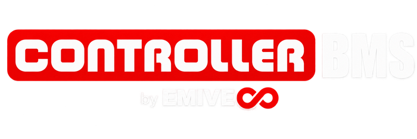

<!doctype html>
<html lang="pt-BR" translate="no">
  <head>
    <meta charset="utf-8" />
    <meta name="google" content="notranslate" />
    <meta name="viewport" content="width=device-width,initial-scale=1" />
    <title>Inventário · Diário Técnico</title>
    <meta name="theme-color" content="#c81e2c" />
    <meta name="mobile-web-app-capable" content="yes" />
    <meta name="apple-mobile-web-app-capable" content="yes" />
    <meta name="apple-mobile-web-app-title" content="Diário" />
    <link rel="manifest" href="manifest.webmanifest" />
    <link rel="apple-touch-icon" href="icon-180.png" />
    <link rel="icon" type="image/png" href="icon-192.png" />
    <!-- SheetJS: lê a planilha antiga (.xlsx) no navegador e gera o Excel exportado -->
    <script src="https://cdn.sheetjs.com/xlsx-0.20.3/package/dist/xlsx.full.min.js" integrity="sha384-EnyY0/GSHQGSxSgMwaIPzSESbqoOLSexfnSMN2AP+39Ckmn92stwABZynq1JyzdT" crossorigin="anonymous"></script>
    <!-- ExcelJS: monta a planilha exportada no modelo profissional (cores, painel, abas por sistema) -->
    <script src="vendor/exceljs-4.4.0.min.js"></script>
    <script src="config.js"></script>
    <style>
      :root {
        --r: #c81e2c;
        --rd: #8f0f19;
        --l: #e6e0e0;
        --d: #7a6d6d;
        --ok: #1f8a3b;
        --warn: #c47a00;
      }
      * {
        box-sizing: border-box;
      }
      body {
        margin: 0;
        font:
          15px/1.4 system-ui,
          -apple-system,
          "Segoe UI",
          Roboto,
          sans-serif;
        color: #201616;
        background: #fff;
      }
      .app {
        max-width: 980px;
        margin: 0 auto;
        padding: 10px 10px 80px;
      }
      header {
        border: 1px solid var(--l);
        border-top: 4px solid var(--r);
        border-radius: 10px;
        padding: 10px 14px;
        margin-bottom: 10px;
      }
      .hrow {
        display: flex;
        align-items: center;
        justify-content: space-between;
        gap: 10px;
        flex-wrap: wrap;
      }
      .logo {
        height: 30px;
        max-width: 60vw;
      }
      .htop {
        display: flex;
        align-items: center;
        justify-content: space-between;
        gap: 10px;
      }
      .htop .logo {
        min-width: 0;
        max-width: calc(100% - 90px);
        object-fit: contain;
        object-position: left center;
      }
      .hsair {
        flex: 0 0 auto;
        margin: 0;
      }
      .hr {
        display: flex;
        gap: 8px;
        align-items: center;
        flex-wrap: wrap;
        margin-top: 8px;
      }
      .hr .chipuser {
        border-radius: 14px;
        white-space: normal;
        min-width: 0;
        overflow-wrap: anywhere;
      }
      .chip {
        font-size: 11px;
        border: 1px solid var(--l);
        border-radius: 20px;
        padding: 3px 9px;
        color: var(--d);
        white-space: nowrap;
        display: inline-block;
      }
      .chip.ok {
        color: var(--ok);
        border-color: var(--ok);
      }
      .chip.warn {
        color: var(--warn);
        border-color: var(--warn);
      }
      .chip.red {
        color: var(--r);
        border-color: var(--r);
      }
      nav,
      .tabs {
        display: flex;
        gap: 2px;
        border-bottom: 1px solid var(--l);
        margin-bottom: 12px;
        overflow-x: auto;
      }
      nav button,
      .tabs button {
        background: none;
        border: 0;
        border-bottom: 2px solid transparent;
        padding: 10px 14px;
        cursor: pointer;
        color: var(--d);
        font: inherit;
        font-weight: 600;
        white-space: nowrap;
      }
      nav button.on,
      .tabs button.on {
        color: var(--r);
        border-color: var(--r);
      }
      .card {
        border: 1px solid var(--l);
        border-radius: 10px;
        padding: 14px;
        margin-bottom: 12px;
      }
      .card h2 {
        font-size: 13px;
        text-transform: uppercase;
        letter-spacing: 0.04em;
        color: var(--r);
        margin: 0 0 10px;
      }
      h3 {
        margin: 0 0 6px;
        font-size: 17px;
      }
      .g {
        display: grid;
        grid-template-columns: 1fr 1fr;
        gap: 0 10px;
      }
      label {
        display: block;
        font-size: 12px;
        color: var(--d);
        margin: 8px 0 3px;
      }
      input,
      select,
      textarea {
        width: 100%;
        padding: 10px;
        border: 1px solid var(--l);
        border-radius: 6px;
        font: inherit;
        background: #fbfbfb;
      }
      input:focus,
      select:focus,
      textarea:focus {
        outline: 2px solid var(--r);
        outline-offset: 1px;
      }
      textarea {
        resize: vertical;
      }
      .g > *,
      .row > * {
        min-width: 0;
      }
      input[type="date"],
      input[type="time"] {
        display: block;
        min-width: 0;
        max-width: 100%;
        -webkit-appearance: none;
        appearance: none;
        min-height: 43px;
        line-height: 1.2;
      }
      input[type="date"]::-webkit-date-and-time-value,
      input[type="time"]::-webkit-date-and-time-value {
        text-align: left;
        min-width: 0;
      }
      .top .nm {
        min-width: 0;
        overflow-wrap: anywhere;
      }
      .top {
        flex-wrap: wrap;
      }
      .li .t {
        flex-wrap: wrap;
      }
      .b {
        background: var(--r);
        color: #fff;
        border: 0;
        border-radius: 6px;
        padding: 11px 15px;
        font: inherit;
        font-weight: 600;
        cursor: pointer;
        margin: 6px 6px 0 0;
      }
      .b:hover {
        background: var(--rd);
      }
      .b.o {
        background: #fff;
        color: #201616;
        border: 1px solid var(--l);
      }
      .b.o:hover {
        background: #f6f2f2;
      }
      .b.s {
        padding: 7px 10px;
        font-size: 12.5px;
      }
      .row {
        display: flex;
        gap: 8px;
        flex-wrap: wrap;
        align-items: flex-end;
      }
      .row > * {
        flex: 1;
        min-width: 140px;
      }
      .eq {
        border: 1px solid var(--l);
        border-left: 3px solid var(--r);
        border-radius: 8px;
        padding: 10px 12px;
        margin: 10px 0;
      }
      .k {
        display: flex;
        gap: 9px;
        align-items: center;
        margin: 6px 0;
        color: #201616;
        font-size: 14px;
      }
      .k input {
        width: auto;
        transform: scale(1.2);
      }
      small,
      .sm {
        color: var(--d);
        font-size: 12.5px;
      }
      .li {
        border: 1px solid var(--l);
        border-radius: 8px;
        padding: 11px 13px;
        margin: 8px 0;
        cursor: pointer;
      }
      .li:hover {
        background: #faf6f6;
      }
      .li .t {
        display: flex;
        justify-content: space-between;
        gap: 8px;
        align-items: center;
      }
      .note {
        background: #fff3b0;
        border-radius: 6px;
        padding: 8px 10px;
        margin: 8px 0;
        font-size: 13px;
      }
      .top {
        display: flex;
        justify-content: space-between;
        align-items: center;
        gap: 8px;
      }
      .center {
        text-align: center;
        padding: 40px 10px;
        color: var(--d);
      }
      .login {
        max-width: 380px;
        margin: 40px auto;
      }
      .login img {
        max-width: 100%;
      }
      .err {
        color: var(--r);
        font-size: 13px;
        min-height: 18px;
        margin-top: 8px;
      }
      details summary {
        cursor: pointer;
        color: var(--r);
        font-size: 13px;
        margin: 8px 0;
      }
      #toast {
        position: fixed;
        left: 50%;
        bottom: 18px;
        transform: translateX(-50%);
        background: #201616;
        color: #fff;
        padding: 10px 16px;
        border-radius: 8px;
        font-size: 14px;
        display: none;
        z-index: 9;
        max-width: 90vw;
      }
      details.eq > summary {
        font-size: 15px;
        margin: 0;
      }
      details.eq > summary.sp {
        display: flex;
        align-items: center;
        justify-content: space-between;
        gap: 8px;
      }
      details.eq > summary.sp .chip {
        margin-left: auto;
        flex: 0 0 auto;
      }
      .rd {
        color: var(--r);
      }
      .b.am,
      .chip.am {
        color: #8a5a00;
        border-color: #c47a00;
        background: #fff6e0;
      }
      fieldset.ro {
        border: 0;
        padding: 0;
        margin: 0;
        min-width: 0;
      }
      .ro .b,
      .ro summary ~ .b {
        display: none;
      }
      @media (max-width: 640px) {
        .g {
          grid-template-columns: 1fr;
        }
      }

      /* ===== LAYOUT: cabeçalho escuro (logo branca), sistema centralizado e fundo no computador ===== */
      header {
        background: #18222e;
        border: 0;
        border-top: 4px solid var(--r);
        border-radius: 12px;
        color: #fff;
      }
      .htop .logo {
        height: 60px;
        max-width: calc(100% - 90px);
      }
      header .chip {
        color: #d7dde5;
        border-color: rgba(255, 255, 255, 0.35);
        background: transparent;
      }
      header .chip.ok {
        color: #6fd48b;
        border-color: #6fd48b;
      }
      header .chip.warn {
        color: #ffc15a;
        border-color: #ffc15a;
      }
      header .b.o {
        background: transparent;
        color: #fff;
        border-color: rgba(255, 255, 255, 0.5);
      }
      .login img {
        display: block;
        width: 100%;
        max-width: 100%;
        box-sizing: border-box;
        background: #18222e;
        border-radius: 10px;
        padding: 14px 18px;
        margin-bottom: 12px;
      }
      @media (min-width: 900px) {
        body {
          background: #0d2a4d url(fundo.jpg) center / cover fixed no-repeat;
          min-height: 100vh;
        }
        .app {
          margin: 28px auto;
          max-width: 1000px;
          padding: 18px 22px 40px;
          border-radius: 16px;
          background: #fff;
          box-shadow: 0 12px 40px rgba(0, 0, 0, 0.4);
        }
        .app:has(> .login) {
          background: transparent;
          box-shadow: none;
        }
        .login {
          margin-top: 10vh;
          background: #fff;
          box-shadow: 0 12px 40px rgba(0, 0, 0, 0.4);
        }
      }
    /* ===== Foto no fundo do cabeçalho e do logo do login (fundo-topo.jpg) ===== */
header{background:linear-gradient(rgba(10,25,45,.45),rgba(10,25,45,.45)),url(fundo.jpg) center 50%/cover no-repeat !important;border-top:4px solid var(--r)}
.htop{padding-top:6px;padding-bottom:6px}
.htop .logo{height:64px}
@media (min-width:900px){
 body{background:#0d2a4d url(fundo.jpg) center/cover fixed no-repeat}
 
 .htop .logo{height:84px}
 .login{margin-top:10vh}
 .login img{background:linear-gradient(rgba(10,25,45,.45),rgba(10,25,45,.45)),url(fundo.jpg) center 50%/cover no-repeat !important;border-radius:10px;padding:22px 30px;box-sizing:border-box}
}
.login img{background:linear-gradient(rgba(10,25,45,.45),rgba(10,25,45,.45)),url(fundo.jpg) center 50%/cover no-repeat !important}

/* ===== Tela fixa SÓ NO COMPUTADOR (a partir de 900 px): a página não rola; o card principal tem altura fixa
   e o conteúdo rola dentro dele. No celular a página rola normalmente, como antes. ===== */
@media (min-width: 900px) {
  html,
  body {
    height: 100%;
    overflow: hidden;
    overscroll-behavior: none;
  }
  .app {
    height: calc(100dvh - 40px);
    display: flex;
    flex-direction: column;
    overflow: hidden;
    box-sizing: border-box;
    margin: 20px auto;
    padding-bottom: 18px;
  }
  .app > header,
  .app > nav,
  .app > .card {
    flex: none;
  }
  .app > .card.login {
    max-height: 100%;
    overflow-y: auto;
  }
  .painel {
    --p: 0.8;
    flex: 0 1 auto;
    min-height: 0;
    height: calc(var(--p) * 100dvh);
    overflow-y: auto;
    overflow-x: hidden;
    overscroll-behavior: contain;
    border: 1px solid var(--l);
    border-radius: 14px;
    background: #fbf9f9;
    padding: 10px;
    margin-top: 8px;
  }
  /* altura de cada tela, em % da altura da tela do aparelho */
  .painel[data-tela="home"] { --p: 0.62; }
  .painel[data-tela="clientes"] { --p: 0.72; }
  .painel[data-tela="cliente"] { --p: 0.85; }
  .painel[data-tela="visita"] { --p: 0.88; }
  .painel[data-tela="catalogo"] { --p: 0.78; }
  .painel[data-tela="relatorios"] { --p: 0.85; }
  .painel[data-tela="simulados"] { --p: 0.85; }
  .painel[data-tela="concluidas"] { --p: 0.85; }
  .painel[data-tela="usuarios"] { --p: 0.8; }
  .painel[data-tela="config"] { --p: 0.55; }
  /* cliente e visita: topo parado + card auxiliar que leva o conteúdo */
  .painel[data-tela="cliente"],
  .painel[data-tela="visita"] {
    overflow: hidden;
    display: flex;
    flex-direction: column;
    padding: 10px 10px 0;
  }
  .painel[data-tela="cliente"] > .card,
  .painel[data-tela="cliente"] > .tabs,
  .painel[data-tela="visita"] > .card {
    flex: none;
  }
  .painel[data-tela="cliente"] > .tabs { margin: 6px 0; }
  .painel[data-tela="cliente"] > .card,
  .painel[data-tela="visita"] > .card { padding: 8px 12px; }
  .painel[data-tela="cliente"] > .card h3,
  .painel[data-tela="visita"] > .card h3 { margin: 4px 0 0; font-size: 17px; }
  .painel[data-tela="cliente"] > .card .b {
    display: inline-block;
    width: auto;
    padding: 8px 12px;
    margin: 6px 6px 0 0;
    font-size: 14px;
  }
  .aux {
    flex: 1 1 auto;
    min-height: 0;
    overflow-y: auto;
    overscroll-behavior: contain;
    margin: 0 -4px;
    padding: 10px 6px 12px;
    background: #fff;
    border: 1px solid var(--l);
    border-radius: 12px 12px 0 0;
    box-shadow: 0 -2px 10px rgba(0, 0, 0, 0.06);
  }
  .aux > .card { box-shadow: none; }
  .aux { scrollbar-width: none; -ms-overflow-style: none; }
  .aux::-webkit-scrollbar { display: none; width: 0; height: 0; }
}

/* ===== Computador: foto em alta qualidade (fundoh.png). Se o arquivo não existir, usa o fundo.jpg ===== */
@media (min-width: 900px) {
  body {
    background:
      url(fundoh.png) center / cover fixed no-repeat,
      #0d2a4d url(fundo.jpg) center / cover fixed no-repeat;
  }
  header {
    background:
      linear-gradient(rgba(10, 25, 45, 0.45), rgba(10, 25, 45, 0.45)),
      url(fundoh.png) center 50% / cover no-repeat,
      url(fundo.jpg) center 50% / cover no-repeat !important;
  }
  .login img {
    background:
      linear-gradient(rgba(10, 25, 45, 0.45), rgba(10, 25, 45, 0.45)),
      url(fundoh.png) center 50% / cover no-repeat,
      url(fundo.jpg) center 50% / cover no-repeat !important;
  }
}

/* Celular: foto no fundo e sistema numa caixa branca */
@media (max-width: 899px) {
  body { background: #0d2a4d url(fundo.jpg) center / cover fixed no-repeat; }
  .app { width: calc(100% - 20px); margin: 10px auto; padding: 10px 10px 20px; background: #fff; border-radius: 14px; box-shadow: 0 8px 30px rgba(0,0,0,.35); }
  .app:has(> .login) { background: transparent; box-shadow: none; }
}

/* Fundos brancos e menu de navegação arredondado */
nav, .tabs { background: #fff; border: 1px solid var(--l); border-radius: 14px; padding: 0 6px; }
nav button, .tabs button { border-radius: 10px 10px 0 0; }
.card { background: #fff; }
label { background: #fff; }
@media (max-width: 899px) {
  label { display: block; padding: 2px 4px; border-radius: 6px; }
}

/* setas iguais em todos os menus (o flex do summary.sp escondia a seta nativa) */
details.eq > summary { list-style: none; }
details.eq > summary::-webkit-details-marker { display: none; }
details.eq > summary::before { content: "\25B6"; display: inline-block; flex: 0 0 auto; font-size: 10px; line-height: 1; color: var(--r); margin-right: 8px; transition: transform .15s; }
details.eq[open] > summary::before { transform: rotate(90deg); }
details.eq > summary.sp::before { margin-right: 0; }
details.eq > summary .sm.sub { display: block; margin: 3px 0 0 18px; }
/* celular: o nome ocupa a linha inteira (em vermelho) e as etiquetas ficam embaixo */
@media (max-width: 899px) {
  .li > .t { flex-wrap: wrap; justify-content: flex-start; align-items: flex-start; row-gap: 6px; }
  .li > .t > b { flex: 1 1 100%; min-width: 0; color: var(--r); line-height: 1.25; overflow-wrap: anywhere; }
  .li > .t > span { display: flex; flex-wrap: wrap; gap: 6px; }
  .li > .sm { margin-top: 6px; }
  /* menu dentro do cartão: sem caixa extra */
  .card > details.eq { border: 0; border-radius: 0; padding: 0; margin: 0; }
  .card > details.eq > summary { padding: 2px 0; }
}

/* ===== NOVO LAYOUT: menu lateral fixo (computador) e hambúrguer (celular); cabeçalho em uma linha ===== */
header.hnew{display:flex;align-items:center;gap:12px;flex-wrap:nowrap;padding:6px 14px;margin-bottom:8px}
header.hnew .logo{height:46px;max-width:none;flex:0 0 auto;min-width:0}
header.hnew .hdir{margin-left:auto;display:flex;flex-direction:column;align-items:flex-end;gap:6px;min-width:0;max-width:78%}
header.hnew .hinfo{display:flex;align-items:center;gap:8px;min-width:0;flex-wrap:wrap;justify-content:flex-end}
header.hnew .hsair{margin:0;flex:0 0 auto}
.heq{display:inline-flex;align-items:center;gap:6px;margin:0;color:#fff;font-size:12px;background:transparent !important;padding:0}
.heq select,#eqsel{background:rgba(255,255,255,.6) !important;color:#000 !important;border:1px solid rgba(255,255,255,.7)}
.heq select{width:auto;min-width:120px;margin:0;padding:4px 6px;font-size:13px}
.heq select option,#eqsel option{color:#000;background:#fff}
.burger{display:none;background:transparent;border:1px solid rgba(255,255,255,.5);color:#fff;border-radius:8px;font-size:22px;line-height:1;padding:6px 12px;cursor:pointer;flex:0 0 auto}
.mbk{display:none}
.nuser{margin-top:auto;padding:10px 12px 6px;border-top:1px solid var(--l);display:flex;flex-direction:column;gap:2px;font-size:12px;color:#666;position:sticky;bottom:0;background:#fff;overflow-wrap:anywhere}
.nuser .nnome{font-size:14px;color:#222}
.atalhos{display:flex;gap:8px;flex-wrap:wrap}.atalhos .b{margin:0;width:auto;flex:1 1 200px}
.shell{display:block}
.card.cinl{display:flex;align-items:center;gap:10px;flex-wrap:wrap}
.cinl .top{flex:0 0 auto;gap:8px}
.cinl h3{margin:0 !important;flex:1 1 180px;min-width:0}
.cinl .cacts{display:flex;gap:8px;flex-wrap:wrap;align-items:center;flex:0 1 auto}
.cinl .cacts .b{width:auto;margin:0;padding:8px 12px;font-size:14px}
.cinl .cacts .note,.cinl .cacts p{flex:1 1 100%;margin:0}
details.hist .hl{padding:6px 0;border-top:1px solid var(--l)}
details.hist .hlc{margin:2px 0 0 10px;overflow-wrap:anywhere}
@media (min-width:900px){
  .app{max-width:1320px !important;width:calc(100% - 40px);padding:12px 16px 16px !important}
  .shell{flex:1 1 auto;min-height:0;display:flex !important;gap:12px}
  .shell > nav{flex:0 0 176px;flex-direction:column;overflow-y:auto;margin:0;padding:8px;border-radius:14px;align-self:stretch;gap:4px;background:#fff;border:1px solid var(--l)}
  .shell > nav button{border:0;border-left:3px solid transparent;border-radius:8px;text-align:left;padding:11px 12px}
  .shell > nav button.on{background:#fdf0f0;border-left-color:var(--r);color:var(--r)}
  .shell > nav button:hover{background:#f6f6f6}
  .main{flex:1 1 auto;min-width:0;min-height:0;display:flex;flex-direction:column}
  .main > .painel{flex:1 1 auto !important;height:auto !important;margin-top:0 !important}
  header.hnew .logo{height:56px}
}
@media (max-width:899px){
  .burger{display:inline-block}
  header.hnew{flex-wrap:wrap;gap:8px}
  header.hnew .logo{height:38px}
  header.hnew .hdir{max-width:100%;flex:1 1 auto}
  .shell > nav{position:fixed;left:0;top:0;bottom:0;width:78%;max-width:300px;z-index:60;flex-direction:column;margin:0;border-radius:0 14px 14px 0;padding:14px 8px;overflow-y:auto;transform:translateX(-105%);transition:transform .3s cubic-bezier(.22,.8,.3,1);will-change:transform;box-shadow:0 0 30px rgba(0,0,0,.4);background:#fff}
  .shell > nav.open{transform:none}
  .shell > nav button{border:0;border-left:3px solid transparent;text-align:left;padding:14px 12px;border-radius:8px}
  .shell > nav button.on{background:#fdf0f0;border-left-color:var(--r);color:var(--r)}
  .mbk{display:block;position:fixed;inset:0;background:rgba(0,0,0,.45);z-index:55;opacity:0;pointer-events:none;transition:opacity .3s ease}
  .mbk.on{opacity:1;pointer-events:auto}
  .shell > nav{position:fixed}
}

/* ===================== INVENTÁRIO (estilos próprios desta página) ===================== */
.painel[data-tela="lista"],.painel[data-tela="importar"],.painel[data-tela="cliente"]{--p:.85}
.painel[data-tela="cliente"] > .kpis{flex:none;margin:4px 0}
.kpis{display:grid;grid-template-columns:repeat(auto-fit,minmax(118px,1fr));gap:8px;margin:8px 0}
.kpi{border:1px solid var(--l);border-top:3px solid var(--d);border-radius:10px;padding:8px 10px;background:#fff}
.kpi .n{font-size:22px;font-weight:700;line-height:1.1}
.kpi .r{font-size:11.5px;color:var(--d)}
.kpi.ok{border-top-color:var(--ok)}.kpi.ok .n{color:var(--ok)}
.kpi.am{border-top-color:var(--warn)}.kpi.am .n{color:var(--warn)}
.kpi.red{border-top-color:var(--r)}.kpi.red .n{color:var(--r)}
.filtros{display:flex;gap:8px;flex-wrap:wrap;align-items:flex-end;margin:6px 0 4px}
.filtros > *{flex:1 1 150px;min-width:0}
.filtros > .busca{flex:3 1 240px}
.filtros label{margin-top:0}
.st{display:inline-block;font-size:11px;font-weight:700;border-radius:20px;padding:2px 8px;white-space:nowrap;border:1px solid transparent}
.st.ONLINE,.st.OPERANDO{background:#e3f4e7;color:#1f6b33;border-color:#a9dcb5}
.st.FALHA,.st.VERIFICAR{background:#fff4d6;color:#7a5600;border-color:#f0d58c}
.st.OFFLINE{background:#fde3e3;color:#9c0006;border-color:#f3aaaa}
.st.VAZIO,.st.x{background:#eee;color:#666;border-color:#ddd}
.tbl{width:100%;border-collapse:collapse;font-size:13.5px}
.tbl th{position:sticky;top:0;background:#2e2f33;color:#fff;text-align:left;font-size:12px;font-weight:600;padding:7px 8px;z-index:1}
.tbl td{border-bottom:1px solid var(--l);padding:7px 8px;vertical-align:top;overflow-wrap:break-word;word-break:normal}
.tbl td[data-l="Tipo"],.tbl td[data-l="Status"],.tbl td[data-l="Pavimento"]{white-space:nowrap}
.tbl tr.it{cursor:pointer}
.tbl tr.it:hover td{background:#faf6f6}
.tbl tr.it.on td{background:#fdf0f0}
.tbl tr.it.al td:first-child{box-shadow:inset 3px 0 0 #ed7d31}
.tbl tr.det > td{background:#fffdfb;padding:10px 12px 14px}
.tbl .mono{font-family:ui-monospace,Consolas,monospace;font-size:12.5px}
.tblw{overflow-x:auto;border:1px solid var(--l);border-radius:10px;background:#fff}
.tag-al{display:inline-block;margin-left:6px;font-size:10.5px;font-weight:700;color:#843c0c;background:#fce4d6;border-radius:10px;padding:1px 6px}
.senha{display:flex;gap:6px;align-items:center}
.senha input{flex:1 1 auto}
.senha .b{margin:0;flex:0 0 auto}
.ver{font-size:12px;color:var(--ok)}
.ver.nao{color:var(--d)}
.prev{border:1px solid var(--l);border-radius:10px;padding:10px 12px;margin:8px 0;background:#fff}
.prev table{width:100%;border-collapse:collapse;font-size:13px}
.prev td,.prev th{border-bottom:1px solid var(--l);padding:5px 6px;text-align:left}
.al{border:1px solid var(--l);border-left:4px solid var(--warn);border-radius:8px;padding:9px 11px;margin:8px 0;background:#fff}
.al.NOK{border-left-color:var(--r)}
.al.OK{border-left-color:var(--ok);opacity:.65}
.al .t{display:flex;justify-content:space-between;gap:8px;align-items:center;flex-wrap:wrap}
.al .ids a{color:var(--r);cursor:pointer;text-decoration:underline;margin-right:6px;font-size:12.5px}
.sitsel{width:auto;padding:5px 8px;font-weight:700}
.mais{display:block;margin:10px auto}
.cent{border:1px solid var(--l);border-radius:8px;padding:8px 10px;margin:6px 0;background:#fff}
.cent table{width:100%;border-collapse:collapse;font-size:12.5px}
.cent td{border-bottom:1px solid #f0ecec;padding:4px 6px}
.cent td:first-child{color:var(--d);width:45%}
@media (max-width:899px){
  .tbl thead{display:none}
  .tbl,.tbl tbody,.tbl tr,.tbl td{display:block;width:100%}
  .tbl tr.it{border:1px solid var(--l);border-radius:8px;margin:8px 0;padding:6px 8px;background:#fff}
  .tbl tr.it td{border:0;padding:2px 0}
  .tbl tr.it td[data-l]::before{content:attr(data-l) ": ";color:var(--d);font-size:11.5px}
  .tbl tr.it td.c-tag{font-weight:700;color:var(--r)}
  .tbl tr.det{border:1px solid var(--r);border-radius:8px;margin:-6px 0 10px}
  .tbl tr.det > td{border:0}
  .tbl tr.it td.vazio{display:none}
}
/* celular: quadros de resumo menores (3 por linha), para a lista aparecer logo */
@media (max-width:600px){
  .kpis{grid-template-columns:repeat(3,1fr);gap:6px}
  .kpi{padding:6px 7px}
  .kpi .n{font-size:18px}
  .kpi .r{font-size:10.5px;line-height:1.2}
  .tabs button{padding:9px 10px}
}
</style>
  </head>
  <body>
    <div id="app" class="app"></div>
    <div id="toast"></div>
    <script>
      "use strict";
      /* ==================================================================
   INVENTÁRIO DE DISPOSITIVOS (arquivo à parte, igual ao simulado)
   - usa o mesmo Firebase, o mesmo login e o mesmo visual do diário (index.html)
   - não altera nada no diário: só lê clientes, equipes, usuários e configurações
   Coleções novas no Firestore:
     inventario         {clienteId}__{SISTEMA}: dispositivos de um sistema (sem senhas)
     inventarioAcessos  {clienteId}__{SISTEMA}: logins e senhas daquele sistema (separados, para as regras protegerem)
     inventarioMeta     {clienteId}: versão, arquivo de origem, decisões dos alertas, legenda e resumo
   ================================================================== */

      /* ==================================================================
   1. UTILIDADES
   ================================================================== */
      const FBCFG = window.FIREBASE_CONFIG || {};
      const LOCAL = new URLSearchParams(location.search).has("local"); // ?local=1 → testa sem Firebase (dados só neste navegador)
      const USE_FB = !LOCAL && !!FBCFG.apiKey && !String(FBCFG.apiKey).startsWith("SUA");
      const $ = (s, r = document) => r.querySelector(s);
      const pad = (n) => String(n).padStart(2, "0");
      const uid = () => Date.now().toString(36) + Math.random().toString(36).slice(2, 7);
      const clone = (o) => JSON.parse(JSON.stringify(o));
      const esc = (s) => String(s ?? "").replace(/[&<>"]/g, (c) => ({ "&": "&amp;", "<": "&lt;", ">": "&gt;", '"': "&quot;" })[c]);
      const hoje = () => {
        const d = new Date();
        return `${d.getFullYear()}-${pad(d.getMonth() + 1)}-${pad(d.getDate())}`;
      };
      const bd = (iso) => (iso ? String(iso).slice(0, 10).split("-").reverse().join("/") : "");
      const agora = () => {
        const d = new Date();
        return `${bd(hoje())} ${pad(d.getHours())}:${pad(d.getMinutes())}`;
      };
      const plural = (n, s = "dispositivo", p = "dispositivos") => `${n} ${n === 1 ? s : p}`;
      // data e hora da confirmação (ex.: 2026-11-20T07:55) → 20/11/2026 07:55
      const agoraIso = () => {
        const d = new Date();
        return `${hoje()}T${pad(d.getHours())}:${pad(d.getMinutes())}`;
      };
      const dh = (iso) => (iso ? bd(iso) + (String(iso).length > 10 ? " " + String(iso).slice(11, 16) : "") : "");
      const semAcento = (s) => String(s || "").normalize("NFD").replace(/[̀-ͯ]/g, "");
      function toast(msg) {
        const t = $("#toast");
        t.textContent = msg;
        t.style.display = "block";
        clearTimeout(toast.t);
        toast.t = setTimeout(() => (t.style.display = "none"), 3200);
      }

      /* ==================================================================
   2. BANCO DE DADOS (Firebase ou modo local de teste)
   ================================================================== */
      let DB;
      // O Firestore não aceita lista dentro de lista (ex.: [["Modelo","NVD3316P"], …]).
      // Na gravação, cada lista interna vira {a:[…]}; na leitura, volta a ser lista. Vale para os dois modos.
      const paraFS = (x) =>
        Array.isArray(x)
          ? x.map((y) => (Array.isArray(y) ? { a: paraFS(y) } : paraFS(y)))
          : x && typeof x === "object"
            ? Object.fromEntries(Object.entries(x).map(([k, v]) => [k, paraFS(v)]))
            : x;
      const deFS = (x) =>
        Array.isArray(x)
          ? x.map((y) => (y && typeof y === "object" && !Array.isArray(y) && Object.keys(y).length === 1 && Array.isArray(y.a) ? deFS(y.a) : deFS(y)))
          : x && typeof x === "object"
            ? Object.fromEntries(Object.entries(x).map(([k, v]) => [k, deFS(v)]))
            : x;
      function makeLocalDB() {
        const k = (c) => "inv-local:" + c;
        const read = (c) => {
          try {
            return JSON.parse(localStorage.getItem(k(c)) || "{}");
          } catch (e) {
            return {};
          }
        };
        const write = (c, o) => localStorage.setItem(k(c), JSON.stringify(o));
        const subs = [];
        const match = (d, f, v) => {
          if (!f) return true;
          const w = typeof f === "string" ? { [f]: v } : f;
          return Object.entries(w).every(([a, b]) => d[a] === b);
        };
        const rows = (c, f, v) => Object.values(read(c)).filter((d) => match(d, f, v)).map((d) => deFS(clone(d)));
        const notify = (c) => subs.filter((s) => s.col === c).forEach((s) => s.fire());
        return {
          mode: "local",
          async get(c, id) {
            const d = read(c)[id];
            return d ? deFS(clone(d)) : null;
          },
          async set(c, id, data) {
            const o = read(c);
            o[id] = paraFS(clone(data));
            write(c, o);
            notify(c);
          },
          async del(c, id) {
            const o = read(c);
            delete o[id];
            write(c, o);
            notify(c);
          },
          async transacao(c, id, fn) {
            const o = read(c);
            const n = fn(o[id] ? deFS(clone(o[id])) : null);
            o[id] = paraFS(clone(n));
            write(c, o);
            notify(c);
            return n;
          },
          async list(c, f, v) {
            return rows(c, f, v);
          },
          listen(c, f, v, cb) {
            const s = { col: c, fire: () => cb(rows(c, f, v)) };
            subs.push(s);
            s.fire();
            return () => {
              const i = subs.indexOf(s);
              if (i >= 0) subs.splice(i, 1);
            };
          },
        };
      }
      async function makeFirebaseDB() {
        const base = "https://www.gstatic.com/firebasejs/10.13.2/";
        const [appM, fsM, authM] = await Promise.all([import(base + "firebase-app.js"), import(base + "firebase-firestore.js"), import(base + "firebase-auth.js")]);
        const app = appM.initializeApp(FBCFG);
        let renovaAC = async () => {};
        if (window.FIREBASE_APPCHECK_KEY) {
          try {
            const acM = await import(base + "firebase-app-check.js");
            const ac = acM.initializeAppCheck(app, {
              provider:
                window.FIREBASE_APPCHECK_TIPO === "enterprise"
                  ? new acM.ReCaptchaEnterpriseProvider(window.FIREBASE_APPCHECK_KEY)
                  : new acM.ReCaptchaV3Provider(window.FIREBASE_APPCHECK_KEY),
              isTokenAutoRefreshEnabled: true,
            });
            renovaAC = (forcar) => Promise.race([acM.getToken(ac, !!forcar), new Promise((r) => setTimeout(r, 8000))]).catch((e) => console.warn("App Check", e));
            await renovaAC(false); // primeira leitura só depois do "atestado" do aparelho
          } catch (e) {
            console.warn("App Check não iniciou", e);
          }
        }
        const PASSAGEIRO = ["permission-denied", "unavailable", "unauthenticated", "deadline-exceeded"];
        const espera = (ms) => new Promise((r) => setTimeout(r, ms));
        // falha passageira (atestado vencido, rede oscilando): tenta de novo antes de mostrar erro
        async function tenta(fn) {
          for (let i = 0; ; i++) {
            try {
              return await fn();
            } catch (e) {
              if (i >= 2 || !PASSAGEIRO.includes(e.code)) throw e;
              if (e.code === "permission-denied") await renovaAC(true);
              await espera(1200 * (i + 1));
            }
          }
        }
        let db;
        try {
          db = fsM.initializeFirestore(app, { localCache: fsM.persistentLocalCache({ tabManager: fsM.persistentMultipleTabManager() }), experimentalAutoDetectLongPolling: true });
        } catch (e) {
          db = fsM.getFirestore(app);
        }
        const auth = authM.getAuth(app);
        const q = (c, f, v) => {
          const col = fsM.collection(db, c),
            w = !f ? [] : typeof f === "string" ? [[f, v]] : Object.entries(f);
          return w.length ? fsM.query(col, ...w.map(([a, b]) => fsM.where(a, "==", b))) : col;
        };
        return {
          mode: "firebase",
          auth,
          authM,
          async get(c, id) {
            const s = await tenta(() => fsM.getDoc(fsM.doc(db, c, id)));
            return s.exists() ? deFS(s.data()) : null;
          },
          async set(c, id, data) {
            const d = paraFS(clone(data));
            await tenta(() => fsM.setDoc(fsM.doc(db, c, id), d));
          },
          async del(c, id) {
            await fsM.deleteDoc(fsM.doc(db, c, id));
          },
          async transacao(c, id, fn) {
            const ref = fsM.doc(db, c, id);
            try {
              return await tenta(() =>
                fsM.runTransaction(db, async (t) => {
                  const s = await t.get(ref);
                  const n = fn(s.exists() ? deFS(s.data()) : null);
                  t.set(ref, paraFS(clone(n)));
                  return n;
                }),
              );
            } catch (e) {
              if (navigator.onLine && e.code !== "unavailable") throw e;
              const n = fn(null); // sem internet: grava a versão local (o Firestore envia quando voltar)
              await fsM.setDoc(ref, paraFS(clone(n)));
              return n;
            }
          },
          async list(c, f, v) {
            const s = await tenta(() => fsM.getDocs(q(c, f, v)));
            return s.docs.map((d) => deFS(d.data()));
          },
          // atualização em tempo real que cai por falha passageira é reaberta sozinha
          listen(c, f, v, cb) {
            let un = null,
              parado = false,
              falhas = 0;
            const abre = () => {
              un = fsM.onSnapshot(
                q(c, f, v),
                (s) => {
                  falhas = 0;
                  cb(s.docs.map((d) => deFS(d.data())));
                },
                async (e) => {
                  if (parado) return;
                  if (PASSAGEIRO.includes(e.code) && falhas < 6) {
                    falhas++;
                    console.warn("reabrindo", c, e.code);
                    if (e.code === "permission-denied") await renovaAC(true);
                    await espera(1500 * falhas);
                    if (!parado) abre();
                    return;
                  }
                  console.warn("leitura", c, e);
                  toast(e.code === "permission-denied" ? `Sem permissão para ler "${c}". Confira as regras do Firestore.` : "Falha de conexão ao ler " + c);
                },
              );
            };
            abre();
            return () => {
              parado = true;
              if (un) un();
            };
          },
        };
      }

      /* registro de auditoria (mesma coleção do diário) */
      function audita(acao, col, docId, det) {
        if (!S.user || !S.me || DB.mode !== "firebase") return;
        const d = new Date(),
          id = uid();
        DB.set("auditoria", id, {
          id,
          uid: S.user.uid,
          nome: S.me.nome || "",
          email: S.user.email || "",
          papel: S.me.papel || "",
          equipeId: S.me.equipeId || "",
          acao,
          col,
          docId: docId || "",
          det: String(det || "").slice(0, 300),
          ts: d.getTime(),
          dia: hoje(),
          hora: `${pad(d.getHours())}:${pad(d.getMinutes())}`,
        }).catch((e) => console.warn("auditoria", e.code || e.message));
      }

      /* gravação com indicador "Salvando…/Salvo" */
      let gravando = 0;
      async function grava(c, id, data) {
        gravando++;
        showSave();
        try {
          await DB.set(c, id, data);
          return true;
        } catch (e) {
          console.error(e);
          toast(e.code === "permission-denied" ? "Sem permissão para salvar. Avise o administrador (regras do Firestore)." : "Não consegui salvar: " + (e.code || e.message));
          return false;
        } finally {
          gravando--;
          showSave();
        }
      }
      async function gravaT(c, id, fn) {
        gravando++;
        showSave();
        try {
          return await DB.transacao(c, id, fn);
        } catch (e) {
          console.error(e);
          toast(e.code === "permission-denied" ? "Sem permissão para salvar. Avise o administrador (regras do Firestore)." : "Não consegui salvar: " + (e.code || e.message));
          return null;
        } finally {
          gravando--;
          showSave();
        }
      }
      /* ---- gravação sem apagar o que outra pessoa salvou ao mesmo tempo ----
         base = como o documento estava quando chegou do servidor; local = como está nesta tela; remoto = como está agora no servidor.
         Se o remoto mudou desde a base, junta: vale o que ESTA tela alterou (por dispositivo / por chave) e o resto fica como está no servidor. */
      const estavel = (x) =>
        Array.isArray(x) ? "[" + x.map(estavel).join(",") + "]" : x && typeof x === "object" ? "{" + Object.keys(x).sort().map((k) => JSON.stringify(k) + ":" + estavel(x[k])).join(",") + "}" : JSON.stringify(x === undefined ? null : x);
      const igualJ = (a, b) => estavel(a) === estavel(b);
      function mescla3(B, L, R, lista, mapas = []) {
        if (!R || !B || igualJ(B, R)) return L;
        const out = {};
        new Set([...Object.keys(L), ...Object.keys(R)]).forEach((k) => {
          if (k === lista || mapas.includes(k)) return;
          out[k] = igualJ(L[k], B[k]) ? R[k] : L[k];
        });
        if (lista) {
          const id = (i) => i.id;
          const mB = new Map((B[lista] || []).map((i) => [id(i), i])),
            mL = new Map((L[lista] || []).map((i) => [id(i), i])),
            mR = new Set((R[lista] || []).map(id));
          out[lista] = (R[lista] || [])
            .filter((i) => !(mB.has(id(i)) && !mL.has(id(i)))) // apagado nesta tela
            .map((i) => (mB.has(id(i)) && mL.has(id(i)) && !igualJ(mL.get(id(i)), mB.get(id(i))) ? mL.get(id(i)) : i))
            .concat((L[lista] || []).filter((i) => !mB.has(id(i)) && !mR.has(id(i)))); // criado nesta tela
          // criado nesta tela com o mesmo código que outra pessoa acabou de usar: ganha o próximo código livre
          const usados = new Set(out[lista].map(id));
          (L[lista] || [])
            .filter((i) => !mB.has(id(i)) && mR.has(id(i)) && !igualJ(i, (R[lista] || []).find((r) => id(r) === id(i))))
            .forEach((i) => {
              const m = String(id(i)).match(/^(.*?)(\d+)$/);
              let k = 0,
                novo;
              if (m) {
                k = Math.max(...[...usados].map((x) => (String(x).startsWith(m[1]) ? +String(x).slice(m[1].length) || 0 : 0)), +m[2]);
                do novo = m[1] + String(++k).padStart(m[2].length, "0");
                while (usados.has(novo));
              } else {
                do novo = id(i) + "-" + ++k;
                while (usados.has(novo));
              }
              usados.add(novo);
              out[lista].push({ ...i, id: novo });
            });
        }
        mapas.forEach((k) => {
          const b = B[k] || {},
            l = L[k] || {},
            r = R[k] || {},
            m = {};
          new Set([...Object.keys(l), ...Object.keys(r), ...Object.keys(b)]).forEach((x) => {
            const v = igualJ(l[x], b[x]) ? r[x] : l[x];
            if (v !== undefined) m[x] = v;
          });
          out[k] = m;
        });
        return out;
      }
      function showSave() {
        const el = $("#savestat");
        if (!el) return;
        el.textContent = !navigator.onLine ? "Sem internet" : gravando ? "Salvando…" : "Salvo";
        el.className = "chip " + (!navigator.onLine || gravando ? "warn" : "ok");
      }
      window.addEventListener("online", showSave);
      window.addEventListener("offline", showSave);

      /* ==================================================================
   3. ESTADO, PERFIS E PERMISSÕES
   ================================================================== */
      const S = {
        base: {}, // última versão de cada documento vinda do servidor (para juntar gravações simultâneas)
        authChecked: false,
        user: null,
        me: null,
        ready: false,
        fatal: "",
        semAcesso: "",
        view: "lista",
        menuAb: false,
        cfg: {},
        eq: [],
        eqSel: "",
        clientes: [],
        metas: [],
        busca: "",
        cliId: "",
        aba: "",
        inv: {}, // sistema -> documento do inventário
        aces: {}, // sistema -> documento de acessos
        meta: null,
        fBusca: "",
        fPav: "",
        fSt: "",
        fAl: false,
        lim: 200,
        aberto: "",
        vistas: {}, // senhas reveladas (id do campo)
        imp: { cliId: "", nome: "", res: null, erro: "", salvando: false },
      };
      const PAPEIS = { admin: "Administrador", supervisor: "Supervisor", tecnico: "Técnico" };
      // admin: tudo (inclusive subir planilhas, criar e excluir); supervisor: altera os dispositivos que já existem;
      // supervisor e técnico (iguais, 24/11/2026): editam dispositivos e senhas, confirmam senhas, adicionam dispositivos e criam pelo catálogo;
      // subir planilha, excluir dispositivo e excluir inventário ficam só com o administrador.
      const PERM = {
        admin: ["*"],
        supervisor: ["inv.editar", "inv.acesso", "inv.confirmar", "inv.alertas", "inv.legenda", "inv.catalogo", "inv.criarTipo", "inv.novo"],
        tecnico: ["inv.editar", "inv.acesso", "inv.confirmar", "inv.alertas", "inv.legenda", "inv.catalogo", "inv.criarTipo", "inv.novo"],
      };
      const pode = (a) => {
        const p = PERM[(S.me || {}).papel] || [];
        return p.includes("*") || p.includes(a);
      };
      const ehAdmin = () => (S.me || {}).papel === "admin";
      const eqNome = (id) => (S.eq.find((e) => e.id === id) || {}).nome || "(sem equipe)";
      const eqAtiva = () => (ehAdmin() ? S.eqSel : S.me.equipeId);
      const filtro = (o = {}) => {
        const e = eqAtiva();
        return e ? { ...o, equipeId: e } : o;
      };
      const meuNome = () => (S.me && S.me.nome) || (S.user && S.user.email) || "";
      const cliNome = (id) => (S.clientes.find((c) => c.id === id) || {}).unidade || id;

      /* ==================================================================
   4. REGRAS DO INVENTÁRIO (sistemas, colunas, padronização)
   ================================================================== */
      const SISTEMAS = ["CFTV", "SCA", "SAI", "SDAI", "AUTOMAÇÃO", "SONORIZAÇÃO"];
      const SISTEMAS_ABA = { CFTV: "CFTV", SCA: "SCA", SAI: "SAI", SDAI: "SDAI", "AUTOMAÇÃO": "AUTOMAÇÃO", AUTOMACAO: "AUTOMAÇÃO", "SONORIZAÇÃO": "SONORIZAÇÃO", SONORIZACAO: "SONORIZAÇÃO" };
      const CODIGO = { "AUTOMAÇÃO": "AUT", "SONORIZAÇÃO": "SON" };
      const docId = (cliId, sis) => `${cliId}__${semAcento(sis).toUpperCase()}`;
      const SINONIMOS = {
        "TIPO DO EQUIPAMENTO": "tipo",
        "TIPO DE EQUIPAMENTO": "tipo",
        TIPO: "tipo",
        MODELO: "modelo",
        FABRICANTE: "fabricante",
        TAG: "tag",
        IP: "ip",
        PAV: "pav",
        PAVIMENTO: "pav",
        NVR: "nvr",
        DVR: "nvr",
        CANAL: "canal",
        "LAÇO": "laco",
        LACO: "laco",
        STATUS: "status",
        LOGIN: "login",
        "LOGIN/MASTER": "login",
        SENHA: "senha",
        "SENHA/MASTER": "senha",
        "LOGIN/REMOTO": "login2",
        "SENHA/ACESSO REMOTO": "senha2",
        "SENHA/REMOTO": "senha2",
        "VERSÃO DE FIRMWARE": "firmware",
        // colunas da planilha que o próprio sistema exporta (para atualizar e subir de novo)
        ID: "id",
        FIRMWARE: "firmware",
        QUADRO: "quadro",
        "QUADRO DE DISTRIBUIÇÃO": "quadro",
        "QUADRO DE DISTRIBUICAO": "quadro",
        "OBSERVAÇÃO": "obs",
        OBSERVACAO: "obs",
        OBS: "obs",
        "LOGIN MASTER": "login",
        "SENHA MASTER": "senha",
        "LOGIN REMOTO": "login2",
        "SENHA REMOTA": "senha2",
        "LOGIN 2": "login2",
        "SENHA 2": "senha2",
        "TIPO NO CATÁLOGO": "tipoCatNome",
        "TIPO NO CATALOGO": "tipoCatNome",
        CAPACIDADE: "capacidade",
        "UNIDADE DA CAPACIDADE": "capUnid",
        "UNID. CAPACIDADE": "capUnid",
        "EM USO": "emUso",
        LIVRES: "-",
        // calculadas pelo sistema: ignoradas na leitura
        "PENDÊNCIAS EM ABERTO": "-",
        "SENHA CONFIRMADA EM": "-",
      };
      const STATUS = ["ONLINE", "OPERANDO", "FALHA", "OFFLINE", "VAZIO"];
      // "VERIFICAR" deixou de existir: virou FALHA (planilhas antigas e dados já gravados)
      const normSt = (x) => {
        const v = String(x || "").trim().toUpperCase();
        return v === "VERIFICAR" ? "FALHA" : v === "ON" ? "ONLINE" : v === "OFF" ? "OFFLINE" : v;
      };
      const ACESSO = ["login", "senha", "login2", "senha2"];
      const RE_SENHA = /SENHA|LOGIN|KEY|USUÁRIO|USUARIO|PASSWORD/i;
      // campos extras de cada sistema (além de tipo, modelo, fabricante, TAG, IP, pavimento, status)
      const EXTRAS = { CFTV: ["nvr", "canal"], SCA: ["firmware"], SDAI: ["laco"] };
      const ROT = {
        id: "ID",
        tipo: "Tipo",
        modelo: "Modelo",
        fabricante: "Fabricante",
        tag: "TAG",
        ip: "IP",
        pav: "Pavimento",
        nvr: "NVR",
        canal: "Canal",
        laco: "Laço",
        firmware: "Firmware",
        quadro: "Quadro",
        status: "Status",
        login: "Login",
        senha: "Senha",
        login2: "Login 2",
        senha2: "Senha 2",
        obs: "Observação",
      };
      /* ---- quadros de distribuição (infraestrutura de rede): são dispositivos do tipo QUADRO…;
         cada dispositivo pode dizer de qual quadro recebe rede (campo quadro = TAG do quadro) ---- */
      const ehQuadro = (it) => /QUADRO|SWITCH/i.test(semAcento(it && it.tipo)); // quadro de distribuição ou o switch PoE dele
      const nomeQ = (x) => semAcento(x || "").toUpperCase().trim();
      const quadrosDe = (inv) => Object.entries(inv).flatMap(([sis, d]) => ((d && d.itens) || []).filter(ehQuadro).map((it) => ({ sis, it })));
      const quadroDoItem = (inv, it) => (it && it.quadro ? quadrosDe(inv).find((q) => nomeQ(q.it.tag) === nomeQ(it.quadro)) : null);
      const ligadosAo = (inv, q) => Object.entries(inv).flatMap(([sis, d]) => ((d && d.itens) || []).filter((it) => it.quadro && nomeQ(it.quadro) === nomeQ(q.tag) && it.id !== q.id).map((it) => ({ sis, it })));
      const SEM_REDE = ["OFFLINE", "FALHA"];
      /* ---- capacidade: qualquer dispositivo pode ter (NVR = canais, switch = portas, central = endereços/zonas, controladora = saídas…).
         Vazio = dispositivo unitário (ex.: câmera) e não entra nas contas. O uso é contado sozinho quando dá:
         NVR → câmeras com aquele NVR; quadro/switch → dispositivos ligados a ele; central SDAI única → dispositivos do SDAI.
         Nos outros, o "em uso" é preenchido à mão. ---- */
      const CAP_UNID = ["canais", "portas", "endereços", "zonas", "saídas", "leitoras", "laços", "entradas", "pontos"];
      const ehNvr = (it) => /\b(NVR|DVR)\b/.test(semAcento(it && it.tipo).toUpperCase()) || /^(NVR|DVR)\b/.test(semAcento(it && it.tag).toUpperCase());
      const nvrKey = (x) => {
        const m = nomeQ(x).match(/^(?:NVR|DVR)?\s*0*(\d+)$/);
        return m ? "N" + m[1] : nomeQ(x);
      };
      const ehCentral = (it) => /CENTRAL|PAINEL|REPETIDORA/.test(semAcento(it && it.tipo).toUpperCase());
      function sugereUnid(sis, it) {
        const t = semAcento(it.tipo).toUpperCase();
        if (ehNvr(it)) return "canais";
        if (/SWITCH|QUADRO/.test(t)) return "portas";
        if (ehCentral(it)) return sis === "SDAI" ? "endereços" : "zonas";
        if (/CONTROLADORA/.test(t)) return "saídas";
        if (/AMPLIFICADOR/.test(t)) return "zonas";
        return "";
      }
      // uso calculado a partir das ligações já cadastradas (ou null quando só dá para preencher à mão)
      function usoAuto(inv, sis, it) {
        // canal vazio (status VAZIO) não ocupa
        const L = ((inv[sis] && inv[sis].itens) || []).filter((x) => x.id !== it.id && x.status !== "VAZIO");
        if (ehNvr(it)) {
          const lig = L.filter((x) => x.nvr && !ehNvr(x) && nvrKey(x.nvr) === nvrKey(it.tag));
          return lig.length ? { n: lig.length, lig, como: "câmeras com este NVR" } : null;
        }
        if (ehQuadro(it)) {
          const lig = ligadosAo(inv, it).map((x) => x.it).filter((x) => x.status !== "VAZIO");
          return lig.length ? { n: lig.length, lig, como: "dispositivos ligados a este quadro" } : null;
        }
        if (sis === "SDAI" && ehCentral(it) && !/REPETIDORA/.test(semAcento(it.tipo).toUpperCase())) {
          const centrais = L.filter((x) => ehCentral(x) && !/REPETIDORA/.test(semAcento(x.tipo).toUpperCase()) && x.tag !== it.tag);
          if (centrais.length) return null; // mais de uma central: não dá para saber de qual é cada dispositivo
          const lig = L.filter((x) => !ehCentral(x));
          if (!lig.length) return null;
          const porLaco = {};
          lig.forEach((x) => x.laco && (porLaco[x.laco] = (porLaco[x.laco] || 0) + 1));
          return { n: lig.length, lig, como: "dispositivos do SDAI", porLaco };
        }
        return null;
      }
      function capInfo(inv, sis, it) {
        const cap = +it.capacidade || 0;
        const au = usoAuto(inv, sis, it);
        const manual = it.emUso !== undefined && it.emUso !== null && it.emUso !== "";
        // "em uso" preenchido à mão vale mais que a contagem do sistema (o cadastro pode estar incompleto)
        const uso = manual ? +it.emUso || 0 : au ? au.n : null;
        if (!cap && !au && !manual) return null;
        const pc = cap && uso !== null ? Math.round((uso / cap) * 100) : null;
        return { cap, unid: it.capUnid || sugereUnid(sis, it), uso, auto: !manual && !!au, manual, contado: au ? au.n : null, au, livres: cap && uso !== null ? cap - uso : null, pct: pc, nivel: pc === null ? "" : cap && uso !== null && uso > cap ? "acima" : cap && uso !== null && uso === cap ? "maximo" : pc >= 90 ? "cheio" : pc >= 75 ? "alto" : "ok" };
      }
      const barraCap = (c) =>
        !c || c.pct === null
          ? ""
          : `<div style="background:#eee;border-radius:6px;height:8px;overflow:hidden;min-width:80px"><div style="height:8px;width:${Math.min(c.pct, 100)}%;background:${c.nivel === "acima" || c.nivel === "maximo" || c.nivel === "cheio" ? "#C00000" : c.nivel === "alto" ? "#E0A100" : "#2E7D32"}"></div></div>`;
      const txtCap = (c) => (!c ? "" : c.cap ? `${c.uso === null ? "?" : c.uso} de ${c.cap} ${c.unid}${c.pct !== null ? ` (${c.pct}%)` : ""}${c.livres !== null ? ` · ${c.livres >= 0 ? c.livres + " livre(s)" : Math.abs(c.livres) + " acima da capacidade"}` : ""}` : `${c.uso} em uso · capacidade não informada`);
      const rotSis = (sis, k) => (sis === "SAI" ? { login: "Login master", senha: "Senha master", login2: "Login remoto", senha2: "Senha remota" }[k] : "") || ROT[k];
      const temAcesso2 = (sis) => sis === "SAI";

      const txt = (v) => (v === null || v === undefined ? "" : String(v).replace(/\s+/g, " ").trim());
      const ipValido = (s) => /^(\d{1,3}\.){3}\d{1,3}$/.test(s || "");
      // padroniza o pavimento: TER/TR/TE → TÉRREO; 1 SS/1°SS → 1SS; 9 ANDAR/9PAV → 09P …  devolve [valor, reconhecido?]
      function normPav(p) {
        const s = txt(p).toUpperCase().replace(/º/g, "°");
        if (!s || s === "-") return ["", true];
        if (["TERREO", "TÉRREO", "TER", "TE", "TR"].includes(s)) return ["TÉRREO", true];
        if (["MEZ", "MEZANINO"].includes(s)) return ["MEZANINO", true];
        if (["COB", "COBERTURA"].includes(s)) return ["COBERTURA", true];
        let m = s.match(/^(\d+)\s*°?\s*SS$/);
        if (m) return [`${parseInt(m[1], 10)}SS`, true];
        m = s.match(/^(\d+)\s*°?\s*(P|PAV|ANDAR|ANADAR)$/);
        if (m) return [`${pad(parseInt(m[1], 10))}P`, true];
        return [s, false];
      }
      function ordemPav(p) {
        let m = String(p).match(/^(\d+)SS$/);
        if (m) return [0, -m[1], ""];
        if (p === "TÉRREO") return [1, 0, ""];
        if (p === "MEZANINO") return [2, 0, ""];
        m = String(p).match(/^(\d+)P$/);
        if (m) return [3, +m[1], ""];
        if (p === "COBERTURA") return [4, 0, ""];
        return [5, 0, String(p)];
      }
      const cmpPav = (a, b) => {
        const x = ordemPav(a),
          y = ordemPav(b);
        return x[0] - y[0] || x[1] - y[1] || x[2].localeCompare(y[2]);
      };

      /* ==================================================================
   5. TRANSFORMADOR: lê a planilha antiga de senhas e monta o inventário
   (mesma lógica do protótipo em Python: acha o cabeçalho pela coluna STATUS, traduz colunas,
    separa os blocos de configurações e padroniza pavimento e status)
   ================================================================== */
      // sistema da aba: nome exato ou uma palavra do nome ("Levantamento ECOLAB CFTV" → CFTV)
      function sisDaAba(nome) {
        const n = semAcento(nome).toUpperCase().trim();
        const exato = SISTEMAS_ABA[nome.trim().toUpperCase()] || SISTEMAS_ABA[n];
        if (exato) return exato;
        const pal = n.split(/[^A-Z0-9]+/).filter(Boolean);
        const achados = [...new Set(pal.map((w) => SISTEMAS_ABA[w]).filter(Boolean))];
        return achados.length === 1 ? achados[0] : "";
      }
      function lerPlanilha(wbx) {
        const sistemas = {},
          centrais = {},
          importAlertas = [],
          equiv = {},
          titulos = [];
        for (const nomeAba of wbx.SheetNames) {
          const sistema = sisDaAba(nomeAba);
          if (!sistema) continue; // abas de gráficos, suporte etc.
          const ws = wbx.Sheets[nomeAba];
          if (!ws["!ref"]) continue;
          const rg = XLSX.utils.decode_range(ws["!ref"]);
          const maxR = rg.e.r + 1,
            maxC = rg.e.c + 1;
          const cel = (r, c) => {
            const x = ws[XLSX.utils.encode_cell({ r: r - 1, c: c - 1 })];
            if (!x || x.v === null || x.v === undefined) return "";
            if (x.t === "n") return Number.isInteger(x.v) ? String(x.v) : String(x.w ?? x.v);
            return txt(x.w ?? x.v);
          };
          let hr = 0,
            sc = 0;
          for (let r = 1; r <= Math.min(40, maxR) && !hr; r++)
            for (let c = 1; c <= maxC; c++)
              if (cel(r, c).toUpperCase() === "STATUS") {
                hr = r;
                sc = c;
                break;
              }
          if (!hr) {
            importAlertas.push({ chave: `Aba sem cabeçalho|${nomeAba}`, tipo: "Aba sem cabeçalho", sis: sistema, texto: `Não achei a linha com STATUS na aba ${nomeAba}; aba ignorada` });
            continue;
          }
          for (let r = 1; r < hr; r++)
            for (let c = 1; c <= maxC; c++) {
              const t = cel(r, c);
              if (t.includes("|")) titulos.push([nomeAba, sistema, t.split("|")[0].trim().toUpperCase(), t]);
            }
          const hdr = {};
          for (let c = 1; c <= maxC; c++) {
            const t = cel(hr, c).toUpperCase();
            if (t) hdr[c] = t;
          }
          if (Object.values(hdr).filter((t) => t === "STATUS").length > 1) {
            lerBlocos(nomeAba, sistema, cel, hr, maxR, maxC, hdr);
            continue;
          }
          let ini = sc,
            fim = sc;
          while (hdr[ini - 1]) ini--;
          while (hdr[fim + 1]) fim++;
          const mapa = {};
          for (let c = ini; c <= fim; c++) {
            const ch = SINONIMOS[hdr[c]];
            if (!ch) importAlertas.push({ chave: `Coluna não reconhecida|${nomeAba}|${hdr[c]}`, tipo: "Coluna não reconhecida", sis: sistema, texto: `Coluna "${hdr[c]}" da aba ${nomeAba} foi para Observação` });
            mapa[c] = ch || "extra:" + hdr[c];
          }
          // blocos de configurações ao lado da tabela (servidor, NVRs, gerenciadora, acessos da central)
          const blocos = (centrais[sistema] = centrais[sistema] || {});
          const fora = Object.keys(hdr)
            .map(Number)
            .filter((c) => c < ini || c > fim)
            .sort((a, b) => a - b);
          const visto = new Set();
          for (const col of fora) {
            if (visto.has(col)) continue;
            if (hdr[col] === "CONFIGURAÇÕES") {
              const vals = [];
              let c2 = col + 1;
              while (hdr[c2] && hdr[c2] !== "CONFIGURAÇÕES") vals.push(c2++);
              [col, ...vals].forEach((x) => visto.add(x));
              for (const vc of vals) {
                const nome = cel(hr, vc).toUpperCase().replace(/^NVR\s*(\d+)$/, "NVR $1");
                const lista = (blocos[nome] = blocos[nome] || []);
                for (let r = hr + 1; r <= maxR; r++) {
                  const k = cel(r, col),
                    v = cel(r, vc);
                  if (!k) continue;
                  if (k.toUpperCase() === "IP" && v && !ipValido(v))
                    importAlertas.push({ chave: `IP inválido na central|${sistema}|${nome}`, tipo: "IP inválido na central", sis: sistema, texto: `Campo IP de ${nome} contém "${v}"` });
                  lista.push([k, v]);
                }
              }
            } else {
              const cols = [col];
              let c2 = col + 1;
              while (hdr[c2] && c2 < ini) cols.push(c2++);
              cols.forEach((x) => visto.add(x));
              const lista = (blocos["CENTRAL " + sistema] = blocos["CENTRAL " + sistema] || []);
              for (let r = hr + 1; r <= maxR; r++) {
                const vals = cols.map((c) => cel(r, c));
                if (vals.some(Boolean)) lista.push([vals[0], vals.slice(1).join(" / ")]);
              }
            }
          }
          lerLinhas(nomeAba, sistema, cel, hr, maxR, mapa, {});
        }
        // planilha de levantamento: vários quadros lado a lado (ex.: NVR 01 | NVR 02 | NVR 03), cada um com CANAL, TAG, IP, STATUS
        function lerBlocos(nomeAba, sistema, cel, hr, maxR, maxC, hdr) {
          const grupos = [];
          for (let c = 1; c <= maxC; c++) {
            if (!hdr[c]) continue;
            const g = [c];
            while (hdr[c + 1]) g.push(++c);
            grupos.push(g);
          }
          for (const g of grupos) {
            if (!g.some((c) => hdr[c] === "STATUS")) continue; // totais, data etc.
            // título do quadro: a célula acima do cabeçalho (ex.: "NVR 01")
            let tit = "";
            for (let r = hr - 1; r >= 1 && !tit; r--) for (const c of g) if ((tit = cel(r, c))) break;
            const mapa = {};
            for (const c of g) {
              const ch = SINONIMOS[hdr[c]];
              if (!ch) importAlertas.push({ chave: `Coluna não reconhecida|${nomeAba}|${hdr[c]}`, tipo: "Coluna não reconhecida", sis: sistema, texto: `Coluna "${hdr[c]}" da aba ${nomeAba} foi para Observação` });
              mapa[c] = ch || "extra:" + hdr[c];
            }
            const nvr = /^(NVR|DVR)\s*\d*/i.test(tit) ? tit.toUpperCase().replace(/^(NVR|DVR)\s*(\d+)$/, "$1 $2") : "";
            // canais do quadro (inclusive os vazios) = capacidade do NVR
            const cCanal = g.find((c) => hdr[c] === "CANAL");
            let maxCanal = 0;
            if (cCanal) for (let r = hr + 1; r <= maxR; r++) if (/^\d+$/.test(cel(r, cCanal))) maxCanal = Math.max(maxCanal, +cel(r, cCanal));
            const n0 = (sistemas[sistema] || []).length;
            lerLinhas(nomeAba, sistema, cel, hr, maxR, mapa, nvr ? { nvr } : tit ? { obs: tit } : {});
            // o próprio NVR vira dispositivo (sem IP: completar depois)
            if (nvr && (sistemas[sistema] || []).length > n0 && !(sistemas[sistema] || []).some((x) => x.tag === nvr && x.tipo === "NVR"))
              sistemas[sistema].splice(sistemas[sistema].filter((x) => x.tipo === "NVR" && /título do quadro/.test(x.origem)).length, 0, { tipo: "NVR", modelo: "", fabricante: "", tag: nvr, ip: "", pav: "", status: "", obs: "", origem: `${nomeAba} (título do quadro)`, login: "", senha: "", login2: "", senha2: "", ...(maxCanal ? { capacidade: maxCanal, capUnid: "canais" } : {}) });
          }
        }
        // lê as linhas de uma tabela (mapa: coluna → campo); "fixo" completa campos que vêm do quadro (ex.: nvr)
        function lerLinhas(nomeAba, sistema, cel, hr, maxR, mapa, fixo) {
          const itens = (sistemas[sistema] = sistemas[sistema] || []);
          for (let r = hr + 1; r <= maxR; r++) {
            const reg = {},
              extras = [];
            for (const [c, ch] of Object.entries(mapa)) {
              if (ch === "-") continue;
              const v = cel(r, +c);
              if (ch.startsWith("extra:")) {
                if (v) extras.push(`${ch.slice(6)}: ${v}`);
              } else reg[ch] = v;
            }
            if (!Object.values(reg).some(Boolean) && !extras.length) continue;
            // só o número do canal preenchido = canal vazio no NVR
            if (!["tipo", "modelo", "tag", "ip", "status"].some((k) => reg[k]) && !extras.length) continue;
            if (fixo.nvr && !reg.nvr) reg.nvr = fixo.nvr;
            // planilha exportada pelo sistema: o tipo vem com a legenda entre parênteses
            if ("tipoCatNome" in reg && reg.tipo) reg.tipo = reg.tipo.replace(/\s*\([^)]*\)\s*$/, "");
            const it = { tipo: reg.tipo || "", modelo: reg.modelo || "", fabricante: (reg.fabricante || "").toUpperCase(), tag: reg.tag || "", ip: reg.ip || "" };
            if (!it.tipo) {
              if (sistema === "CFTV") {
                it.tipo = "CAMERA";
                const k = "Tipo|(vazio, aba CFTV)|CAMERA";
                equiv[k] = (equiv[k] || 0) + 1;
              } else it.tipo = "NÃO INFORMADO";
            }
            const pOrig = reg.pav || "";
            it.pav = normPav(pOrig)[0];
            if (pOrig && pOrig.toUpperCase() !== it.pav) {
              const k = `Pavimento|${pOrig}|${it.pav || "(vazio)"}`;
              equiv[k] = (equiv[k] || 0) + 1;
            }
            it.status = normSt(reg.status);
            for (const k of ["nvr", "canal", "laco", "firmware", "capUnid"]) if (reg[k]) it[k] = reg[k];
            for (const k of ["capacidade", "emUso"]) if (reg[k] && /^\d+$/.test(String(reg[k]).trim())) it[k] = +String(reg[k]).trim();
            for (const k of ACESSO) it[k] = reg[k] || "";
            it.obs = [reg.obs, fixo.obs, ...extras].filter(Boolean).join("; ");
            if (reg.quadro) it.quadro = reg.quadro;
            if (reg.id) it.idPlanilha = reg.id;
            if (reg.tipoCatNome && reg.tipoCatNome !== "—") {
              const t = ((S.cat && S.cat.tipos) || []).find((x) => x.sis === sisCat(sistema) && semAcento(x.nome).toUpperCase().trim() === semAcento(reg.tipoCatNome).toUpperCase().trim());
              if (t) it.tipoCatPlanilha = t.id;
            }
            it.origem = `${nomeAba} L${r}`;
            itens.push(it);
          }
        }
        // servidores, NVRs, gerenciadoras e centrais (blocos ao lado da tabela) viram dispositivos, no começo da lista
        for (const sis of Object.keys(centrais)) {
          const extras = Object.entries(centrais[sis]).map(([nome, campos]) => centralParaItem(sis, nome, campos));
          sistemas[sis] = [...extras, ...(sistemas[sis] || [])];
          centrais[sis] = {};
        }
        const cont = {};
        titulos.forEach((t) => (cont[t[2]] = (cont[t[2]] || 0) + 1));
        const cliente = Object.entries(cont).sort((a, b) => b[1] - a[1])[0]?.[0] || "";
        for (const [aba, sis, nome, t] of titulos)
          if (nome !== cliente)
            importAlertas.push({ chave: `Título de outro cliente|${aba}|${t}`, tipo: "Título de outro cliente", sis, texto: `Título "${t}" na aba ${aba} (cliente do arquivo: ${cliente}); conferir se a aba foi copiada de outro cliente` });
        const equivalencias = Object.entries(equiv).map(([k, q]) => [...k.split("|"), q]);
        return { cliente, sistemas, centrais, importAlertas, equivalencias };
      }

      function centralParaItem(sis, nome, campos) {
        const it = { tipo: "", modelo: "", fabricante: "", tag: nome, ip: "", pav: "", status: "", obs: "", origem: `bloco ${nome} (aba ${sis})`, detalhes: [], outros: [], login: "", senha: "", login2: "", senha2: "" };
        if (nome.startsWith("CENTRAL ")) {
          // tabela de acessos da central (ex.: SDAI: Operador / Master)
          it.tipo = "CENTRAL";
          campos.forEach(([k, v], i) => {
            if (i === 0) Object.assign(it, { login: k, senha: v });
            else if (i === 1) Object.assign(it, { login2: k, senha2: v });
            else it.outros.push([k, v]);
          });
          return it;
        }
        it.tipo = /^NVR\b/.test(nome) ? "NVR" : nome;
        for (const [k, v] of campos) {
          if (!v) continue;
          const K = semAcento(k).toUpperCase().trim();
          if (K === "MODELO" && !it.modelo) it.modelo = v;
          else if (K === "FABRICANTE" && !it.fabricante) it.fabricante = v.toUpperCase();
          else if (K === "IP" && ipValido(v) && !it.ip) it.ip = v;
          else if (K === "STATUS") it.status = normSt(v);
          else if (K === "COMPUTER NAME") it.tag = v;
          else if (/^QUANTITATIVO MAX|^CAPACIDADE$|^CANAIS$/.test(K.replace(/\.$/, "")) && /^\d+$/.test(String(v).trim())) {
            it.capacidade = +String(v).trim();
            it.capUnid = /^NVR\b/.test(nome) ? "canais" : "";
            it.detalhes.push([k, v]);
          } else if (/^QUANTITATIVO$/.test(K) && /^\d+$/.test(String(v).trim())) {
            it.emUso = +String(v).trim();
            it.detalhes.push([k, v]);
          }
          else if (K === "LOGIN" && !it.login) it.login = v;
          else if (K === "SENHA" && !it.senha) it.senha = v;
          else if (RE_SENHA.test(k)) it.outros.push([k, v]);
          else it.detalhes.push([k, v]);
        }
        return it;
      }

      // junta o que veio da planilha com o inventário que já existe: mantém o ID, a confirmação de acesso e a observação
      const chaveItem = (sis, it) => [sis, it.tag, it.ip, it.nvr, it.canal, it.laco].map((x) => String(x || "").toUpperCase()).join("|");
      // campos que só existem no sistema (não vêm da planilha antiga): continuam no dispositivo ao reimportar
      const CAMPOS_SISTEMA = ["tipoCat", "perfil", "atv", "quadro", "statusOrigem", "alteradoEm", "alteradoPor", "capacidade", "capUnid", "emUso"];
      const credsDe = (aces, id) => {
        const a = ((aces && aces.acessos) || {})[id] || {};
        const o = {};
        ACESSO.forEach((k) => (o[k] = a[k] || ""));
        if (a.outros && a.outros.length) o.outros = a.outros;
        return o;
      };
      // juntar = true: acrescenta os novos e atualiza os que já existem, sem apagar o que não está na planilha
      function montaInventario(res, antigos, antAces = {}, juntar = false) {
        const out = {};
        const cont = { novos: 0, atualizados: 0, mantidos: 0 };
        const sists = new Set([...Object.keys(res.sistemas), ...(juntar ? Object.keys(antigos) : [])]);
        for (const sis of sists) {
          const itens = res.sistemas[sis] || [];
          const ant = (antigos[sis] && antigos[sis].itens) || [];
          const porChave = {},
            porId = {};
          ant.forEach((a) => {
            (porChave[chaveItem(sis, a)] = porChave[chaveItem(sis, a)] || []).push(a);
            porId[String(a.id).toUpperCase()] = a;
          });
          const usados = new Set();
          let prox = ant.reduce((m, a) => Math.max(m, +String(a.id).split("-").pop() || 0), 0);
          const cod = CODIGO[sis] || sis;
          out[sis] = itens.map((it) => {
            const pid = it.idPlanilha && porId[String(it.idPlanilha).toUpperCase()];
            const cand = (pid && !usados.has(pid.id) ? pid : null) || (porChave[chaveItem(sis, it)] || []).find((a) => !usados.has(a.id));
            let n = { ...it };
            if (cand) {
              usados.add(cand.id);
              if (juntar) {
                // atualiza: o que veio preenchido na planilha passa por cima, o resto fica como estava
                const novo = {};
                Object.entries(it).forEach(([k, v]) => {
                  if (v !== "" && v !== undefined && !(Array.isArray(v) && !v.length)) novo[k] = v;
                });
                n = { ...cand, ...credsDe(antAces[sis], cand.id), ...novo };
              }
              n.id = cand.id;
              const credSis = credDe(sis, cand, antAces),
                igual = JSON.stringify(credSis) === JSON.stringify(credDe(sis, n, null));
              if (cand.verificado) {
                // senha já conferida em campo vale mais que a planilha: mantém a do sistema e avisa a diferença
                Object.assign(n, credSis, { verificado: cand.verificado, verificadoPor: cand.verificadoPor || "" });
                if (!igual)
                  res.importAlertas.push({ chave: `Senha divergente|${cand.id}|${JSON.stringify(credDe(sis, it, null))}`, tipo: "Senha da planilha diferente da confirmada", sis, ids: [cand.id], tag: it.tag, texto: `Mantida a senha confirmada em ${dh(cand.verificado)}; a planilha traz outra` });
              }
              if (cand.obs && !n.obs) n.obs = cand.obs;
              CAMPOS_SISTEMA.forEach((k) => {
                if (cand[k] !== undefined && (n[k] === undefined || n[k] === "")) n[k] = cand[k];
              });
              cont.atualizados++;
            } else {
              n.id = `${cod}-${String(++prox).padStart(4, "0")}`;
              cont.novos++;
            }
            if (n.tipoCatPlanilha) n.tipoCat = n.tipoCatPlanilha;
            delete n.tipoCatPlanilha;
            delete n.idPlanilha;
            return n;
          });
          if (juntar)
            ant.filter((a) => !usados.has(a.id)).forEach((a) => {
              out[sis].push({ ...a, ...credsDe(antAces[sis], a.id) });
              cont.mantidos++;
            });
        }
        res.contagem = cont;
        return out;
      }

      /* ==================================================================
   6. ALERTAS (calculados na hora a partir dos dados + os que vieram da importação)
   ================================================================== */
      function calcAlertas(inv, meta) {
        const L = [],
          tags = {},
          ips = {},
          pavs = {};
        for (const sis of Object.keys(inv)) {
          for (const it of inv[sis].itens || []) {
            if (it.tag) (tags[it.tag.toUpperCase()] = tags[it.tag.toUpperCase()] || []).push([sis, it]);
            if (ipValido(it.ip)) (ips[it.ip] = ips[it.ip] || []).push([sis, it]);
            if (it.ip && it.ip !== "-" && !ipValido(it.ip)) L.push({ chave: `IP inválido|${it.id}`, tipo: "IP inválido", sis, ids: [it.id], tag: it.tag, texto: `IP "${it.ip}"` });
            if (!it.tag && it.status !== "VAZIO") L.push({ chave: `Dispositivo sem TAG|${it.id}`, tipo: "Dispositivo sem TAG", sis, ids: [it.id], tag: "", texto: `${it.tipo} ${it.ip || ""}`.trim() });
            if (it.status && !STATUS.includes(it.status)) L.push({ chave: `Status fora da lista|${it.id}`, tipo: "Status fora da lista", sis, ids: [it.id], tag: it.tag, texto: `Status "${it.status}"` });
            if (it.pav && !normPav(it.pav)[1]) (pavs[sis + "|" + it.pav] = pavs[sis + "|" + it.pav] || []).push(it.id);
          }
          for (const c of inv[sis].centrais || []) {
            const ip = (c.campos.find(([k]) => k.toUpperCase() === "IP") || [])[1];
            if (ipValido(ip)) (ips[ip] = ips[ip] || []).push([sis, { id: c.nome, central: true }]);
          }
        }
        for (const [t, l] of Object.entries(tags))
          if (l.length > 1) L.push({ chave: `TAG duplicada|${l[0][0]}|${t}`, tipo: "TAG duplicada", sis: l[0][0], ids: l.map((x) => x[1].id), tag: t, texto: `Aparece ${l.length} vezes` });
        for (const [ip, l] of Object.entries(ips))
          if (l.length > 1) L.push({ chave: `IP duplicado|${ip}`, tipo: "IP duplicado", sis: l[0][0], ids: l.filter((x) => !x[1].central).map((x) => x[1].id), tag: "", texto: `${ip} usado ${l.length} vezes${l.some((x) => x[1].central) ? " (inclui " + l.filter((x) => x[1].central).map((x) => x[1].id).join(", ") + ")" : ""}` });
        for (const [k, ids] of Object.entries(pavs)) {
          const [sis, pv] = k.split("|");
          L.push({ chave: `Pavimento|${sis}|${pv}`, tipo: "Pavimento não reconhecido", sis, ids, tag: pv, texto: `"${pv}" em ${plural(ids.length, "item", "itens")}; definir o nome padrão` });
        }
        if (S.cat && (S.cat.tipos || []).length) {
          const semCat = {};
          for (const sis of Object.keys(inv))
            for (const it of inv[sis].itens || []) if (!tipoCatDe(sis, it)) (semCat[chaveTipo(sis, it.tipo)] = semCat[chaveTipo(sis, it.tipo)] || []).push(it.id);
          for (const [k, ids] of Object.entries(semCat)) {
            const [sis, tp] = k.split("|");
            L.push({ chave: `Tipo sem catálogo|${k}`, tipo: "Tipo sem catálogo", sis, ids, tag: tp, texto: `${plural(ids.length)} do tipo "${tp}" sem tipo do catálogo associado. Na aba Catálogo, associe a um tipo existente ou clique em Criar no catálogo.` });
          }
        }
        for (const sis of Object.keys(inv))
          for (const it of inv[sis].itens || []) {
            const c = it.capacidade ? capInfo(inv, sis, it) : null;
            if (!c || c.pct === null) continue;
            if (c.nivel === "acima") L.push({ chave: `Acima da capacidade|${it.id}`, tipo: "Acima da capacidade", sis, ids: [it.id], tag: it.tag, texto: txtCap(c) });
            else if (c.nivel === "maximo") L.push({ chave: `Capacidade máxima atingida|${it.id}`, tipo: "Capacidade máxima atingida", sis, ids: [it.id], tag: it.tag, texto: txtCap(c) });
            else if (c.nivel === "cheio") L.push({ chave: `Capacidade quase no limite|${it.id}`, tipo: "Capacidade quase no limite", sis, ids: [it.id], tag: it.tag, texto: txtCap(c) });
          }
        const vistosImp = new Set();
        for (const a of (meta && meta.importAlertas) || []) if (!vistosImp.has(a.chave)) vistosImp.add(a.chave) && L.push({ ids: [], tag: "", ...a });
        const dec = (meta && meta.decisoes) || {};
        L.forEach((a) => Object.assign(a, { sit: "PENDENTE", just: "", por: "", data: "" }, dec[a.chave] || {}));
        const ordem = { "Título de outro cliente": 0, "TAG duplicada": 1, "IP duplicado": 2, "IP inválido na central": 3, "IP inválido": 4, "Dispositivo sem TAG": 5, "Pavimento não reconhecido": 6, "Tipo sem catálogo": 7 };
        const oSit = { NOK: 0, PENDENTE: 1, OK: 2 };
        return L.sort((a, b) => oSit[a.sit] - oSit[b.sit] || (ordem[a.tipo] ?? 9) - (ordem[b.tipo] ?? 9) || String(a.sis).localeCompare(b.sis));
      }
      const alertaAtivo = (a) => a.sit !== "OK";

      /* ---- pendências do diário ligadas aos dispositivos ----
         a pendência do diário guarda o dispositivo escolhido (dispId, dispTag…) e a situação marcada (dispStatus),
         que o próprio diário grava no item do inventário (item.status + item.statusOrigem).
         Pendências antigas, sem dispositivo escolhido, ligam pela TAG citada no título/problema. */
      const pendSis = (p) => {
        const t = tipoCat(p.tipoId);
        const sg = (t && t.sis) || p.sis || "";
        return Object.entries(SIS_CAT).find(([, v]) => v === sg)?.[0] || sg;
      };
      function pendDisp(p) {
        if (p.dispId) return [p.dispId];
        const texto = semAcento([p.titulo, p.problema, p.diag, p.texto].join(" ")).toUpperCase();
        const ids = [];
        for (const sis of Object.keys(S.inv))
          for (const it of S.inv[sis].itens || []) {
            const tg = semAcento(it.tag || "").toUpperCase().trim();
            if (tg.length >= 4 && texto.includes(tg)) ids.push(it.id);
          }
        return ids.slice(0, 6);
      }
      /* ---- um dispositivo = uma pendência aberta; dispositivo excluído = pendência some ----
         órfãs: pendência aberta (ou desconsiderada) com dispositivo de um sistema carregado que não existe mais no inventário;
         duplicadas: mais de uma pendência aberta (não desconsiderada) para o mesmo dispositivo. */
      const pesoPend = (p) => (p.problemaId ? 8 : 0) + (p.causa && p.causa !== "diag" ? 4 : 0) + ((p.acoes || []).length || p.diag || p.solucao ? 2 : 0) + (p.historico || []).length / 100;
      function diagPend() {
        const ids = new Set(),
          sisCarregados = new Set(Object.keys(S.inv).map((k) => semAcento(k).toUpperCase()));
        Object.values(S.inv).forEach((d) => (d.itens || []).forEach((i) => ids.add(i.id)));
        const ab = (S.pend || []).filter((p) => p.aberta && p.dispId);
        const orfas = ab.filter((p) => !ids.has(p.dispId) && (!p.dispSis || sisCarregados.has(semAcento(p.dispSis).toUpperCase())));
        const porDisp = new Map();
        // só as automáticas (abertas pelo inventário): pendências escritas no diário podem ser problemas diferentes do mesmo equipamento (ex.: laços de uma central)
        ab.filter((p) => ids.has(p.dispId) && p.origem === "inventário").forEach((p) => (porDisp.get(p.dispId) || porDisp.set(p.dispId, []).get(p.dispId)).push(p));
        // fica uma pendência por dispositivo: a aberta com mais informação; desconsiderada só fica se for a única
        const dup = [...porDisp.values()]
          .filter((l) => l.length > 1 && l.some((p) => !p.desconsiderada))
          .map((l) => {
            const o = l.slice().sort((a, b) => !!a.desconsiderada - !!b.desconsiderada || pesoPend(b) - pesoPend(a) || String(a.criada).localeCompare(String(b.criada)));
            return { fica: o[0], sai: o.slice(1) };
          });
        // dispositivo sem rede (OFFLINE/FALHA) sem nenhuma pendência aberta
        const comPend = new Set(ab.filter((p) => !p.desconsiderada).map((p) => p.dispId));
        const semPend = [];
        Object.entries(S.inv).forEach(([sis, d]) => (d.itens || []).forEach((it) => SEM_REDE.includes(it.status) && !comPend.has(it.id) && semPend.push([sis, it])));
        // pendência com a TAG antiga do dispositivo (TAG trocada fora da ficha, ex.: pela planilha)
        const tagDe = new Map();
        Object.values(S.inv).forEach((d) => (d.itens || []).forEach((i) => tagDe.set(i.id, i.tag || "")));
        const tagVelha = ab.filter((p) => !p.desconsiderada && ids.has(p.dispId) && tagDe.get(p.dispId) && (p.dispTag || "") !== tagDe.get(p.dispId));
        return { orfas, dup, semPend, tagVelha, tagDe };
      }
      const nArrumar = (D) => D.orfas.length + D.dup.reduce((a, d) => a + d.sai.length, 0) + D.semPend.length + D.tagVelha.length;
      // apaga as órfãs e junta as duplicadas na que tem mais informação (as ações e o histórico das outras vão junto)
      async function arrumaPend(D = diagPend(), silencioso = false) {
        let n = 0;
        for (const p of D.orfas) {
          await DB.del("pendencias", p.id).catch((e) => console.warn("órfã", p.id, e.code || e.message));
          n++;
        }
        for (const { fica, sai } of D.dup) {
          const f = clone(fica);
          for (const x of sai) {
            if ((!f.causa || f.causa === "diag") && x.causa && x.causa !== "diag") f.causa = x.causa;
            if (!f.problemaId && x.problemaId) Object.assign(f, { problemaId: x.problemaId, problemaNome: x.problemaNome });
            ["diag", "solucao", "obs", "texto"].forEach((k) => !f[k] && x[k] && (f[k] = x[k]));
            if ((x.acoes || []).length) f.acoes = [...new Set([...(f.acoes || []), ...x.acoes])];
            if (String(x.criada || "") < String(f.criada || "")) f.criada = x.criada; // vale a data mais antiga
          }
          const d0 = new Date();
          f.historico = [...(f.historico || []), { data: hoje(), hora: `${pad(d0.getHours())}:${pad(d0.getMinutes())}`, ts: Date.now(), status: "Atualizada", por: meuNome() + ` (juntou ${sai.length} pendência(s) duplicada(s) do mesmo dispositivo)` }];
          await DB.set("pendencias", f.id, f);
          for (const x of sai) await DB.del("pendencias", x.id).catch((e) => console.warn("duplicada", x.id, e.code || e.message));
          n += sai.length;
        }
        // TAG nova nas pendências do dispositivo (o título também, se era a TAG antiga ou se a pendência é automática)
        for (const p of D.tagVelha) {
          if (D.orfas.includes(p) || D.dup.some((d) => d.sai.includes(p))) continue;
          const nova = D.tagDe.get(p.dispId),
            q = { ...p, dispTag: nova };
          if (!p.titulo || p.titulo === p.dispTag || p.origem === "inventário") q.titulo = nova;
          const d1 = new Date();
          q.historico = [...(p.historico || []), { data: hoje(), hora: `${pad(d1.getHours())}:${pad(d1.getMinutes())}`, ts: Date.now(), status: "Atualizada", por: meuNome() + " (inventário)", alt: [{ c: "Dispositivo do inventário", de: p.dispTag || "", para: nova }] }];
          await DB.set("pendencias", p.id, q).catch((e) => console.warn("tag", p.id, e.code || e.message));
          n++;
        }
        // dispositivo sem rede sem pendência: abre (ou reabre a desconsiderada)
        if (D.semPend.length) {
          const inv = {};
          D.semPend.forEach(([sis, it]) => (inv[sis] = inv[sis] || { itens: [] }).itens.push(it));
          n += await abrePendOffline(S.clientes.find((c) => c.id === S.cliId) || { id: S.cliId }, inv, S.inv);
        }
        if (n) audita("arrumou pendências", "pendencias", S.cliId, `${cliNome(S.cliId)} · ${D.orfas.length} sem dispositivo, ${D.dup.reduce((a, d) => a + d.sai.length, 0)} duplicada(s), ${D.semPend.length} sem pendência, ${D.tagVelha.length} com TAG antiga`);
        if (!silencioso) toast(n ? `${n} pendência(s) arrumada(s)` : "Nada para arrumar");
        return n;
      }
      // mapa dispositivo → pendências, refeito só quando as pendências ou o inventário mudam
      let cachePend = { k: null, m: new Map() };
      function mapaPend() {
        const k = [S.pend, ...Object.values(S.inv).map((d) => `${d.id}:${d.atualizadoEm}:${(d.itens || []).length}`)];
        if (cachePend.k && cachePend.k.length === k.length && cachePend.k.every((x, i) => x === k[i])) return cachePend.m;
        const m = new Map();
        (S.pend || []).filter((p) => !p.desconsiderada).forEach((p) => pendDisp(p).forEach((id) => (m.get(id) || m.set(id, []).get(id)).push(p)));
        cachePend = { k, m };
        return m;
      }
      const pendDoItem = (id) => mapaPend().get(id) || [];

      /* ---- ligação com o catálogo do diário ----
         catálogo (diário) = tipos de equipamento e perfis de atividades; o inventário só LÊ o catálogo.
         inventarioConfig/geral.mapa: "SISTEMA|TIPO DA PLANILHA" → id do tipo no catálogo (vale para todos os clientes)
         inventarioConfig/geral.selecao: id do tipo → "todos" | "escolher" (como o tipo aparece na visita preventiva)
         inventarioMeta.perfilPadrao: id do tipo → nº do perfil usado neste cliente; dispositivo pode ter tipoCat/perfil próprios */
      const SIS_CAT = { "AUTOMAÇÃO": "SSCU", "SONORIZAÇÃO": "SSON" };
      const sisCat = (sis) => SIS_CAT[sis] || sis;
      const catTipos = (sis) => ((S.cat && S.cat.tipos) || []).filter((t) => t.sis === sisCat(sis));
      const tipoCat = (id) => ((S.cat && S.cat.tipos) || []).find((t) => t.id === id);
      const chaveTipo = (sis, tipo) => `${sis}|${String(tipo || "").toUpperCase()}`;
      const tipoCatDe = (sis, it) => it.tipoCat || ((S.icfg && S.icfg.mapa) || {})[chaveTipo(sis, it.tipo)] || "";
      const RE_TODOS = /NVR|DVR|SERVIDOR|CENTRAL|PAINEL|GERENCIADORA|AMPLIFICADORA|NOBREAK|SWITCH|PROCESSADOR/i;
      const selecaoDe = (id) => ((S.icfg && S.icfg.selecao) || {})[id] || (RE_TODOS.test(semAcento((tipoCat(id) || {}).nome || "")) ? "todos" : "escolher");
      const perfilDe = (sis, it) => {
        const id = tipoCatDe(sis, it);
        if (it.perfil !== undefined && it.perfil !== "") return +it.perfil;
        return +(((S.meta && S.meta.perfilPadrao) || {})[id] || 0);
      };
      // nome do tipo novo no catálogo: a descrição da Legenda (ex.: DF → Detector de fumaça) ou o nome da planilha
      const ATV_PADRAO = ["Inspeção visual", "Limpeza do dispositivo", "Reaperto dos conectores e dos fixadores", "Verificação de comunicação com o sistema", "Teste de alimentação"];
      function nomeNovoTipo(sis, tp) {
        const leg = ((S.meta && S.meta.legenda) || {})[sis + "|" + tp];
        if (leg) return leg;
        const t = txt(tp);
        if (t.length <= 3) return t.toUpperCase(); // sigla sem legenda: fica a sigla até alguém dar um nome
        return t.charAt(0).toUpperCase() + t.slice(1).toLowerCase();
      }
      // sugestão pelo nome (só sugere; quem decide é você ao salvar)
      const palavras = (x) =>
        semAcento(x)
          .toUpperCase()
          .replace(/[^A-Z0-9 ]/g, " ")
          .split(/\s+/)
          .filter((w) => w.length > 2 && !["DOS", "DAS", "COM", "PARA"].includes(w))
          .map((w) => w.replace(/S$/, ""));
      function sugereTipo(sis, tipo) {
        const p = palavras(tipo === "CENTRAL" && sis === "SDAI" ? "PAINEL CENTRAL" : tipo);
        let melhor = "",
          nota = 0;
        for (const t of catTipos(sis)) {
          const q = palavras(t.nome);
          const n = p.filter((w) => q.some((y) => y.startsWith(w) || w.startsWith(y))).length;
          if (n > nota) {
            nota = n;
            melhor = t.id;
          }
        }
        return melhor;
      }
      // login/senha de um dispositivo: do documento de acessos ou, na prévia da importação, do próprio item
      function credDe(sis, it, aces) {
        const a = ((aces && aces[sis]) || {}).acessos || {};
        const c = a[it.id] || it;
        const v = (x) => (x && String(x).trim() !== "-" ? x : ""); // "-" na planilha = sem login/senha
        return { login: v(c.login), senha: v(c.senha), login2: v(c.login2), senha2: v(c.senha2), outros: (c.outros || []).filter(([, x]) => v(x)) };
      }
      const temSenha = (c) => !!(c.login || c.senha || c.login2 || c.senha2 || (c.outros && c.outros.length));
      // todo dispositivo que tem login/senha começa "a confirmar"; some quando alguém confere em campo e marca Senha OK
      const senhaPend = (sis, it, aces) => temSenha(credDe(sis, it, aces)) && !it.verificado;
      // resumo que fica no inventarioMeta (para a lista de clientes não precisar ler todos os dispositivos)
      function resumo(inv, meta, aces) {
        const r = { total: 0, sistemas: {}, status: {}, alertas: 0, verificados: 0, comSenha: 0, senhasPend: 0 };
        for (const sis of Object.keys(inv)) {
          const l = inv[sis].itens || [];
          r.sistemas[sis] = l.length;
          r.total += l.length;
          l.forEach((it) => {
            r.status[it.status || "-"] = (r.status[it.status || "-"] || 0) + 1;
            if (temSenha(credDe(sis, it, aces))) {
              r.comSenha++;
              if (it.verificado) r.verificados++;
              else r.senhasPend++;
            }
          });
        }
        r.alertas = calcAlertas(inv, meta).filter(alertaAtivo).length;
        return r;
      }
      function idsComAlerta() {
        const s = new Set();
        calcAlertas(S.inv, S.meta)
          .filter(alertaAtivo)
          .forEach((a) => a.ids.forEach((i) => s.add(i)));
        return s;
      }

      /* ==================================================================
   7. INICIALIZAÇÃO, LOGIN E SESSÃO
   ================================================================== */
      let unsub = [],
        unsubCli = [];
      const parar = (l) => {
        l.forEach((u) => {
          try {
            u();
          } catch (e) {}
        });
        l.length = 0;
      };
      async function boot() {
        render();
        try {
          DB = USE_FB ? await makeFirebaseDB() : makeLocalDB();
        } catch (e) {
          console.error(e);
          S.fatal = "Não consegui carregar o Firebase. Verifique a internet e tente de novo.";
          S.authChecked = true;
          return render();
        }
        if (DB.mode === "firebase") {
          DB.authM.onAuthStateChanged(DB.auth, (user) => {
            S.authChecked = true;
            S.user = user;
            S.me = null;
            S.ready = false;
            if (user) start();
            else {
              parar(unsub);
              parar(unsubCli);
              render();
            }
          });
        } else {
          S.authChecked = true;
          S.user = { uid: "local", email: "modo local" };
          start();
        }
      }
      // conversa com as abas do diário abertas neste navegador (mesmo canal do diário)
      let canalAbas = null;
      try {
        canalAbas = new BroadcastChannel("diario-sessao");
        canalAbas.addEventListener("message", (e) => {
          if (e.data !== "alguem?") return;
          let at = false;
          try {
            at = !!sessionStorage.getItem("diario:ativo");
          } catch (_) {}
          if (at) canalAbas.postMessage("aqui");
        });
      } catch (e) {}
      const outraAbaAtiva = () =>
        new Promise((ok) => {
          if (!canalAbas) return ok(false);
          const h = (e) => e.data === "aqui" && fim(true);
          const fim = (v) => {
            canalAbas.removeEventListener("message", h);
            ok(v);
          };
          canalAbas.addEventListener("message", h);
          canalAbas.postMessage("alguem?");
          setTimeout(() => fim(false), 600);
        });
      async function start() {
        try {
          if (DB.mode === "firebase") {
            S.me = await DB.get("usuarios", S.user.uid);
            // mesma regra do diário: login aberto só na aba em que se entrou (o diário marca a sessão como ativa)
            let ativo = false;
            try {
              ativo = !!sessionStorage.getItem("diario:ativo");
            } catch (e) {}
            // aberto numa aba nova com o diário aberto em outra aba deste navegador: vale a mesma sessão
            if (!ativo && (await outraAbaAtiva())) {
              ativo = true;
              try {
                sessionStorage.setItem("diario:ativo", "1");
              } catch (e) {}
            }
            if (!S.me || S.me.ativo === false) S.semAcesso = "Seu usuário não tem acesso. Fale com o administrador.";
            else if (!PAPEIS[S.me.papel]) S.semAcesso = "Perfil sem permissão.";
            else if (S.me.papel !== "admin" && !S.me.equipeId) S.semAcesso = "Seu usuário não está associado a uma equipe. Fale com o administrador.";
            else if (S.me.papel !== "admin" && !ativo) S.semAcesso = "Entre pelo diário e abra o inventário pelo menu (a sessão do diário vale para esta página).";
          } else S.me = { uid: "local", nome: "Modo local", papel: new URLSearchParams(location.search).get("papel") || "admin", equipeId: "eq1", ativo: true };
          if (S.semAcesso) return render();
          S.cfg = (await DB.get("config", "dados")) || {};
          S.cat = (await DB.get("catalogo", "dados")) || { sis: [], tipos: [] };
          S.eq = (await DB.list("equipes")).sort((a, b) => (a.nome || "").localeCompare(b.nome || "", "pt-BR"));
          if (DB.mode === "local" && !S.eq.length) S.eq = [{ id: "eq1", nome: "Equipe teste" }];
        } catch (e) {
          console.error(e);
          S.fatal = "Não consegui ler os dados: " + (e.code || e.message) + ". Confira as regras do Firestore e a conexão.";
          return render();
        }
        escutaBase();
        iniciaInatividade();
        S.ready = true;
        const p = new URLSearchParams(location.search).get("c");
        if (p) abreCliente(p);
        else render();
      }
      function escutaBase() {
        parar(unsub);
        unsub.push(
          DB.listen("clientes", filtro(), null, (a) => {
            S.clientes = a.filter((c) => !c.arquivado).sort((x, y) => (x.unidade || "").localeCompare(y.unidade || "", "pt-BR"));
            render();
          }),
          DB.listen("inventarioMeta", filtro(), null, (a) => {
            S.metas = a;
            render();
          }),
          DB.listen("inventarioConfig", null, null, (a) => {
            S.icfg = a.find((d) => d.id === "geral") || { id: "geral", mapa: {}, selecao: {} };
            render();
          }),
        );
      }
      // desconecta por inatividade (mesmo tempo configurado no diário); o administrador fica de fora, como no diário
      let ultAtiv = Date.now();
      ["pointerdown", "keydown", "touchstart", "input", "scroll"].forEach((e) =>
        document.addEventListener(
          e,
          () => {
            ultAtiv = Date.now();
            try {
              localStorage.setItem("diario:ultAtiv", String(ultAtiv));
            } catch (x) {}
          },
          { capture: true, passive: true },
        ),
      );
      function iniciaInatividade() {
        if (DB.mode !== "firebase" || ehAdmin()) return;
        const lim = Math.max(1, Number(S.cfg.inatividade) || 30) * 60000;
        setInterval(() => {
          if (Date.now() - ultAtiv > lim && !gravando) sair();
        }, 10000);
      }
      async function sair() {
        try {
          sessionStorage.removeItem("diario:ativo");
        } catch (e) {}
        if (DB.mode === "firebase") await DB.authM.signOut(DB.auth);
        location.href = "index.html";
      }

      /* abre um cliente: escuta os documentos do inventário dele */
      function abreCliente(id) {
        parar(unsubCli);
        Object.assign(S, { cliId: id, view: "cliente", aba: "", inv: {}, aces: {}, meta: null, aberto: "", fBusca: "", fPav: "", fSt: "", fAl: false, fSp: false, lim: 200, vistas: {}, selSen: {}, grAb: {}, catEd: { mapa: {}, selecao: {}, pp: {} }, capEd: {}, fCap: "", capTodos: false });
        const cli = S.clientes.find((c) => c.id === id);
        const f = ehAdmin() ? { clienteId: id } : { clienteId: id, equipeId: S.me.equipeId };
        unsubCli.push(
          DB.listen("inventario", f, null, (a) => {
            S.inv = {};
            a.forEach((d) => (S.base["inventario/" + d.id] = clone(d)));
            a.forEach((d) => {
              (d.itens || []).forEach((it) => it.status && (it.status = normSt(it.status)));
              S.inv[d.sistema] = d;
            });
            if (!S.aba || (!S.inv[S.aba] && !["alertas", "legenda", "senhas", "catalogo", "pendencias", "capacidade", "problemas"].includes(S.aba))) S.aba = SISTEMAS.find((s) => S.inv[s]) || Object.keys(S.inv)[0] || "alertas";
            render();
          }),
          ...(pode("inv.acesso")
            ? [
                DB.listen("inventarioAcessos", f, null, (a) => {
                  S.aces = {};
                  a.forEach((d) => (S.base["inventarioAcessos/" + d.id] = clone(d)));
                  a.forEach((d) => (S.aces[d.sistema] = d));
                  render();
                }),
              ]
            : []),
          DB.listen("inventarioMeta", ehAdmin() ? { clienteId: id } : { clienteId: id, equipeId: S.me.equipeId }, null, (a) => {
            S.meta = a[0] || null;
            render();
          }),
        );
        // pendências do diário deste cliente (só leitura aqui; são criadas e concluídas no diário)
        S.pend = [];
        const eqCli = (cli && cli.equipeId) || (ehAdmin() ? "" : S.me.equipeId);
        unsubCli.push(
          DB.listen("pendencias", eqCli ? { clienteId: id, equipeId: eqCli } : { clienteId: id }, null, (a) => {
            S.pend = a;
            render();
          }),
        );
        if (!cli && S.clientes.length) toast("Cliente não encontrado na sua equipe.");
        render(false);
      }

      /* ==================================================================
   8. TELAS
   ================================================================== */
      function vHeader() {
        const eqs = ehAdmin()
          ? `<label class="heq">Equipe<select id="eqsel"><option value="">Todas</option>${S.eq.map((e) => `<option value="${esc(e.id)}"${e.id === S.eqSel ? " selected" : ""}>${esc(e.nome)}</option>`).join("")}</select></label>`
          : "";
        return `<header class="hnew"><button class="burger" data-a="menuT" aria-label="Menu">&#9776;</button>
  <div class="hdir">${DB.mode === "firebase" ? '<button class="b o s hsair" data-a="sair">Sair</button>' : '<span class="chip warn">modo local (teste)</span>'}
  <div class="hinfo"><span id="savestat" class="chip ok">Salvo</span>${eqs}</div></div></header>`;
      }
      function vNav() {
        const t = [["lista", "Inventários"], ...(pode("inv.importar") ? [["importar", "Importar planilha"]] : [])];
        const eq = S.me.equipeId ? " · " + eqNome(S.me.equipeId) : "";
        return `<div class="mbk${S.menuAb ? " on" : ""}" data-a="menuT"></div><nav class="${S.menuAb ? "open" : ""}">${t
          .map(([v, n]) => `<button class="${S.view === v || (v === "lista" && S.view === "cliente") ? "on" : ""}" data-v="${v}">${n}</button>`)
          .join("")}<button data-a="diario">Voltar ao diário</button><div class="nuser"><span class="ncargo">${esc(PAPEIS[S.me.papel] || "")}${esc(eq)}</span><b class="nnome">${esc(meuNome())}</b></div></nav>`;
      }

      /* ---- lista de clientes com e sem inventário ---- */
      function vLista() {
        const metas = Object.fromEntries(S.metas.map((m) => [m.clienteId, m]));
        const b = semAcento(S.busca).toLowerCase();
        const cl = S.clientes.filter((c) => !b || semAcento(`${c.unidade} ${c.mp || ""}`).toLowerCase().includes(b));
        const com = cl.filter((c) => metas[c.id]),
          sem = cl.filter((c) => !metas[c.id]);
        const tot = com.reduce(
          (a, c) => {
            const r = metas[c.id].resumo || {};
            a.d += r.total || 0;
            a.al += r.alertas || 0;
            a.sp += r.senhasPend || 0;
            return a;
          },
          { d: 0, al: 0, sp: 0 },
        );
        const card = (c) => {
          const m = metas[c.id],
            r = m.resumo || {};
          const sis = Object.entries(r.sistemas || {})
            .map(([s, n]) => `<span class="chip">${esc(s)} ${n}</span>`)
            .join(" ");
          return `<div class="li" data-a="abreCli" data-id="${esc(c.id)}"><div class="t"><b>${esc(c.unidade)}</b><span>${c.mp ? `<span class="chip">${esc(c.mp)}</span> ` : ""}<span class="chip ok">${plural(r.total || 0)}</span> ${r.senhasPend ? `<span class="chip red">${r.senhasPend} senha${r.senhasPend > 1 ? "s" : ""} a confirmar</span> ` : ""}${r.alertas ? `<span class="chip am">${r.alertas} alerta${r.alertas > 1 ? "s" : ""}</span>` : ""}</span></div>
  <div class="sm">${sis}</div><div class="sm">Versão v${m.versao || 1} · atualizado em ${esc(m.atualizadoEm || "")}${m.atualizadoPor ? " por " + esc(m.atualizadoPor) : ""}${ehAdmin() && !S.eqSel ? " · " + esc(eqNome(c.equipeId)) : ""}</div></div>`;
        };
        return `<div class="card"><h2>Inventário de dispositivos</h2>
  <div class="kpis"><div class="kpi"><div class="r">Clientes com inventário</div><div class="n">${com.length}</div></div><div class="kpi"><div class="r">Dispositivos</div><div class="n">${tot.d}</div></div><div class="kpi red"><div class="r">Senhas a confirmar</div><div class="n">${tot.sp}</div></div><div class="kpi am"><div class="r">Alertas a conferir</div><div class="n">${tot.al}</div></div><div class="kpi"><div class="r">Clientes sem inventário</div><div class="n">${sem.length}</div></div></div>
  <label>Buscar cliente</label><input id="busca" data-f="busca" value="${esc(S.busca)}" placeholder="Nome ou MP"></div>
  <div class="card"><h2>Com inventário</h2>${com.map(card).join("") || '<p class="sm">Nenhum inventário ainda.' + (pode("inv.importar") ? " Use Importar planilha." : "") + "</p>"}</div>
  ${sem.length ? `<div class="card"><h2>Sem inventário</h2>${sem.map((c) => `<div class="li" style="cursor:default"><div class="t"><b>${esc(c.unidade)}</b><span>${c.mp ? `<span class="chip">${esc(c.mp)}</span> ` : ""}${pode("inv.importar") ? `<button class="b s" data-a="impCli" data-id="${esc(c.id)}" style="margin:0">Importar planilha</button> ` : ""}${pode("inv.novo") ? `<button class="b o s" data-a="criaCat" data-id="${esc(c.id)}" style="margin:0">Criar pelo catálogo</button> <button class="b o s" data-a="abreCli" data-id="${esc(c.id)}" style="margin:0">Cadastrar dispositivo</button>` : ""}</span></div></div>`).join("")}</div>` : ""}`;
      }

      /* ---- importação (só administrador) ---- */
      function vImportar() {
        if (!pode("inv.importar")) return '<div class="card"><p>Só o administrador pode subir planilhas.</p></div>';
        const I = S.imp,
          r = I.res;
        const existe = I.cliId && S.metas.find((m) => m.clienteId === I.cliId);
        let prev = "";
        if (r) {
          const inv = {};
          Object.keys(r.inv).forEach((s) => (inv[s] = { itens: r.inv[s], centrais: [] }));
          const al = calcAlertas(inv, { importAlertas: r.importAlertas, decisoes: (existe && existe.decisoes) || {} });
          const rs = resumo(inv, {}, null);
          const cliSel = cliNome(I.cliId);
          const difNome = r.cliente && semAcento(cliSel).toUpperCase().replace(/[^A-Z0-9]/g, "").indexOf(semAcento(r.cliente).toUpperCase().replace(/^ED\.?\s*/, "").replace(/[^A-Z0-9]/g, "")) < 0;
          prev = `<div class="card"><h2>Prévia</h2>
  ${difNome ? `<div class="note">A planilha diz <b>${esc(r.cliente)}</b> e o cliente escolhido é <b>${esc(cliSel)}</b>. Confira se é o arquivo certo.</div>` : ""}
  ${
    existe
      ? `<div class="note">Este cliente já tem inventário (versão v${existe.versao || 1}). Como usar esta planilha?
  <label class="k" style="margin-top:8px"><input type="radio" name="impModo" data-a="impModo" value="juntar"${I.modo === "juntar" ? " checked" : ""}> <span><b>Acrescentar e atualizar</b>: entram os dispositivos novos, os que já existem são atualizados com o que veio preenchido, e nada é apagado (planilha de obra, ampliação ou a planilha exportada daqui).</span></label>
  <label class="k"><input type="radio" name="impModo" data-a="impModo" value="substituir"${I.modo === "substituir" ? " checked" : ""}> <span><b>Substituir</b>: o inventário fica igual à planilha; o que não estiver nela é apagado.</span></label>
  <div class="sm" style="margin-top:6px">${r.contagem ? `${r.contagem.novos} novo(s) · ${r.contagem.atualizados} já existente(s) atualizado(s)${I.modo === "juntar" ? ` · ${r.contagem.mantidos} mantido(s) sem mudança` : ""}. ` : ""}Nos dois casos ficam os IDs, as senhas confirmadas, o tipo do catálogo, o quadro, as decisões dos alertas e a legenda.</div></div>`
      : ""
  }
  <div class="kpis">${Object.entries(r.inv)
    .map(([s, l]) => `<div class="kpi"><div class="r">${esc(s)}</div><div class="n">${l.length}</div></div>`)
    .join("")}<div class="kpi am"><div class="r">Alertas</div><div class="n">${al.filter(alertaAtivo).length}</div></div><div class="kpi red"><div class="r">Senhas a confirmar</div><div class="n">${rs.senhasPend}</div></div></div>
  <label class="k" style="margin-top:8px"><input type="checkbox" data-a="impConf"${I.conferidas ? " checked" : ""}> <span><b>As senhas desta planilha já estão conferidas</b>: entram como confirmadas e não vão para "Senhas a confirmar".</span></label>
  <p class="sm">${I.conferidas ? "As senhas entram como confirmadas por você, com a data de hoje." : `Sem marcar, todo dispositivo com login/senha entra como <b>senha a confirmar</b> e sai dessa lista quando alguém marca <b>Senha OK</b>.${existe ? " Os que já estavam confirmados continuam confirmados se a senha não mudou." : ""}`}</p>
  <details class="eq"><summary class="sp"><b>Alertas encontrados</b><span class="chip am">${al.length}</span></summary>${al.map((a) => `<div class="sm">· <b>${esc(a.tipo)}</b> (${esc(a.sis)}) ${esc(a.tag || "")} — ${esc(a.texto)}</div>`).join("") || '<p class="sm">Nenhum.</p>'}</details>
  <details class="eq"><summary class="sp"><b>Padronização aplicada</b><span class="chip">${r.equivalencias.length}</span></summary><div class="prev"><table><tr><th>Campo</th><th>Original</th><th>Padronizado</th><th>Qtd.</th></tr>${r.equivalencias.map((e) => `<tr><td>${esc(e[0])}</td><td>${esc(e[1])}</td><td>${esc(e[2])}</td><td>${e[3]}</td></tr>`).join("")}</table></div></details>
  <button class="b" data-a="impSalva"${I.salvando ? " disabled" : ""} style="width:100%">${I.salvando ? "Salvando…" : existe ? (I.modo === "juntar" ? "Acrescentar ao inventário" : "Substituir o inventário") + " (vira v" + ((existe.versao || 1) + 1) + ")" : "Salvar inventário"}</button></div>`;
        }
        return `<div class="card"><h2>Importar planilha antiga de senhas</h2>
  <p class="sm">Escolha o cliente e anexe a planilha (.xlsx). O sistema lê as abas CFTV, SCA, SAI, SDAI, Automação e Sonorização, padroniza pavimento e status, separa servidores e NVRs e mostra os alertas antes de salvar.</p>
  <label>Cliente</label><select id="impCli"><option value="">— escolher —</option>${S.clientes.map((c) => `<option value="${esc(c.id)}"${c.id === I.cliId ? " selected" : ""}>${esc(c.unidade)}${S.metas.find((m) => m.clienteId === c.id) ? " (já tem inventário)" : ""}</option>`).join("")}</select>
  <label>Planilha (.xlsx)</label><input type="file" id="impArq" accept=".xlsx,.xlsm,.xls">${I.nome ? `<div class="sm">Arquivo lido: <b>${esc(I.nome)}</b></div>` : ""}
  <div class="err">${esc(I.erro)}</div></div>${prev}`;
      }

      /* ---- tela do cliente ---- */
      function vCliente() {
        const cli = S.clientes.find((c) => c.id === S.cliId) || { unidade: S.meta ? S.meta.clienteNome : "Cliente" };
        const m = S.meta;
        if (!m && !Object.keys(S.inv).length)
          return `<div class="card"><button class="b o s" data-v="lista" style="margin:0">← Inventários</button><h3 style="margin-top:10px">${esc(cli.unidade)}</h3><p class="sm">Este cliente ainda não tem inventário. Importe a planilha ou cadastre os dispositivos um a um.</p>${pode("inv.importar") ? `<button class="b" data-a="impCli" data-id="${esc(S.cliId)}">Importar planilha</button>` : ""}${pode("inv.novo") ? `<button class="b o" data-a="criaCat" data-id="${esc(S.cliId)}">Criar pelo catálogo</button><button class="b o" data-a="novoItem" data-sis="CFTV">Cadastrar dispositivo</button>` : ""}</div>${S.criaCat || S.novo ? `<div class="aux">${S.criaCat ? vCriaCat() : ""}${S.novo ? vNovo() : ""}</div>` : ""}`;
        const al = calcAlertas(S.inv, m),
          alAt = al.filter(alertaAtivo).length;
        const r = resumo(S.inv, m, S.aces);
        const ok = (r.status.ONLINE || 0) + (r.status.OPERANDO || 0),
          base = r.total - (r.status.VAZIO || 0) - (r.status["-"] || 0),
          disp = base ? Math.round((ok / base) * 1000) / 10 : 0;
        const nPendAb = (S.pend || []).filter((p) => p.aberta).length;
        const nSemCat = al.filter((a) => a.tipo === "Tipo sem catálogo" && alertaAtivo(a)).length;
        const nProbAb = problemas().filter((x) => x.status !== "resolvido").length;
        const nCapCheio = al.filter((a) => (a.tipo === "Acima da capacidade" || a.tipo === "Capacidade máxima atingida" || a.tipo === "Capacidade quase no limite") && alertaAtivo(a)).length;
        const abas = [...SISTEMAS.filter((s) => S.inv[s]), ...Object.keys(S.inv).filter((s) => !SISTEMAS.includes(s))];
        const tabs = `<div class="tabs">${abas.map((s) => `<button class="${S.aba === s ? "on" : ""}" data-aba="${esc(s)}">${esc(s)} <span class="sm">${(S.inv[s].itens || []).length}</span></button>`).join("")}${pode("inv.acesso") ? `<button class="${S.aba === "senhas" ? "on" : ""}" data-aba="senhas">Senhas a confirmar${r.senhasPend ? ` <span class="chip red">${r.senhasPend}</span>` : ""}</button>` : ""}<button class="${S.aba === "pendencias" ? "on" : ""}" data-aba="pendencias">Pendências${nPendAb ? ` <span class="chip red">${nPendAb}</span>` : ""}</button><button class="${S.aba === "problemas" ? "on" : ""}" data-aba="problemas">Problemas${nProbAb ? ` <span class="chip red">${nProbAb}</span>` : ""}</button><button class="${S.aba === "capacidade" ? "on" : ""}" data-aba="capacidade">Capacidade${nCapCheio ? ` <span class="chip red">${nCapCheio}</span>` : ""}</button><button class="${S.aba === "alertas" ? "on" : ""}" data-aba="alertas">Alertas${alAt ? ` <span class="chip am">${alAt}</span>` : ""}</button><button class="${S.aba === "catalogo" ? "on" : ""}" data-aba="catalogo">Catálogo${nSemCat ? ` <span class="chip red">${nSemCat}</span>` : ""}</button><button class="${S.aba === "legenda" ? "on" : ""}" data-aba="legenda">Legenda</button></div>`;
        const corpo = S.aba === "problemas" ? vProblemas() : S.aba === "capacidade" ? vCapacidade() : S.aba === "pendencias" ? vPend() : S.aba === "catalogo" ? vCatInv() : S.aba === "senhas" && pode("inv.acesso") ? vSenhas() : S.aba === "alertas" ? vAlertas(al) : S.aba === "legenda" ? vLegenda() : S.inv[S.aba] ? vSistema(S.aba) : "";
        return `<div class="card cinl"><button class="b o s" data-v="lista" style="margin:0">← Inventários</button><h3>${esc(cli.unidade)}</h3><div class="cacts">${cli.mp ? `<span class="chip">${esc(cli.mp)}</span>` : ""}<span class="chip">v${(m && m.versao) || 1}</span>
  ${pode("inv.novo") ? `<button class="b s" data-a="novoItem" data-sis="${esc(S.inv[S.aba] ? S.aba : "")}">+ Adicionar dispositivo</button><button class="b o s" data-a="criaCat" data-id="${esc(S.cliId)}">+ Pelo catálogo</button>` : ""}${pode("inv.acesso") ? '<button class="b o s" data-a="exporta">Exportar planilha</button>' : ""}<button class="b o s" data-a="exportaSem">Exportar sem senhas</button>${pode("inv.importar") ? `<button class="b o s" data-a="impCli" data-id="${esc(S.cliId)}">Atualizar com planilha</button><button class="b o s" data-a="excluiInv">Excluir inventário</button>` : ""}</div>
  <div class="sm" style="flex:1 1 100%">Atualizado em ${esc((m && m.atualizadoEm) || "")}${m && m.atualizadoPor ? " por " + esc(m.atualizadoPor) : ""}${m && m.origem ? " · origem: " + esc(m.origem) : ""}</div></div>
  <div class="kpis"><div class="kpi"><div class="r">Dispositivos</div><div class="n">${r.total}</div></div><div class="kpi ok"><div class="r">Disponibilidade</div><div class="n">${String(disp).replace(".", ",")}%</div></div><div class="kpi am"><div class="r">Falha</div><div class="n">${r.status.FALHA || 0}</div></div><div class="kpi red"><div class="r">Offline</div><div class="n">${r.status.OFFLINE || 0}</div></div><div class="kpi red"><div class="r">Senhas a confirmar</div><div class="n">${r.senhasPend}</div></div><div class="kpi ok"><div class="r">Senhas confirmadas</div><div class="n">${r.verificados}<span class="sm"> de ${r.comSenha}</span></div></div><div class="kpi am"><div class="r">Alertas a conferir</div><div class="n">${alAt}</div></div></div>
  ${tabs}<div class="aux">${S.criaCat ? vCriaCat() : ""}${S.novo ? vNovo() : ""}${corpo}</div>`; // formulários dentro da área que rola
      }
      /* ---- criar inventário a partir do Catálogo do diário: escolhe os tipos e quantidades (e os equipamentos já
         cadastrados no cliente, no diário), e o sistema gera os dispositivos já ligados ao tipo do catálogo ---- */
      const CAT_SIS = { SSCU: "AUTOMAÇÃO", SSON: "SONORIZAÇÃO" };
      const sisInv = (sigla) => CAT_SIS[sigla] || sigla;
      const ABREV = [[/CAMERA/, "CAM"], [/NVR|DVR/, "NVR"], [/FUMACA/, "DF"], [/TEMPERATURA/, "DT"], [/ACIONADOR/, "AM"], [/SIRENE|SINALIZADOR/, "SIR"], [/SUPERVISAO/, "MS"], [/MODULO DE COMANDO/, "MC"], [/MODULO DE ZONA/, "MZ"], [/CONTROLADORA/, "CTRL"], [/LEITORA|FACIAL/, "LEIT"], [/SWITCH/, "SW"], [/ANTENA/, "ANT"], [/SERVIDOR/, "SRV"], [/CENTRAL|PAINEL/, "CENTRAL"], [/TECLADO/, "TEC"], [/SENSOR/, "SENS"], [/CAIXA DE SOM|SONORIZ|ALTO.?FALANTE/, "CX"], [/AMPLIFICADOR/, "AMP"], [/BOTOEIRA/, "BOT"], [/FECHADURA|ELETROIMA/, "FECH"], [/CATRACA/, "CAT"], [/MONITOR/, "MON"]];
      const prefixoDe = (nome) => {
        const N = semAcento(nome).toUpperCase();
        const ab = ABREV.find(([re]) => re.test(N));
        if (ab) return ab[1];
        const p = N.replace(/\(.*?\)/g, "").split(/[^A-Z0-9]+/).filter((w) => w.length > 2 && !["DE", "DO", "DA", "DOS", "DAS", "PARA"].includes(w));
        return p.length ? p[0].slice(0, 4) + (p[1] ? " " + p[1].slice(0, 3) : "") : "DISP";
      };
      function vCriaCat() {
        const C = S.criaCat;
        const cli = S.clientes.find((c) => c.id === C.cliId) || {};
        const tipos = (S.cat && S.cat.tipos) || [];
        const siglas = [...new Set(tipos.map((t) => t.sis))];
        const nomeSis = (sg) => ((S.cat.sis || []).find((x) => x.sigla === sg) || {}).nome || sg;
        const eqs = cli.eqs || [];
        const jaTem = (eq) => Object.values(S.inv).some((d) => (d.itens || []).some((i) => nomeQ(i.tag) === nomeQ(eq.nome)));
        const total = Object.values(C.qtd).reduce((a, n) => a + (+n || 0), 0) + Object.values(C.eqs).filter(Boolean).length;
        const blocos = siglas
          .map((sg) => {
            const ts = tipos.filter((t) => t.sis === sg);
            const ab = C.ab[sg] || ts.some((t) => +C.qtd[t.id] > 0);
            return `<details class="eq"${ab ? " open" : ""} data-cab="${esc(sg)}"><summary class="sp"><b>${esc(sg)} · ${esc(nomeSis(sg))}</b><span class="chip">${ts.reduce((a, t) => a + (+C.qtd[t.id] || 0), 0)}</span></summary>
  <div class="tblw"><table class="tbl"><thead><tr><th>Tipo do catálogo</th><th>Quantidade</th><th>Prefixo da TAG</th><th>Status inicial</th></tr></thead><tbody>${ts
    .map(
      (t) => `<tr><td>${esc(t.nome)}</td><td><input data-cc="qtd" data-t="${esc(t.id)}" type="number" min="0" max="500" value="${esc(C.qtd[t.id] || "")}" style="width:80px"></td>
  <td><input data-cc="pref" data-t="${esc(t.id)}" value="${esc(C.pref[t.id] ?? prefixoDe(t.nome))}" style="width:130px"></td>
  <td><select data-cc="st" data-t="${esc(t.id)}">${["", ...STATUS].map((x) => `<option${x === (C.st[t.id] || "") ? " selected" : ""}>${x}</option>`).join("")}</select></td></tr>`,
    )
    .join("")}</tbody></table></div></details>`;
          })
          .join("");
        return `<div class="card" style="border:2px solid var(--p)"><h2>Criar inventário pelo catálogo — ${esc(cli.unidade || "")}</h2>
  <p class="sm">Escolha quantos dispositivos de cada tipo do Catálogo do diário este cliente tem. O sistema cria cada um com a TAG <b>prefixo + número</b> (ex.: CAM 01, CAM 02…), já ligado ao tipo do catálogo. Depois é só completar IP, pavimento e o resto na ficha, pela aba Capacidade ou exportando a planilha. Nada que já existe é apagado.</p>
  ${
    eqs.length
      ? `<div class="cent"><b class="rd">Equipamentos já cadastrados no cliente (diário)</b><div class="sm" style="margin:4px 0">Cada um marcado vira 1 dispositivo com o mesmo nome e tipo.</div>${eqs
          .map((e) => {
            const t = tipos.find((x) => x.id === e.tipo),
              ja = jaTem(e);
            return `<label class="k"><input type="checkbox" data-cc="eq" data-t="${esc(e.id)}"${C.eqs[e.id] ? " checked" : ""}${ja ? " disabled" : ""}> <span><b>${esc(e.nome || "(sem nome)")}</b>${e.local ? " · " + esc(e.local) : ""} <span class="sm">${t ? esc(t.sis + " · " + t.nome) : "tipo fora do catálogo"}${ja ? " · já está no inventário" : ""}</span></span></label>`;
          })
          .join("")}</div>`
      : ""
  }
  ${blocos}
  <div style="margin-top:10px"><button class="b" data-a="criaCatSalva"${total ? "" : " disabled"}>Criar ${total} dispositivo(s)</button><button class="b o" data-a="criaCatFecha">Cancelar</button></div></div>`;
      }
      /* ---- cadastro de um dispositivo novo (obra, câmera a mais, quadro de distribuição…) ---- */
      function vNovo() {
        const N = S.novo,
          sis = N.sis;
        const tipos = [...new Set([...((S.inv[sis] && S.inv[sis].itens) || []).map((i) => i.tipo).filter(Boolean), "QUADRO DE DISTRIBUIÇÃO", "SWITCH POE"])].sort();
        const ext = sis ? (EXTRAS[sis] || []) : [];
        const inp = (k, rot, o = {}) => `<div><label>${esc(rot)}</label><input id="n_${k}" value="${esc(N[k] || "")}"${o.list ? ` list="${o.list}"` : ""}${o.ph ? ` placeholder="${esc(o.ph)}"` : ""} autocomplete="off"></div>`;
        return `<div class="card" style="border:2px solid var(--p)"><h2>Novo dispositivo</h2>
  <div class="g"><div><label>Sistema</label><select id="n_sis"><option value="">— escolher —</option>${SISTEMAS.map((x) => `<option${x === sis ? " selected" : ""}>${x}</option>`).join("")}</select>${sis && !S.inv[sis] ? `<div class="sm">Este cliente ainda não tem ${esc(sis)}: o sistema será criado${pode("inv.novo") ? "" : " (sem permissão)"}.</div>` : ""}</div>
  ${inp("tipo", "Tipo", { list: "dlNTipo", ph: "Ex.: CÂMERA, NVR, QUADRO DE DISTRIBUIÇÃO" })}<datalist id="dlNTipo">${tipos.map((t) => `<option value="${esc(t)}">`).join("")}</datalist></div>
  <div class="g">${inp("tag", "TAG (nome)")}${inp("ip", "IP")}${inp("pav", "Pavimento", { list: "dlPav" })}
  ${ext.filter((k) => k !== "firmware").map((k) => inp(k, ROT[k])).join("")}
  <div><label>Quadro de distribuição</label><select id="n_quadro">${opcoesQuadro(N.quadro, "")}</select></div>
  <div><label>Status</label><select id="n_status">${["", ...STATUS].map((x) => `<option${x === (N.status || "") ? " selected" : ""}>${x}</option>`).join("")}</select></div>
  ${inp("modelo", "Modelo")}${inp("fabricante", "Fabricante")}</div>
  ${pode("inv.acesso") ? `<div class="g">${inp("login", "Login")}${inp("senha", "Senha")}</div>` : ""}
  <label>Observação</label><textarea id="n_obs" rows="2">${esc(N.obs || "")}</textarea>
  <div><button class="b" data-a="novoSalva">Salvar dispositivo</button><button class="b o" data-a="novoFecha">Cancelar</button></div></div>`;
      }

      function camposSis(sis) {
        return ["tipo", "modelo", "fabricante", "tag", "ip", "pav", ...(EXTRAS[sis] || []), "status"];
      }
      function vSistema(sis) {
        const doc = S.inv[sis],
          itens = doc.itens || [];
        const comAl = idsComAlerta();
        const b = semAcento(S.fBusca).toLowerCase();
        const leg = (S.meta && S.meta.legenda) || {};
        let l = itens.filter(
          (it) =>
            (!b || semAcento([it.id, it.tag, it.ip, it.tipo, it.modelo, it.pav, it.quadro, it.nvr, leg[sis + "|" + it.tipo]].join(" ")).toLowerCase().includes(b)) &&
            (!S.fPav || it.pav === S.fPav) &&
            (!S.fSt || it.status === S.fSt) &&
            (!S.fAl || comAl.has(it.id)) &&
            (!S.fSp || senhaPend(sis, it, S.aces)),
        );
        const pavs = [...new Set(itens.map((i) => i.pav).filter(Boolean))].sort(cmpPav);
        const ext = EXTRAS[sis] || [];
        const usaQ = quadrosDe(S.inv).length > 0 || Object.values(S.inv).some((d) => (d.itens || []).some((i) => i.quadro));
        const cols = ["id", "tipo", "tag", "ip", "pav", ...ext.filter((k) => k !== "firmware"), ...(usaQ ? ["quadro"] : []), "status"];
        const n = l.length;
        l = l.slice(0, S.lim);
        const linhas = l
          .map((it) => {
            const on = S.aberto === it.id;
            const tds = cols
              .map((k) => {
                let v = esc(it[k] || "");
                if (k === "status") v = `<span class="st ${esc(it.status || "x")}">${esc(it.status || "—")}</span>`;
                if (k === "tipo" && leg[sis + "|" + it.tipo]) v += `<div class="sm">${esc(leg[sis + "|" + it.tipo])}</div>`;
                if (k === "tipo") {
                  const tc = tipoCat(tipoCatDe(sis, it));
                  v += tc ? `<div class="sm">→ ${esc(tc.nome)}</div>` : '<div class="sm rd">sem catálogo</div>';
                }
                if (k === "id" && comAl.has(it.id)) v += '<span class="tag-al">alerta</span>';
                if (k === "id" && pendDoItem(it.id).some((p) => p.aberta)) v += '<span class="tag-al" style="background:#fde3e3;color:#9c0006">pendência</span>';
                if (k === "ip" || k === "id") v = `<span class="mono">${v}</span>`;
                const cls = [k === "tag" ? "c-tag" : "", !it[k] && k !== "status" ? "vazio" : ""].filter(Boolean).join(" ");
                return `<td data-l="${esc(ROT[k])}"${cls ? ` class="${cls}"` : ""}>${v}</td>`;
              })
              .join("");
            const ver = it.verificado
              ? `<span class="ver">${dh(it.verificado)}</span>`
              : senhaPend(sis, it, S.aces)
                ? '<span class="st FALHA">a confirmar</span>'
                : '<span class="ver nao">sem senha</span>';
            return `<tr class="it${on ? " on" : ""}${comAl.has(it.id) ? " al" : ""}" data-a="abreItem" data-id="${esc(it.id)}">${tds}<td data-l="Senha">${ver}</td></tr>${on ? `<tr class="det"><td colspan="${cols.length + 1}">${vItem(sis, it)}</td></tr>` : ""}`;
          })
          .join("");
        const cent = (doc.centrais || []).length
          ? `<details class="eq"${S.centAb ? " open" : ""} data-a="centT"><summary class="sp"><b>Servidores, gravadores e centrais</b><span class="chip">${doc.centrais.length}</span></summary>${doc.centrais.map((c) => vCentral(sis, c)).join("")}</details>`
          : "";
        return `${cent}<div class="filtros"><div class="busca"><label>Buscar (ID, TAG, IP, tipo, modelo)</label><input id="fBusca" data-f="fBusca" value="${esc(S.fBusca)}"></div>
  <div><label>Pavimento</label><select data-f="fPav"><option value="">Todos</option>${pavs.map((p) => `<option${p === S.fPav ? " selected" : ""}>${esc(p)}</option>`).join("")}</select></div>
  <div><label>Status</label><select data-f="fSt"><option value="">Todos</option>${STATUS.map((p) => `<option${p === S.fSt ? " selected" : ""}>${p}</option>`).join("")}</select></div>
  <div><label class="k" style="margin:0 0 4px"><input type="checkbox" data-f="fAl"${S.fAl ? " checked" : ""}> Só com alerta</label><label class="k" style="margin:0 0 6px"><input type="checkbox" data-f="fSp"${S.fSp ? " checked" : ""}> Só senha a confirmar</label></div></div>
  <div class="top"><span class="sm">${n} de ${itens.length} ${n === 1 ? "dispositivo" : "dispositivos"}</span>${pode("inv.novo") ? `<button class="b s" data-a="novoItem" data-sis="${esc(sis)}" style="margin:0">+ Adicionar dispositivo</button>` : ""}</div>
  <div class="tblw"><table class="tbl"><thead><tr>${cols.map((k) => `<th>${esc(ROT[k])}</th>`).join("")}<th>Senha</th></tr></thead><tbody>${linhas || `<tr><td colspan="${cols.length + 1}" class="sm">Nada encontrado.</td></tr>`}</tbody></table></div>
  ${n > S.lim ? `<button class="b o mais" data-a="mais">Mostrar mais (${n - S.lim} restantes)</button>` : ""}`;
      }
      function campoSenha(id, valor, editavel, rot) {
        const vis = S.vistas[id];
        return `<label>${esc(rot)}</label><div class="senha"><input id="${esc(id)}" type="${vis ? "text" : "password"}" value="${esc(valor || "")}"${editavel ? "" : " readonly"} autocomplete="off"><button class="b o s" data-a="verSenha" data-id="${esc(id)}">${vis ? "Ocultar" : "Mostrar"}</button></div>`;
      }
      function vItem(sis, it) {
        const ed = pode("inv.editar"),
          edA = pode("inv.acesso"),
          ac = ((S.aces[sis] || {}).acessos || {})[it.id] || {};
        const leg = (S.meta && S.meta.legenda) || {};
        const campo = (k) => {
          if (k === "status")
            return `<div><label>Status</label><select id="e_status"${ed ? "" : " disabled"}>${["", ...STATUS].map((s) => `<option${s === (it.status || "") ? " selected" : ""}>${s}</option>`).join("")}</select></div>`;
          if (k === "pav") return `<div><label>Pavimento</label><input id="e_pav" list="dlPav" value="${esc(it.pav || "")}"${ed ? "" : " readonly"}></div>`;
          return `<div><label>${esc(ROT[k])}</label><input id="e_${k}" value="${esc(it[k] || "")}"${ed ? "" : " readonly"}></div>`;
        };
        const acessos = ["login", "senha", ...(temAcesso2(sis) || ac.login2 || ac.senha2 ? ["login2", "senha2"] : [])]
          .map((k) => (k.startsWith("senha") ? `<div>${campoSenha("e_" + k, ac[k], edA, rotSis(sis, k))}</div>` : `<div><label>${esc(rotSis(sis, k))}</label><input id="e_${k}" value="${esc(ac[k] || "")}"${edA ? "" : " readonly"} autocomplete="off"></div>`))
          .join("");
        return `<div class="sm"><b>${esc(it.id)}</b>${leg[sis + "|" + it.tipo] ? " · " + esc(leg[sis + "|" + it.tipo]) : ""}${it.origem ? " · veio de " + esc(it.origem) : ""}</div>
  <div class="g">${camposSis(sis).map(campo).join("")}</div>
  ${vItemQuadro(sis, it, ed)}${vItemCap(sis, it, ed)}
  ${edA ? `<div class="g">${acessos}</div>` : ""}${vItemCat(sis, it)}${vItemDetalhes(sis, it)}${vItemPend(it)}
  <label>Observação</label><textarea id="e_obs" rows="2"${ed ? "" : " readonly"}>${esc(it.obs || "")}</textarea>
  ${it.statusOrigem ? `<div class="sm" style="margin-top:6px">Situação <b>${esc(it.statusOrigem.depois || it.status)}</b> marcada pelo diário em ${esc(it.statusOrigem.em || "")}${it.statusOrigem.por ? " por " + esc(it.statusOrigem.por) : ""}${it.statusOrigem.antes ? " (antes: " + esc(it.statusOrigem.antes) + ")" : ""}${it.statusOrigem.titulo ? " · pendência: " + esc(it.statusOrigem.titulo) : ""}</div>` : ""}
  <div class="sm" style="margin-top:6px">${it.verificado ? `<span class="ver">Senha confirmada em <b>${dh(it.verificado)}</b>${it.verificadoPor ? " por " + esc(it.verificadoPor) : ""}</span>` : temSenha(credDe(sis, it, S.aces)) ? '<span class="st FALHA">Senha a confirmar</span>' : "Sem login/senha cadastrados."}${it.alteradoEm ? ` · última alteração em ${esc(it.alteradoEm)}${it.alteradoPor ? " por " + esc(it.alteradoPor) : ""}` : ""}</div>
  <div>${ed || edA ? `<button class="b" data-a="salvaItem">Salvar alterações</button>` : ""}${pode("inv.confirmar") ? `<button class="b o" data-a="confirma">Senha OK (confirmar agora)</button>` : ""}${pode("inv.excluir") ? `<button class="b o" data-a="excluiItem">Excluir dispositivo</button>` : ""}<button class="b o" data-a="fechaItem">Fechar</button></div>`;
      }
      function vItemCap(sis, it, ed) {
        const c = capInfo(S.inv, sis, it);
        const au = c && c.au;
        const ro = ed ? "" : " readonly";
        const lig = au && au.lig.length
          ? `<details style="margin-top:6px"><summary class="sm">${au.n} ${esc(au.como)}${au.porLaco && Object.keys(au.porLaco).length ? " · por laço: " + Object.entries(au.porLaco).sort((a, b) => cmpNum(a[0], b[0])).map(([l, n]) => `L${esc(l)}: ${n}`).join(", ") : ""}</summary><div class="ids sm">${au.lig
              .slice()
              .sort((a, b) => cmpNum(a.canal, b.canal))
              .map((x) => `<a data-a="vaiItem" data-id="${esc(x.id)}">${x.canal ? "C" + esc(x.canal) + " " : ""}${esc(x.tag || x.id)}${SEM_REDE.includes(x.status) ? " ⚠" : ""}</a>`)
              .join("")}</div></details>`
          : "";
        return `<div class="cent"><b class="rd">Capacidade</b><div class="sm" style="margin:2px 0 6px">Deixe em branco para dispositivo unitário (ex.: câmera).</div>
  <div class="g"><div><label>Capacidade</label><input id="e_capacidade" type="number" min="0" value="${esc(it.capacidade ?? "")}"${ro} placeholder="ex.: 32"></div>
  <div><label>Unidade</label><input id="e_capUnid" list="dlCapUnid" value="${esc(it.capUnid || "")}"${ro} placeholder="${esc(sugereUnid(sis, it) || "ex.: canais, portas, saídas")}"></div>
  <div><label>Em uso</label><input id="e_emUso" type="number" min="0" value="${esc(it.emUso ?? "")}"${ro} placeholder="${au ? esc(String(au.n)) + " (contado)" : ""}">${au ? `<div class="sm">${it.emUso !== undefined && it.emUso !== "" ? `Valor manual. O sistema conta ${au.n}; apague para voltar à contagem.` : `Contado pelo sistema: ${au.n}. Digite outro número se estiver diferente.`}</div>` : ""}</div></div>
  ${c && c.cap ? `<div class="sm" style="margin:6px 0 4px"><b>${esc(txtCap(c))}</b></div>${barraCap(c)}` : c ? `<div class="sm" style="margin-top:6px">${esc(txtCap(c))}</div>` : ""}${lig}
  <datalist id="dlCapUnid">${CAP_UNID.map((u) => `<option value="${u}">`).join("")}</datalist></div>`;
      }
      const cmpNum = (a, b) => (+a || 0) - (+b || 0) || String(a || "").localeCompare(String(b || ""));
      function opcoesQuadro(atual, menosId) {
        const qs = quadrosDe(S.inv).filter((q) => q.it.id !== menosId);
        const tem = !atual || qs.some((q) => nomeQ(q.it.tag) === nomeQ(atual));
        return `<option value="">— não sei / nenhum —</option>${qs.map((q) => `<option value="${esc(q.it.tag)}"${nomeQ(q.it.tag) === nomeQ(atual) ? " selected" : ""}>${esc(q.it.tag || q.it.id)}${SEM_REDE.includes(q.it.status) ? " (" + esc(q.it.status) + ")" : ""}</option>`).join("")}${tem ? "" : `<option value="${esc(atual)}" selected>${esc(atual)} (não cadastrado)</option>`}`;
      }
      function vItemQuadro(sis, it, ed) {
        const qs = quadrosDe(S.inv);
        const lig = ehQuadro(it) ? ligadosAo(S.inv, it) : [];
        const sel = `<div class="g"><div><label>${ehQuadro(it) ? "Recebe rede do quadro" : "Quadro de distribuição (de onde vem a rede)"}</label><select id="e_quadro"${ed ? "" : " disabled"}>${opcoesQuadro(it.quadro, it.id)}</select>${
          !qs.length ? '<div class="sm">Nenhum quadro cadastrado neste cliente. Cadastre com "+ Adicionar dispositivo", tipo QUADRO DE DISTRIBUIÇÃO.</div>' : ""
        }</div></div>`;
        const lista = lig.length
          ? `<div class="cent"><b class="rd">Ligados a este quadro (${lig.length})</b><div class="sm" style="margin:4px 0">${lig.filter((x) => SEM_REDE.includes(x.it.status)).length} sem rede (OFFLINE/FALHA)</div><div class="ids sm">${lig.map((x) => `<a data-a="vaiItem" data-id="${esc(x.it.id)}">${esc(x.it.tag || x.it.id)}</a>`).join("")}</div></div>`
          : ehQuadro(it)
            ? '<div class="sm" style="margin:6px 0">Nenhum dispositivo ligado a este quadro ainda. Na ficha de cada câmera, escolha este quadro no campo "Quadro de distribuição".</div>'
            : "";
        return sel + lista;
      }
      function vItemCat(sis, it) {
        const ed = pode("inv.editar"),
          idCat = tipoCatDe(sis, it),
          tc = tipoCat(idCat);
        const pf = perfilDe(sis, it),
          perfis = (tc && tc.perfis) || [],
          atv = it.atv && it.atv.length ? it.atv : (perfis[pf] || perfis[0] || {}).atv || [];
        const info = tc
          ? `<b>${esc(tc.nome)}</b> · perfil <b>${esc((perfis[pf] || perfis[0] || {}).nome || "Padrão")}</b> · ${selecaoDe(tc.id) === "todos" ? "entra marcado na preventiva" : "escolhido na preventiva"}${it.tipoCat ? ' <span class="chip">definido só para este dispositivo</span>' : ""}`
          : '<span class="rd">Sem tipo do catálogo.</span> Associe na aba Catálogo (vale para todos deste tipo) ou aqui só para este dispositivo.';
        const sel = ed
          ? `<div class="g"><div><label>Tipo do catálogo só deste dispositivo</label><select id="e_tipoCat"><option value="">— usar a ligação do tipo "${esc(it.tipo)}" —</option>${catTipos(sis)
              .map((t) => `<option value="${esc(t.id)}"${t.id === it.tipoCat ? " selected" : ""}>${esc(t.nome)}</option>`)
              .join("")}</select></div>${
              perfis.length > 1
                ? `<div><label>Perfil só deste dispositivo</label><select id="e_perfil"><option value="">— usar o perfil padrão do cliente —</option>${perfis.map((p, i) => `<option value="${i}"${it.perfil !== undefined && it.perfil !== "" && +it.perfil === i ? " selected" : ""}>${esc(p.nome)}</option>`).join("")}</select></div>`
                : ""
            }</div>`
          : "";
        return `<div class="cent"><b class="rd">Catálogo</b><div class="sm" style="margin:4px 0">${info}</div>${atv.length ? `<details><summary>Atividades da preventiva (${atv.length})</summary>${atv.map((a) => `<div class="sm">· ${esc(a)}</div>`).join("")}</details>` : ""}${sel}</div>`;
      }
      function vItemPend(it) {
        const l = pendDoItem(it.id);
        if (!l.length) return "";
        return `<div class="cent"><b class="rd">Pendências do diário</b>${l
          .map((p) => `<div class="sm" style="margin-top:4px">${p.aberta ? '<span class="st FALHA">em aberto</span>' : '<span class="st ONLINE">concluída</span>'} <b>${esc(p.titulo || "(sem título)")}</b> · aberta em ${bd(p.criada)}${!p.aberta && p.concluidaEm ? " · concluída em " + bd(p.concluidaEm) : ""}${p.dispId === it.id && p.dispStatus ? ` · situação marcada: <span class="st ${esc(p.dispStatus)}">${esc(p.dispStatus)}</span>` : ""}</div>`)
          .join("")}</div>`;
      }
      function vItemDetalhes(sis, it) {
        const det = it.detalhes || [],
          outros = (((S.aces[sis] || {}).acessos || {})[it.id] || {}).outros || [];
        if (!det.length && !outros.length) return "";
        const lo = outros
          .map(([k, v], i) => {
            const id = `ou_${it.id}_${i}`;
            return `<tr><td>${esc(k)}</td><td>${S.vistas[id] ? esc(v) : "••••••"} <button class="b o s" data-a="verSenha" data-id="${esc(id)}" style="margin:0 0 0 6px">${S.vistas[id] ? "Ocultar" : "Mostrar"}</button></td></tr>`;
          })
          .join("");
        return `<div class="cent"><b class="rd">Detalhes</b><table>${det.map(([k, v]) => `<tr><td>${esc(k)}</td><td>${esc(v)}</td></tr>`).join("")}${lo}</table></div>`;
      }

      /* ---- aba Catálogo: liga os tipos da planilha aos tipos do Catálogo do diário ---- */
      function vCatInv() {
        const ed = pode("inv.catalogo");
        if (!S.cat || !(S.cat.tipos || []).length) return '<div class="card"><p class="sm">Não consegui ler o Catálogo do diário.</p></div>';
        const E = (S.catEd = S.catEd || { mapa: {}, selecao: {}, pp: {} });
        const mapa = (S.icfg && S.icfg.mapa) || {},
          pp = (S.meta && S.meta.perfilPadrao) || {};
        const blocos = SISTEMAS.filter((s) => S.inv[s])
          .map((sis) => {
            const cont = {};
            (S.inv[sis].itens || []).forEach((it) => (cont[it.tipo] = (cont[it.tipo] || 0) + 1));
            const tipos = catTipos(sis);
            const linhas = Object.entries(cont)
              .sort((a, b) => b[1] - a[1])
              .map(([tp, q]) => {
                const k = chaveTipo(sis, tp),
                  salvo = mapa[k] || "",
                  sug = salvo ? "" : sugereTipo(sis, tp),
                  sel = E.mapa[k] !== undefined ? E.mapa[k] : salvo || sug,
                  t = tipoCat(sel);
                const criar =
                  !sel && pode("inv.criarTipo")
                    ? `<div class="row" style="margin-top:6px;align-items:flex-end"><div><label style="margin:0 0 2px">Nome do tipo</label><input data-novo="${esc(k)}" value="${esc((E.novo || {})[k] ?? nomeNovoTipo(sis, tp))}" placeholder="Nome do tipo novo"></div><div><label style="margin:0 0 2px">Nome do perfil</label><input data-novopf="${esc(k)}" value="${esc((E.novoPf || {})[k] ?? "Padrão")}" placeholder="Ex.: Padrão, Inspeção, Software"></div><div style="flex:0 0 auto;min-width:0"><button class="b s" data-a="criaTipo" data-k="${esc(k)}" style="margin:0">Criar no catálogo</button></div></div>${txt(tp).length <= 3 && !((S.meta && S.meta.legenda) || {})[sis + "|" + tp] ? '<div class="sm">É uma sigla: troque pelo nome completo (ex.: Detector de fumaça) antes de criar.</div>' : ""}`
                    : "";
                const nota = E.mapa[k] !== undefined && E.mapa[k] !== salvo ? '<div class="sm am">alterado, falta salvar</div>' : !salvo && sug ? '<div class="sm" style="color:var(--warn)">sugestão: confira e salve</div>' : !salvo ? '<div class="sm rd">sem catálogo</div>' : "";
                const selecao = t ? (E.selecao[t.id] !== undefined ? E.selecao[t.id] : selecaoDe(t.id)) : "";
                const pf = t ? (E.pp[t.id] !== undefined ? E.pp[t.id] : +(pp[t.id] || 0)) : 0;
                return `<tr class="it" style="cursor:default"><td data-l="Tipo na planilha"><b>${esc(tp)}</b> <span class="sm">(${q})</span></td>
  <td data-l="Tipo no catálogo"><select data-map="${esc(k)}"${ed ? "" : " disabled"}><option value="">— sem catálogo —</option>${tipos.map((x) => `<option value="${esc(x.id)}"${x.id === sel ? " selected" : ""}>${esc(x.nome)}</option>`).join("")}</select>${nota}${criar}</td>
  <td data-l="Na preventiva">${t ? `<select data-selecao="${esc(t.id)}"${ed ? "" : " disabled"}><option value="todos"${selecao === "todos" ? " selected" : ""}>Todos (já marcados)</option><option value="escolher"${selecao === "escolher" ? " selected" : ""}>Escolher quais</option></select>` : "—"}</td>
  <td data-l="Perfil neste cliente">${t ? ((t.perfis || []).length > 1 ? `<select data-pp="${esc(t.id)}"${ed ? "" : " disabled"}>${t.perfis.map((p, i) => `<option value="${i}"${i === pf ? " selected" : ""}>${esc(p.nome)}</option>`).join("")}</select>` : esc(((t.perfis || [])[0] || {}).nome || "Padrão")) : "—"}</td></tr>`;
              })
              .join("");
            return `<div class="card"><h2>${esc(sis)}${sisCat(sis) !== sis ? ` · no catálogo: ${esc(sisCat(sis))}` : ""}</h2><div class="tblw"><table class="tbl"><thead><tr><th>Tipo na planilha</th><th>Tipo no catálogo</th><th>Na visita preventiva</th><th>Perfil neste cliente</th></tr></thead><tbody>${linhas}</tbody></table></div></div>`;
          })
          .join("");
        const semLig = SISTEMAS.filter((s) => S.inv[s]).flatMap((sis) =>
          [...new Set((S.inv[sis].itens || []).map((it) => it.tipo))].filter((tp) => {
            const k = chaveTipo(sis, tp);
            return !(E.mapa[k] !== undefined ? E.mapa[k] : mapa[k] || sugereTipo(sis, tp));
          }).map((tp) => chaveTipo(sis, tp)),
        );
        const topo = semLig.length && pode("inv.criarTipo") ? `<div class="top" style="margin:8px 0"><span class="sm">${semLig.length} tipo${semLig.length > 1 ? "s" : ""} sem ligação e sem sugestão</span><button class="b" data-a="criaTodos" style="margin:0">Criar no catálogo todos os que faltam (${semLig.length})</button></div>` : "";
        return `${topo}<div class="note" style="background:#f6f6f7">Ligue cada tipo que veio da planilha a um tipo do <b>Catálogo do diário</b>: é de lá que vêm as atividades da preventiva. A ligação vale para <b>todos os clientes</b> (a próxima planilha já entra ligada); o perfil vale só para este cliente. Tipo que não existe no catálogo: dê o nome do tipo e do perfil e clique em <b>Criar no catálogo</b> (o nome vem da Legenda ou da planilha; o perfil nasce com atividades básicas, que você ajusta depois no Catálogo do diário). Se o tipo já existir com esse nome, o perfil é acrescentado nele.${ed ? "" : " Só supervisor e administrador alteram."}</div>
  ${blocos}${ed ? '<button class="b" data-a="salvaCat" style="width:100%">Salvar ligações com o catálogo</button>' : ""}<button class="b o" data-a="diarioCat" style="width:100%">Abrir o Catálogo no diário</button>`;
      }

      function vCentral(sis, c) {
        const sens = (((S.aces[sis] || {}).centrais || {})[c.nome] || []).map(([k, v], i) => [k, v, `cs_${sis}_${c.nome}_${i}`]);
        const linhas = c.campos.map(([k, v]) => `<tr><td>${esc(k)}</td><td>${esc(v)}</td></tr>`).join("");
        const lsens = sens
          .map(([k, v, id]) => `<tr><td>${esc(k)}</td><td>${S.vistas[id] ? esc(v) : v ? "••••••" : ""} ${v ? `<button class="b o s" data-a="verSenha" data-id="${esc(id)}" style="margin:0 0 0 6px">${S.vistas[id] ? "Ocultar" : "Mostrar"}</button>` : ""}</td></tr>`)
          .join("");
        return `<div class="cent"><b class="rd">${esc(c.nome)}</b><table>${linhas}${lsens}</table></div>`;
      }

      /* ---- senhas a confirmar: agrupadas por login/senha iguais, para confirmar várias de uma vez ---- */
      function vSenhas() {
        const podeC = pode("inv.confirmar"),
          sel = S.selSen || {},
          grAb = S.grAb || {};
        let total = 0;
        const blocos = SISTEMAS.filter((s) => S.inv[s])
          .map((sis) => {
            const pend = (S.inv[sis].itens || []).filter((it) => senhaPend(sis, it, S.aces));
            if (!pend.length) return "";
            total += pend.length;
            const grupos = {};
            pend.forEach((it) => {
              const c = credDe(sis, it, S.aces),
                k = JSON.stringify(c);
              (grupos[k] = grupos[k] || { c, l: [] }).l.push(it);
            });
            const html = Object.values(grupos)
              .sort((a, b) => b.l.length - a.l.length)
              .map((g, gi) => {
                const keys = g.l.map((it) => `${sis}|${it.id}`),
                  todos = keys.every((k) => sel[k]),
                  nSel = keys.filter((k) => sel[k]).length;
                const vid = `gs_${sis}_${gi}`,
                  vis = S.vistas[vid];
                const mostra = (v) => (v ? (vis ? esc(v) : "••••••") : "—");
                const cred = `${esc(rotSis(sis, "login"))}: <b>${esc(g.c.login || "—")}</b> · ${esc(rotSis(sis, "senha"))}: <b>${mostra(g.c.senha)}</b>${g.c.login2 || g.c.senha2 ? ` · ${esc(rotSis(sis, "login2"))}: <b>${esc(g.c.login2 || "—")}</b> · ${esc(rotSis(sis, "senha2"))}: <b>${mostra(g.c.senha2)}</b>` : ""}`;
                const gk = `${sis}|${gi}`;
                return `<details class="eq" data-g="${esc(gk)}"${grAb[gk] ? " open" : ""}><summary class="sp"><span>${cred}</span><span class="chip red">${g.l.length}${nSel ? ` · ${nSel} marcado${nSel > 1 ? "s" : ""}` : ""}</span></summary>
  <div class="row" style="align-items:center;margin-top:6px">${podeC ? `<label class="k" style="margin:0"><input type="checkbox" data-selg="${esc(keys.join(","))}"${todos ? " checked" : ""}> Marcar os ${g.l.length}</label>` : ""}${g.c.senha || g.c.senha2 ? `<div style="flex:0 0 auto;min-width:0"><button class="b o s" data-a="verSenha" data-id="${vid}" style="margin:0">${vis ? "Ocultar senha" : "Mostrar senha"}</button></div>` : ""}</div>
  ${g.l
    .map(
      (it) => `<label class="k" style="align-items:flex-start">${podeC ? `<input type="checkbox" data-sel="${esc(sis + "|" + it.id)}"${sel[sis + "|" + it.id] ? " checked" : ""}>` : ""}<span><span class="mono">${esc(it.id)}</span> · ${esc(it.tipo)} · <b>${esc(it.tag || "(sem TAG)")}</b>${it.ip ? ` · <span class="mono">${esc(it.ip)}</span>` : ""}${it.pav ? " · " + esc(it.pav) : ""} <a class="rd" data-a="vaiItem" data-id="${esc(it.id)}" style="cursor:pointer;text-decoration:underline;font-size:12px">abrir</a></span></label>`,
    )
    .join("")}</details>`;
              })
              .join("");
            return `<div class="card"><h2>${esc(sis)} · ${pend.length} a confirmar</h2>${html}</div>`;
          })
          .join("");
        if (!total) return '<div class="card"><p>Todas as senhas deste cliente estão confirmadas.</p></div>';
        const nSel = Object.entries(sel).filter(([k, v]) => {
          if (!v) return false;
          const [sis, id] = k.split("|");
          const it = ((S.inv[sis] || {}).itens || []).find((i) => i.id === id);
          return it && senhaPend(sis, it, S.aces);
        }).length;
        return `<div class="note" style="background:#f6f6f7">No cliente, confira se o login e a senha da planilha funcionam no equipamento. Se funcionar, marque e clique em <b>Senha OK</b>: fica registrado o dia, a hora e quem confirmou. Se a senha for outra, toque em <b>abrir</b>, corrija e clique em <b>Senha OK</b> na ficha do dispositivo.</div>
  ${podeC ? `<div class="top" style="position:sticky;top:-10px;background:#fff;z-index:2;padding:8px 0;border-bottom:1px solid var(--l)"><span class="sm">${nSel} selecionado${nSel === 1 ? "" : "s"} de ${total}</span><button class="b" data-a="confirmaSel" style="margin:0"${nSel ? "" : " disabled"}>Senha OK nos selecionados</button></div>` : ""}${blocos}`;
      }

      function vPend() {
        const L = (S.pend || []).filter((p) => !p.desconsiderada),
          des = (S.pend || []).filter((p) => p.desconsiderada),
          f = S.fPend || "aberta";
        const ab = L.filter((p) => p.aberta),
          co = L.filter((p) => !p.aberta);
        const dias = (a, b) => (a && b ? Math.round((new Date(b) - new Date(a)) / 864e5) : "");
        const tm = co.map((p) => dias(p.criada, p.concluidaEm)).filter((x) => x !== "");
        const fc = S.fCausa || "",
          fp = S.fProb || "";
        const ed = pode("inv.editar");
        const base0 = f === "aberta" ? ab : f === "concluida" ? co : f === "desconsiderada" ? des : L;
        const porCausa = {};
        base0.forEach((p) => (porCausa[p.causa || "diag"] = (porCausa[p.causa || "diag"] || 0) + 1));
        const lista = base0.filter((p) => (!fc || (p.causa || "diag") === fc) && (!fp || (fp === "-" ? !p.problemaId : p.problemaId === fp))).sort((a, b) =>
          f === "concluida" ? String(b.concluidaEm || "").localeCompare(String(a.concluidaEm || "")) : String(b.criada || "").localeCompare(String(a.criada || "")),
        );
        const card = (p) => {
          const t = tipoCat(p.tipoId),
            ids = pendDisp(p);
          const ca = causaDe(p.causa || "diag"),
            pr = p.problemaId && probDe(p.problemaId);
          const linhaCausa = ed
            ? `<div class="g" style="margin-top:6px"><div><label>Causa</label><select data-pc="causa" data-id="${esc(p.id)}">${optCausas(p.causa || "diag")}</select></div><div><label>Problema</label><select data-pc="prob" data-id="${esc(p.id)}"><option value="">— nenhum —</option>${problemas()
                .filter((x) => x.status !== "resolvido" || x.id === p.problemaId)
                .map((x) => `<option value="${esc(x.id)}"${x.id === p.problemaId ? " selected" : ""}>${esc(x.nome)}</option>`)
                .join("")}</select></div></div>`
            : `<div class="sm" style="margin-top:4px">Causa: <b>${esc(ca.n)}</b>${pr ? ` · Problema: <b>${esc(pr.nome)}</b>` : ""}</div>`;
          return `<div class="al ${p.aberta ? "NOK" : "OK"}" style="opacity:1"><div class="t"><b>${ed && p.aberta ? `<input type="checkbox" data-psel="${esc(p.id)}"${(S.pSel || {})[p.id] ? " checked" : ""} style="margin-right:6px">` : ""}${esc(p.titulo || "(sem título)")}</b><span class="chip ${p.aberta ? "red" : p.desconsiderada ? "" : "ok"}">${p.aberta ? "Em aberto há " + dias(p.criada, hoje()) + " dia(s)" : p.desconsiderada ? "Desconsiderada " + bd(p.desconsideradaEm) + " (dispositivo VAZIO)" : "Concluída " + bd(p.concluidaEm)}</span></div>
  <div class="sm">${pendSis(p) ? `<b>${esc(pendSis(p))}</b>` : ""}${t ? " · " + esc(t.nome) : ""}${p.status ? " · " + esc(p.status) : ""} · aberta por ${esc(p.criadaPorNome || "(sem registro)")} em ${bd(p.criada)}${!p.aberta && p.concluidaEm ? ` · concluída em ${bd(p.concluidaEm)}${p.concluidaPorNome ? " por " + esc(p.concluidaPorNome) : ""}` : ""}</div>
  ${p.problema ? `<div class="sm" style="margin-top:4px">${esc(p.problema)}</div>` : ""}${linhaCausa}${!p.aberta && p.solucao ? `<div class="sm" style="margin-top:4px"><b>Solução:</b> ${esc(p.solucao)}</div>` : ""}
  ${ids.length ? `<div class="ids sm">${p.dispId ? "Dispositivo" : "TAG citada"}: ${ids.map((id) => `<a data-a="vaiItem" data-id="${esc(id)}">${esc(id)}</a>`).join("")}${p.dispId && p.dispTag ? " " + esc(p.dispTag) : ""}${p.dispId && p.dispStatus ? ` · situação marcada: <span class="st ${esc(p.dispStatus)}">${esc(p.dispStatus)}</span>` : ""}</div>${(() => {
    const q = p.dispId && quadrosDe(S.inv).find((x) => x.it.id === p.dispId);
    if (!q) return "";
    const lig = ligadosAo(S.inv, q.it),
      sr = lig.filter((x) => SEM_REDE.includes(x.it.status));
    return `<div class="sm" style="margin-top:4px"><b>Quadro de distribuição:</b> ${lig.length} dispositivo(s) ligado(s), ${sr.length} sem rede${sr.length ? `<div class="ids">${sr.map((x) => `<a data-a="vaiItem" data-id="${esc(x.it.id)}">${esc(x.it.tag || x.it.id)}</a>`).join("")}</div>` : ""}</div>`;
  })()}` : '<div class="sm" style="color:var(--d)">Sem dispositivo ligado. No diário, escolha o dispositivo na pendência (campo "Dispositivo do inventário").</div>'}</div>`;
        };
        const DP = diagPend(),
          nArr = nArrumar(DP);
        const avisoArr = nArr
          ? `<div class="card" style="border:1px solid #c47a00;background:#fff6e0"><b>Pendências para arrumar</b><div class="sm" style="margin:4px 0 8px">${DP.dup.length ? `${DP.dup.reduce((a, d) => a + d.sai.length, 0)} duplicada(s) — mesmo dispositivo com mais de uma pendência automática (aberta pelo inventário): ${DP.dup.map((d) => esc(d.fica.dispTag || d.fica.titulo)).slice(0, 12).join(", ")}${DP.dup.length > 12 ? "…" : ""}. ` : ""}${DP.orfas.length ? `${DP.orfas.length} de dispositivo(s) que não existe(m) mais no inventário: ${DP.orfas.map((p) => esc(p.dispTag || p.titulo)).slice(0, 12).join(", ")}${DP.orfas.length > 12 ? "…" : ""}. ` : ""}${DP.semPend.length ? `${DP.semPend.length} dispositivo(s) sem rede sem pendência: ${DP.semPend.map(([, it]) => esc(it.tag || it.id)).slice(0, 12).join(", ")}${DP.semPend.length > 12 ? "…" : ""}. ` : ""}${DP.tagVelha.length ? `${DP.tagVelha.length} pendência(s) com a TAG antiga: ${DP.tagVelha.map((p) => esc((p.dispTag || p.titulo) + " → " + DP.tagDe.get(p.dispId))).slice(0, 8).join(", ")}.` : ""}</div>${ehAdmin() ? `<button class="b s" data-a="arrumaPend" style="margin:0">Arrumar agora</button> <span class="sm">As duplicadas viram uma só (fica a que tem causa/problema/ações, e o resto é juntado nela); as sem dispositivo são apagadas. Pendências escritas no diário nunca são juntadas.</span>` : '<span class="sm">Peça ao administrador para arrumar.</span>'}</div>`
          : "";
        return `${avisoArr}<div class="kpis"><div class="kpi red"><div class="r">Em aberto</div><div class="n">${ab.length}</div></div><div class="kpi ok"><div class="r">Concluídas</div><div class="n">${co.length}</div></div><div class="kpi"><div class="r">Tempo médio para concluir</div><div class="n">${tm.length ? Math.round(tm.reduce((a, b) => a + b, 0) / tm.length) + " d" : "—"}</div></div></div>
  <div class="note" style="background:#f6f6f7">Estas são as pendências do diário para este cliente. Dispositivo que fica OFFLINE ou em FALHA no inventário abre uma pendência automaticamente; se ele for marcado como VAZIO, a pendência é desconsiderada. A conclusão é sempre feita no diário.</div>
  ${(() => {
    const todos = Object.values(S.inv).flatMap((d) => d.itens || []);
    const semP = todos.filter((it) => SEM_REDE.includes(it.status) && !pendDoItem(it.id).some((p) => p.aberta)).length;
    const vazAb = todos.filter((it) => it.status === "VAZIO" && pendDoItem(it.id).some((p) => p.aberta && p.origem === "inventário")).length;
    return pode("inv.editar") && (semP || vazAb)
      ? `<div class="card" style="display:flex;gap:10px;align-items:center;flex-wrap:wrap">${semP ? `<span class="sm" style="flex:1 1 240px"><b>${semP}</b> ${semP === 1 ? "dispositivo OFFLINE/FALHA está" : "dispositivos OFFLINE/FALHA estão"} sem pendência aberta no diário.</span><button class="b s" data-a="pendOffline" style="margin:0">Abrir pendências</button>` : ""}${vazAb ? `<span class="sm" style="flex:1 1 240px"><b>${vazAb}</b> dispositivo(s) VAZIO ainda com pendência automática aberta.</span><button class="b o s" data-a="pendVazio" style="margin:0">Desconsiderar as dos vazios</button>` : ""}</div>`
      : "";
  })()}
  ${
    Object.keys(porCausa).length
      ? `<div class="card"><b class="sm">Por causa (${f === "aberta" ? "em aberto" : f === "concluida" ? "concluídas" : "todas"})</b><div style="display:flex;flex-wrap:wrap;gap:6px;margin-top:6px">${Object.entries(porCausa)
          .sort((a, b) => b[1] - a[1])
          .map(([c, n]) => `<button class="chip${c === "diag" ? " am" : ""}" data-a="filtraCausa" data-c="${esc(c)}" style="cursor:pointer;border:1px solid ${fc === c ? "var(--p)" : "transparent"}">${esc(causaDe(c).n)}: <b>${n}</b></button>`)
          .join("")}</div></div>`
      : ""
  }
  <div class="filtros"><div><label>Mostrar</label><select data-f="fPend"><option value="aberta"${f === "aberta" ? " selected" : ""}>Em aberto</option><option value="concluida"${f === "concluida" ? " selected" : ""}>Concluídas</option><option value="todas"${f === "todas" ? " selected" : ""}>Todas</option><option value="desconsiderada"${f === "desconsiderada" ? " selected" : ""}>Desconsideradas (vazio)${des.length ? " · " + des.length : ""}</option></select></div>
  <div><label>Causa</label><select data-f="fCausa">${optCausas(fc, "Todas")}</select></div>
  <div><label>Problema</label><select data-f="fProb"><option value="">Todos</option><option value="-"${fp === "-" ? " selected" : ""}>Sem problema</option>${problemas().map((x) => `<option value="${esc(x.id)}"${x.id === fp ? " selected" : ""}>${esc(x.nome)}${x.status === "resolvido" ? " (resolvido)" : ""}</option>`).join("")}</select></div></div>
  ${
    ed && f !== "concluida"
      ? `<div class="card" style="display:flex;gap:8px;align-items:flex-end;flex-wrap:wrap"><span class="sm" style="flex:1 1 100%"><b>${Object.values(S.pSel || {}).filter(Boolean).length}</b> selecionada(s) · <a data-a="pSelTodas">marcar as ${lista.filter((p) => p.aberta).length} da lista</a> · <a data-a="pSelNenhuma">desmarcar</a></span>
  <div><label>Causa</label><select id="loteCausa">${optCausas("", "— não mudar —")}</select></div><div><label>Problema</label><select id="loteProb"><option value="">— não mudar —</option><option value="-">tirar do problema</option>${problemas().filter((x) => x.status !== "resolvido").map((x) => `<option value="${esc(x.id)}">${esc(x.nome)}</option>`).join("")}</select></div><button class="b s" data-a="loteCausa" style="margin:0">Aplicar às selecionadas</button></div>`
      : ""
  }
  ${lista.map(card).join("") || '<div class="card"><p class="sm">Nenhuma pendência.</p></div>'}`;
      }

      /* ---- aba Problemas: os casos reais (fibra 01 rompida…) com os dispositivos e pendências afetados ---- */
      function vProblemas() {
        const ed = pode("inv.editar");
        const todosDisp = Object.entries(S.inv).flatMap(([sis, d]) => (d.itens || []).map((it) => ({ sis, it })));
        const P = problemas().slice().sort((a, b) => (a.status === "resolvido") - (b.status === "resolvido") || String(b.criadoEm || "").localeCompare(String(a.criadoEm || "")));
        const dias = (iso) => (iso ? Math.max(0, Math.round((new Date(hoje()) - new Date(String(iso).slice(0, 10))) / 864e5)) : 0);
        // quadros sem rede que ainda não têm problema: sugere criar
        // quadro já coberto: é o local de um problema em aberto OU tem pendência em aberto ligada a um problema em aberto
        const probAb = new Set(P.filter((x) => x.status !== "resolvido").map((x) => x.id));
        const sug = quadrosDe(S.inv).filter((q) => SEM_REDE.includes(q.it.status) && !P.some((x) => x.status !== "resolvido" && x.localId === q.it.id) && !(S.pend || []).some((p) => p.aberta && !p.desconsiderada && p.dispId === q.it.id && probAb.has(p.problemaId)));
        const N = S.novoProb;
        const form = N
          ? `<div class="card" style="border:2px solid var(--p)"><h2>${N.id ? "Editar problema" : "Novo problema"}</h2>
  <div class="g"><div><label>Causa</label><select id="np_causa">${optCausas(N.causa || "diag")}</select></div><div><label>Nome do problema</label><input id="np_nome" value="${esc(N.nome || "")}" placeholder="Ex.: Fibra 01 – ETE"></div></div>
  <div class="g"><div><label>Onde (dispositivo do inventário, opcional)</label><input id="np_local" list="dlNpLocal" value="${esc(N.localTxt || "")}" placeholder="Ex.: QD ETE" autocomplete="off"><datalist id="dlNpLocal">${todosDisp
              .slice()
              .sort((a, b) => ehQuadro(b.it) - ehQuadro(a.it))
              .map((x) => `<option value="${esc((x.it.tag || x.it.id) + " · " + x.it.id)}">`)
              .join("")}</datalist><div class="sm">Se for um quadro/switch, os dispositivos ligados a ele sem rede entram como afetados.</div></div>
  <div><label>Situação</label><select id="np_status">${Object.entries(ST_PROB).map(([k, n]) => `<option value="${k}"${k === (N.status || "aberto") ? " selected" : ""}>${n}</option>`).join("")}</select></div></div>
  <label>Observação</label><textarea id="np_obs" rows="2">${esc(N.obs || "")}</textarea>
  <div><button class="b" data-a="probSalva">Salvar</button><button class="b o" data-a="probFecha">Cancelar</button></div></div>`
          : "";
        const card = (x) => {
          const ca = causaDe(x.causa),
            af = afetadosDo(x),
            pends = (S.pend || []).filter((p) => p.problemaId === x.id),
            pab = pends.filter((p) => p.aberta);
          return `<div class="al ${x.status === "resolvido" ? "OK" : "NOK"}" style="opacity:1"><div class="t"><b>${esc(x.nome)}</b><span class="chip ${x.status === "resolvido" ? "ok" : x.status === "andamento" ? "am" : "red"}">${ST_PROB[x.status] || x.status}${x.status !== "resolvido" ? " · há " + dias(x.criadoEm) + " dia(s)" : x.resolvidoEm ? " em " + bd(x.resolvidoEm) : ""}</span></div>
  <div class="sm">${esc(ca.g)} · <b>${esc(ca.n)}</b>${ca.r ? " · responsável: " + esc(RESP[ca.r]) : ""}${x.localTag ? " · onde: <b>" + esc(x.localTag) + "</b>" : ""} · aberto por ${esc(x.criadoPor || "")} em ${bd(x.criadoEm)}</div>
  ${x.obs ? `<div class="sm" style="margin-top:4px">${esc(x.obs)}</div>` : ""}
  <div class="sm" style="margin-top:4px"><b>${af.length}</b> dispositivo(s) afetado(s) · <b>${pab.length}</b> pendência(s) em aberto${pends.length - pab.length ? ` · ${pends.length - pab.length} concluída(s)` : ""}</div>
  ${af.length ? `<div class="ids sm">${af.map((y) => `<a data-a="vaiItem" data-id="${esc(y.it.id)}">${esc(y.it.tag || y.it.id)}${SEM_REDE.includes(y.it.status) ? " ⚠" : ""}</a>`).join("")}</div>` : ""}
  ${
    ed
      ? `<div style="margin-top:6px">${pab.length ? `<button class="b o s" data-a="probVerPend" data-id="${esc(x.id)}">Ver pendências</button>` : ""}<button class="b o s" data-a="probEdita" data-id="${esc(x.id)}">Editar</button>${x.status === "aberto" ? `<button class="b o s" data-a="probStatus" data-id="${esc(x.id)}" data-s="andamento">Em andamento</button>` : ""}${x.status !== "resolvido" ? `<button class="b s" data-a="probResolve" data-id="${esc(x.id)}">Resolvido</button>` : `<button class="b o s" data-a="probStatus" data-id="${esc(x.id)}" data-s="aberto">Reabrir</button>`}</div>`
      : ""
  }</div>`;
        };
        const ab = P.filter((x) => x.status !== "resolvido");
        const porC = {};
        ab.forEach((x) => (porC[x.causa] = (porC[x.causa] || 0) + afetadosDo(x).length));
        return `<div class="kpis"><div class="kpi red"><div class="r">Problemas em aberto</div><div class="n">${ab.length}</div></div><div class="kpi"><div class="r">Dispositivos afetados</div><div class="n">${ab.reduce((a, x) => a + afetadosDo(x).length, 0)}</div></div><div class="kpi ok"><div class="r">Resolvidos</div><div class="n">${P.length - ab.length}</div></div></div>
  <div class="note" style="background:#f6f6f7">Um <b>problema</b> é a causa real de uma ou mais falhas (ex.: "Fibra 01 – ETE"). Ligue as pendências a ele na aba Pendências (uma a uma ou várias de uma vez). Ao marcar o problema como resolvido, os dispositivos voltam para ONLINE e as pendências ligadas recebem a anotação; a conclusão de cada pendência é feita no diário.</div>
  ${Object.keys(porC).length ? `<div class="card"><b class="sm">Dispositivos afetados por causa</b><div style="display:flex;flex-wrap:wrap;gap:6px;margin-top:6px">${Object.entries(porC).sort((a, b) => b[1] - a[1]).map(([c, n]) => `<span class="chip">${esc(causaDe(c).n)}: <b>${n}</b></span>`).join("")}</div></div>` : ""}
  ${ed && sug.length ? `<div class="card"><b class="sm">Quadros sem rede sem problema registrado</b>${sug.map((q) => `<div class="sm" style="margin-top:6px">${esc(q.it.tag)}${q.it.obs ? " · " + esc(q.it.obs) : ""} <button class="b o s" data-a="probSugere" data-id="${esc(q.it.id)}" style="margin:0 0 0 6px">Criar problema</button></div>`).join("")}</div>` : ""}
  ${ed && !N ? '<button class="b" data-a="probNovo">+ Novo problema</button>' : ""}${form}
  ${P.map(card).join("") || '<div class="card"><p class="sm">Nenhum problema registrado.</p></div>'}`;
      }
      /* ---- aba Capacidade: NVRs, centrais, switches, controladoras… com capacidade, uso e espaço livre ---- */
      const RE_CAP = /NVR|DVR|CENTRAL|PAINEL|CONTROLADORA|SWITCH|QUADRO|SERVIDOR|GERENCIADORA|AMPLIFICADOR|MODULO|REPETIDORA|FONTE|RACK/;
      function vCapacidade() {
        const ed = pode("inv.editar");
        const todos = [];
        for (const sis of [...SISTEMAS.filter((x) => S.inv[x]), ...Object.keys(S.inv).filter((x) => !SISTEMAS.includes(x))])
          for (const it of S.inv[sis].itens || []) todos.push({ sis, it, c: capInfo(S.inv, sis, it), cand: !!it.capacidade || RE_CAP.test(semAcento(it.tipo).toUpperCase()) || ehNvr(it) });
        const b = semAcento(S.fCap || "").toLowerCase();
        const L = todos.filter((x) => (S.capTodos || x.cand) && (!b || semAcento([x.sis, x.it.id, x.it.tag, x.it.tipo, x.it.modelo].join(" ")).toLowerCase().includes(b)));
        const comCap = todos.filter((x) => x.c && x.c.cap);
        const kp = (r, n, cl = "") => `<div class="kpi ${cl}"><div class="r">${r}</div><div class="n">${n}</div></div>`;
        const tot = (u) => comCap.filter((x) => x.c.unid === u && x.c.uso !== null).reduce((a, x) => [a[0] + x.c.uso, a[1] + x.c.cap], [0, 0]);
        const [cu, cc] = tot("canais");
        const ed0 = S.capEd || {};
        const vv = (sis, it, k) => {
          const x = ed0[sis + "|" + it.id + "|" + k];
          return x !== undefined ? x : it[k] ?? "";
        };
        const lin = L.map(({ sis, it, c }) => {
          const k = esc(sis + "|" + it.id);
          return `<tr><td>${esc(sis)}</td><td><a data-a="vaiItem" data-id="${esc(it.id)}">${esc(it.id)}</a></td><td><b>${esc(it.tag || "")}</b><div class="sm">${esc(it.tipo || "")}${it.modelo ? " · " + esc(it.modelo) : ""}</div></td>
  <td><input data-cap="${k}" data-k="capacidade" type="number" min="0" value="${esc(vv(sis, it, "capacidade"))}" style="width:80px"${ed ? "" : " readonly"}></td>
  <td><input data-cap="${k}" data-k="capUnid" list="dlCapUnid" value="${esc(vv(sis, it, "capUnid"))}" placeholder="${esc(sugereUnid(sis, it))}" style="width:110px"${ed ? "" : " readonly"}></td>
  <td><input data-cap="${k}" data-k="emUso" type="number" min="0" value="${esc(vv(sis, it, "emUso"))}" placeholder="${c && c.contado !== null ? esc(String(c.contado)) : ""}" style="width:70px"${ed ? "" : " readonly"}>${c && c.contado !== null ? `<div class="sm">${c.manual ? `manual · sistema conta ${c.contado}` : "contado"}</div>` : ""}</td>
  <td>${c && c.livres !== null ? (c.livres < 0 ? `<span class="rd">${c.livres}</span>` : c.livres) : "—"}</td>
  <td style="min-width:110px">${c && c.pct !== null ? `<div class="sm">${c.pct}%</div>${barraCap(c)}` : "—"}</td></tr>`;
        });
        return `<div class="kpis">${kp("Com capacidade informada", comCap.length)}${kp("Acima de 90%", comCap.filter((x) => ["cheio", "maximo", "acima"].includes(x.c.nivel)).length, "red")}${cc ? kp("Canais de NVR em uso", `${cu}<span class="sm"> de ${cc}</span>`) + kp("Canais livres", cc - cu, "ok") : ""}</div>
  <div class="note" style="background:#f6f6f7">Capacidade de NVRs, centrais, switches, controladoras e o que mais precisar. Deixe em branco nos dispositivos unitários (câmeras, sensores). O <b>em uso</b> é contado sozinho no NVR (câmeras com aquele NVR), no switch/quadro (dispositivos ligados a ele) e na central do SDAI. Se a contagem não bater com o real, digite o número certo: o valor digitado vale mais que a contagem (apague para voltar a contar).</div>
  <div class="filtros"><div><label>Buscar</label><input data-f="fCap" value="${esc(S.fCap || "")}" placeholder="TAG, tipo, modelo"></div><div><label class="k" style="margin:0 0 6px"><input type="checkbox" data-f="capTodos"${S.capTodos ? " checked" : ""}> Mostrar todos os dispositivos</label></div></div>
  <div class="tblw"><table class="tbl"><thead><tr><th>Sistema</th><th>ID</th><th>Dispositivo</th><th>Capacidade</th><th>Unidade</th><th>Em uso</th><th>Livres</th><th>Ocupação</th></tr></thead><tbody>${lin.join("") || '<tr><td colspan="8" class="sm">Nenhum equipamento com capacidade. Marque "Mostrar todos os dispositivos" para incluir.</td></tr>'}</tbody></table></div>
  <datalist id="dlCapUnid">${CAP_UNID.map((u) => `<option value="${u}">`).join("")}</datalist>
  ${ed ? '<button class="b" data-a="salvaCap" style="width:100%;margin-top:10px">Salvar capacidades</button>' : ""}`;
      }
      function vAlertas(al) {
        const edita = pode("inv.alertas");
        if (!al.length) return '<div class="card"><p class="sm">Nenhum alerta. Tudo certo com este inventário.</p></div>';
        return `<div class="note" style="background:#f6f6f7">PENDENTE = ainda não conferido · OK = conferido e está certo (sai das contagens) · NOK = problema confirmado.</div>${al
          .map(
            (a, i) => `<div class="al ${a.sit}"><div class="t"><b>${esc(a.tipo)} <span class="sm">· ${esc(a.sis)}</span></b>${
              edita ? `<select class="sitsel" data-a="sit" data-i="${i}">${["PENDENTE", "OK", "NOK"].map((s) => `<option${s === a.sit ? " selected" : ""}>${s}</option>`).join("")}</select>` : `<span class="chip ${a.sit === "OK" ? "ok" : a.sit === "NOK" ? "red" : "am"}">${a.sit}</span>`
            }</div>
  <div>${a.tag ? `<b>${esc(a.tag)}</b> — ` : ""}${esc(a.texto)}</div>${a.ids.length ? `<div class="ids sm">Dispositivos: ${a.ids.map((id) => `<a data-a="vaiItem" data-id="${esc(id)}">${esc(id)}</a>`).join("")}</div>` : ""}
  ${edita ? `<div class="row"><div><label>Justificativa</label><input id="aj_${i}" value="${esc(a.just)}"></div><div style="flex:0 0 auto;min-width:0"><button class="b s" data-a="salvaAl" data-i="${i}">Salvar</button></div></div>` : a.just ? `<div class="sm">Justificativa: ${esc(a.just)}</div>` : ""}
  ${a.por ? `<div class="sm">Conferido por ${esc(a.por)} em ${esc(a.data)}</div>` : ""}</div>`,
          )
          .join("")}`;
      }
      function vLegenda() {
        const leg = (S.meta && S.meta.legenda) || {},
          ed = pode("inv.legenda");
        const blocos = SISTEMAS.filter((s) => S.inv[s])
          .map((sis) => {
            const cont = {};
            (S.inv[sis].itens || []).forEach((it) => (cont[it.tipo] = (cont[it.tipo] || 0) + 1));
            const l = Object.entries(cont).sort((a, b) => b[1] - a[1]);
            return `<div class="card"><h2>${esc(sis)}</h2>${l
              .map(([tp, q], i) => `<div class="row"><div style="flex:0 0 180px"><label>Tipo</label><b>${esc(tp)}</b> <span class="sm">(${q})</span></div><div><label>Descrição</label><input data-leg="${esc(sis + "|" + tp)}" value="${esc(leg[sis + "|" + tp] || "")}"${ed ? "" : " readonly"} placeholder="${ed ? "Ex.: o que significa esta sigla" : ""}"></div></div>`)
              .join("")}</div>`;
          })
          .join("");
        return `<p class="sm">A descrição aparece junto do tipo nas listas e na exportação. ${ed ? "Edite e clique em Salvar legenda." : ""}</p>${blocos}${ed ? '<button class="b" data-a="salvaLeg" style="width:100%">Salvar legenda</button>' : ""}`;
      }

      const VIEWS = { lista: vLista, importar: vImportar, cliente: vCliente };
      function render(keep = true) {
        const app = $("#app");
        const pa = $(".painel"),
          au = $(".aux"),
          sPa = pa ? pa.scrollTop : 0,
          sAu = au ? au.scrollTop : 0,
          tela = pa ? pa.dataset.tela : "";
        const foco = document.activeElement && document.activeElement.id,
          selS = document.activeElement && document.activeElement.selectionStart;
        if (S.fatal) return (app.innerHTML = `<div class="card"><h2>Erro</h2><p>${esc(S.fatal)}</p><button class="b" onclick="location.reload()">Tentar de novo</button></div>`);
        if (!S.authChecked) return (app.innerHTML = '<p class="center">Carregando…</p>');
        if (DB && DB.mode === "firebase" && !S.user)
          return (app.innerHTML = `<div class="card login"><h3>Inventário</h3><p>Entre pelo diário para abrir o inventário.</p><a class="b" href="index.html" style="display:block;text-align:center;text-decoration:none">Ir para o diário</a></div>`);
        if (S.semAcesso)
          return (app.innerHTML = `<div class="card login"><h3>Sem acesso</h3><p>${esc(S.semAcesso)}</p><a class="b" href="index.html" style="display:block;text-align:center;text-decoration:none">Ir para o diário</a></div>`);
        if (!S.ready) return (app.innerHTML = '<p class="center">Carregando dados…</p>');
        const pavs = [...new Set(Object.values(S.inv).flatMap((d) => (d.itens || []).map((i) => i.pav)).filter(Boolean))].sort(cmpPav);
        app.innerHTML =
          vHeader() +
          `<div class="shell">${vNav()}<div class="main"><main class="painel" data-tela="${S.view}">${VIEWS[S.view]()}</main></div></div><datalist id="dlPav">${pavs.map((p) => `<option value="${esc(p)}">`).join("")}</datalist>`;
        showSave();
        if (keep) {
          const np = $(".painel");
          if (np && np.dataset.tela === tela) {
            np.scrollTop = sPa;
            const na = $(".aux");
            if (na) na.scrollTop = sAu;
          }
          if (foco && ["busca", "fBusca"].includes(foco)) {
            const el = document.getElementById(foco);
            if (el) {
              el.focus();
              try {
                el.setSelectionRange(selS, selS);
              } catch (e) {}
            }
          }
        }
      }
      function go(v) {
        S.view = v;
        S.menuAb = false;
        if (v !== "cliente") parar(unsubCli);
        render(false);
      }

      /* ==================================================================
   9. AÇÕES
   ================================================================== */
      function itemAtual() {
        const doc = S.inv[S.aba];
        return doc ? (doc.itens || []).find((i) => i.id === S.aberto) : null;
      }
      async function salvaMeta(mod) {
        const novo = { id: S.cliId, clienteId: S.cliId, equipeId: (S.clientes.find((c) => c.id === S.cliId) || {}).equipeId || "", versao: 1, decisoes: {}, legenda: {}, importAlertas: [] };
        // aplica a alteração sobre o que está no servidor agora (não apaga problemas/decisões salvos por outra pessoa)
        const n = await gravaT("inventarioMeta", S.cliId, (r) => {
          const m = clone(r || S.meta || novo);
          mod && mod(m);
          m.resumo = resumo(S.inv, m, S.aces);
          return m;
        });
        if (n) S.meta = n;
        return !!n;
      }
      /* ---- causas e problemas ----
         CAUSA = tipo de falha (lista fixa, igual em todos os clientes; a mesma lista está no diário).
         PROBLEMA = o caso real de um cliente ("Fibra 01 – ETE"), guardado em inventarioMeta.problemas;
         as pendências apontam para ele (pendencia.problemaId) e cada uma tem a sua causa (pendencia.causa). */
      const CAUSAS = [
        ["diag", "—", "A diagnosticar", ""],
        ["fibra", "Infraestrutura de rede", "Fibra rompida", "contrato"],
        ["cabo", "Infraestrutura de rede", "Cabo de rede rompido", "contrato"],
        ["switch", "Infraestrutura de rede", "Switch / PoE com defeito", "contrato"],
        ["radio", "Infraestrutura de rede", "Rádio / antena", "contrato"],
        ["conector", "Infraestrutura de rede", "Conector / patch cord", "contrato"],
        ["alim", "Energia", "Falta de alimentação", "contrato"],
        ["fonte", "Energia", "Fonte queimada", "contrato"],
        ["nobreak", "Energia", "Nobreak / estabilizador", "contrato"],
        ["disjuntor", "Energia", "Disjuntor desarmado", "contrato"],
        ["defeito", "Dispositivo", "Dispositivo com defeito (troca)", "controller"],
        ["lente", "Dispositivo", "Lente / visão comprometida", "controller"],
        ["ip", "Configuração", "IP em conflito / rede", "controller"],
        ["senha", "Configuração", "Senha / usuário", "controller"],
        ["firmware", "Configuração", "Firmware", "controller"],
        ["canal", "Configuração", "Canal mal configurado no NVR", "controller"],
        ["hd", "Gravação", "HD cheio ou com defeito", "controller"],
        ["nvr", "Gravação", "NVR / DVR travado ou com defeito", "controller"],
        ["obra", "Externo", "Obra no local", "cliente"],
        ["desligado", "Externo", "Desligado pelo cliente", "cliente"],
        ["vandal", "Externo", "Vandalismo", "cliente"],
        ["removido", "Externo", "Dispositivo removido", "cliente"],
        ["outro", "Outros", "Outro", ""],
      ].map(([id, g, n, r]) => ({ id, g, n, r }));
      const RESP = { controller: "Controller", cliente: "Cliente", contrato: "Conforme contrato" };
      const causaDe = (id) => CAUSAS.find((c) => c.id === id) || CAUSAS[0];
      const optCausas = (sel, vazio) =>
        (vazio ? `<option value="">${esc(vazio)}</option>` : "") +
        [...new Set(CAUSAS.map((c) => c.g))]
          .map((g) => (g === "—" ? CAUSAS.filter((c) => c.g === g).map((c) => `<option value="${c.id}"${c.id === sel ? " selected" : ""}>${esc(c.n)}</option>`).join("") : `<optgroup label="${esc(g)}">${CAUSAS.filter((c) => c.g === g).map((c) => `<option value="${c.id}"${c.id === sel ? " selected" : ""}>${esc(c.n)}</option>`).join("")}</optgroup>`))
          .join("");
      const problemas = () => ((S.meta && S.meta.problemas) || []).filter((x) => !x.excluido);
      const probDe = (id) => problemas().find((x) => x.id === id);
      const ST_PROB = { aberto: "Aberto", andamento: "Em andamento", resolvido: "Resolvido" };
      // dispositivos afetados por um problema: os das pendências ligadas a ele + os que recebem rede do local (quadro) e estão sem rede
      function afetadosDo(pr) {
        const todos = Object.entries(S.inv).flatMap(([sis, d]) => (d.itens || []).map((it) => ({ sis, it })));
        const ids = new Set((S.pend || []).filter((p) => p.problemaId === pr.id && (p.aberta || pr.status === "resolvido")).map((p) => p.dispId).filter(Boolean));
        const loc = pr.localId && todos.find((x) => x.it.id === pr.localId);
        if (loc) {
          ids.add(loc.it.id);
          if (ehQuadro(loc.it)) ligadosAo(S.inv, loc.it).forEach((x) => (pr.status === "resolvido" || SEM_REDE.includes(x.it.status)) && ids.add(x.it.id));
        }
        return todos.filter((x) => ids.has(x.it.id));
      }
      // grava causa/problema numa pendência (do diário), com registro no histórico
      async function gravaCausa(p, causa, problemaId) {
        const novo = { ...p };
        const alt = [];
        if (causa !== undefined && (p.causa || "") !== causa) {
          alt.push({ c: "Causa", de: p.causa ? causaDe(p.causa).n : "", para: causa ? causaDe(causa).n : "" });
          novo.causa = causa;
        }
        if (problemaId !== undefined && (p.problemaId || "") !== problemaId) {
          alt.push({ c: "Problema", de: p.problemaId ? (probDe(p.problemaId) || {}).nome || "" : "", para: problemaId ? (probDe(problemaId) || {}).nome || "" : "" });
          novo.problemaId = problemaId;
          novo.problemaNome = problemaId ? (probDe(problemaId) || {}).nome || "" : "";
          if (problemaId && (!novo.causa || novo.causa === "diag")) novo.causa = (probDe(problemaId) || {}).causa || novo.causa;
        }
        if (!alt.length) return false;
        const d0 = new Date();
        novo.historico = [...(p.historico || []), { data: hoje(), hora: `${pad(d0.getHours())}:${pad(d0.getMinutes())}`, ts: Date.now(), status: "Atualizada", por: meuNome() + " (inventário)", alt }];
        await DB.set("pendencias", p.id, novo);
        return true;
      }

      /* ---- dispositivo OFFLINE vira pendência no diário ----
         uma pendência aberta por dispositivo; só o básico (dispositivo, tipo, problema). Ações, diagnóstico e solução
         ficam em branco para quem for atender preencher no diário. */
      async function abrePendOffline(cli, inv, invTodo = inv) {
        const off = [];
        for (const [sis, d] of Object.entries(inv))
          for (const it of (d && d.itens) || []) {
            if (!SEM_REDE.includes(it.status)) continue; // só OFFLINE e FALHA; VAZIO (canal vazio) não abre pendência
            off.push([sis, it]);
          }
        if (!off.length) return 0;
        const f = cli.equipeId ? { clienteId: cli.id, equipeId: cli.equipeId } : { clienteId: cli.id };
        const todasP = await DB.list("pendencias", f);
        const abertas = todasP.filter((p) => p.aberta && !p.desconsiderada); // desconsiderada é reaberta abaixo, não duplicada
        const ja = new Set(abertas.map((p) => p.dispId).filter(Boolean));
        const jaTag = new Set(abertas.filter((p) => !p.dispId).map((p) => semAcento(p.titulo || "").toUpperCase().trim()).filter(Boolean));
        const d0 = new Date(),
          hora = `${pad(d0.getHours())}:${pad(d0.getMinutes())}`;
        let n = 0;
        for (const [sis, it] of off) {
          if (ja.has(it.id) || (it.tag && jaTag.has(semAcento(it.tag).toUpperCase().trim()))) continue;
          const tId = tipoCatDe(sis, it),
            t = tipoCat(tId);
          // problema aberto no próprio dispositivo ou no quadro de onde ele recebe rede
          const qd = quadroDoItem(invTodo, it);
          const pr = problemas().find((x) => x.status !== "resolvido" && (x.localId === it.id || (qd && SEM_REDE.includes(qd.it.status) && x.localId === qd.it.id)));
          // pendência desconsiderada antes (dispositivo estava VAZIO): reabre a mesma, mantendo o histórico
          const des = todasP.find((p) => p.desconsiderada && p.dispId === it.id);
          if (des) {
            const d1 = new Date();
            const q2 = { ...des, aberta: true, desconsiderada: false, dispStatus: it.status, dispAplicado: `${it.id}|${it.status}`, titulo: it.tag || des.titulo, dispTag: it.tag || "" };
            delete q2.desconsideradaEm;
            delete q2.desconsideradaPor;
            if (pr && !q2.problemaId) Object.assign(q2, { problemaId: pr.id, problemaNome: pr.nome, causa: q2.causa && q2.causa !== "diag" ? q2.causa : pr.causa });
            q2.historico = [...(des.historico || []), { data: hoje(), hora: `${pad(d1.getHours())}:${pad(d1.getMinutes())}`, ts: Date.now(), status: "Reaberta", por: meuNome() + ` (inventário: dispositivo ${it.status})` }];
            await DB.set("pendencias", des.id, q2);
            ja.add(it.id);
            n++;
            continue;
          }
          const id = uid();
          await DB.set("pendencias", id, {
            id,
            clienteId: cli.id,
            equipeId: cli.equipeId || "",
            criadaPorId: (S.user && S.user.uid) || "",
            criadaPorNome: meuNome(),
            criada: hoje(),
            origem: "inventário",
            titulo: it.tag || it.id,
            tipoId: t ? tId : "",
            sis: t ? t.sis : sisCat(sis),
            eqId: "",
            problema: ehQuadro(it)
              ? `Quadro de distribuição sem rede (${it.status})${it.obs ? " · " + it.obs : ""}. Afeta os dispositivos ligados a este quadro.`
              : `Dispositivo ${it.status} no inventário${it.nvr ? ` (${it.nvr}${it.canal ? " canal " + it.canal : ""})` : ""}${it.ip ? " · IP " + it.ip : ""}${qd && SEM_REDE.includes(qd.it.status) ? ` · recebe rede do ${qd.it.tag}, que está sem rede` : ""}`,
            diag: "",
            acoes: [],
            solucao: "",
            obs: "",
            texto: "",
            status: "",
            aberta: true,
            dispId: it.id,
            dispSis: sis,
            dispTag: it.tag || "",
            dispIp: it.ip || "",
            dispPav: it.pav || "",
            dispStatus: it.status,
            dispAplicado: `${it.id}|${it.status}`,
            causa: pr ? pr.causa : "diag",
            ...(pr ? { problemaId: pr.id, problemaNome: pr.nome } : {}),
            historico: [{ data: hoje(), hora, ts: Date.now(), status: "Aberta", por: meuNome() + ` (inventário: dispositivo ${it.status})` }],
          });
          ja.add(it.id);
          n++;
        }
        if (n) audita("abriu pendências de dispositivos offline", "pendencias", cli.id, `${cli.unidade || ""} · ${n} pendência(s)`);
        return n;
      }
      // pendências abertas automaticamente (sem nada preenchido) de dispositivos que agora dependem de um quadro sem rede: concluídas como "agrupadas"
      async function agrupaNoQuadro(cli, devs, qTag) {
        if (!devs.length) return 0;
        const f = cli.equipeId ? { clienteId: cli.id, equipeId: cli.equipeId } : { clienteId: cli.id };
        const ids = new Set(devs.map((d) => d.id));
        const vazio = (p) => !String(p.diag || "").trim() && !String(p.solucao || "").trim() && !String(p.obs || "").trim() && !String(p.texto || "").trim() && !(p.acoes || []).length;
        const L = (await DB.list("pendencias", f)).filter((p) => p.aberta && ids.has(p.dispId) && p.origem === "inventário" && vazio(p));
        const d0 = new Date(),
          hora = `${pad(d0.getHours())}:${pad(d0.getMinutes())}`;
        for (const p of L) {
          Object.assign(p, { aberta: false, concluidaEm: hoje(), concluidaPorId: (S.user && S.user.uid) || "", concluidaPorNome: meuNome(), solucao: `Agrupada na pendência do quadro ${qTag} (o quadro está sem rede).` });
          p.historico = [...(p.historico || []), { data: hoje(), hora, ts: Date.now(), status: "Concluída", por: meuNome() + " (agrupada no quadro " + qTag + ")" }];
          await DB.set("pendencias", p.id, p);
        }
        if (L.length) audita("agrupou pendências no quadro", "pendencias", cli.id, `${cli.unidade || ""} · ${qTag} · ${L.length}`);
        return L.length;
      }
      // dispositivo VAZIO (canal sem câmera) não tem pendência: as pendências automáticas dele são DESCONSIDERADAS
      // (não contam como concluídas e somem das listas; se o dispositivo voltar a OFFLINE/FALHA, a mesma pendência é reaberta).
      // Concluir pendência é só no diário.
      async function fechaPendVazio(cli, devs) {
        if (!devs.length) return 0;
        const f = cli.equipeId ? { clienteId: cli.id, equipeId: cli.equipeId } : { clienteId: cli.id };
        const ids = new Set(devs.map((d) => d.id));
        const L = (await DB.list("pendencias", f)).filter((p) => p.aberta && ids.has(p.dispId) && p.origem === "inventário");
        const d0 = new Date(),
          hora = `${pad(d0.getHours())}:${pad(d0.getMinutes())}`;
        for (const p of L) {
          Object.assign(p, { aberta: false, desconsiderada: true, desconsideradaEm: hoje(), desconsideradaPor: meuNome(), dispStatus: "VAZIO", dispAplicado: `${p.dispId}|VAZIO` });
          p.historico = [...(p.historico || []), { data: hoje(), hora, ts: Date.now(), status: "Desconsiderada", por: meuNome() + " (inventário: dispositivo VAZIO)" }];
          await DB.set("pendencias", p.id, p);
        }
        if (L.length) audita("desconsiderou pendências de dispositivos vazios", "pendencias", cli.id, `${cli.unidade || ""} · ${L.length}`);
        return L.length;
      }
      // pendências abertas dos dispositivos que recebem rede de um quadro com problema aberto passam a apontar para esse problema
      async function ligaAoProblemaDoQuadro(q, devs) {
        const pr = problemas().find((x) => x.status !== "resolvido" && x.localId === q.id);
        if (!pr || !devs.length) return 0;
        const ids = new Set(devs.map((d) => d.id));
        let n = 0;
        for (const p of (S.pend || []).filter((p) => p.aberta && !p.problemaId && ids.has(p.dispId))) if (await gravaCausa(p, pr.causa, pr.id)) n++;
        return n;
      }
      // quadro voltou: os dispositivos ligados a ele que estavam sem rede voltam para ONLINE
      async function cascataQuadro(q) {
        const lig = ligadosAo(S.inv, q).filter((x) => SEM_REDE.includes(x.it.status));
        const sists = new Set();
        lig.forEach(({ sis, it }) => {
          const doc = S.inv[sis],
            n = doc.itens.find((i) => i.id === it.id);
          n.statusOrigem = { titulo: "Quadro " + (q.tag || q.id) + " voltou", antes: n.status, depois: "ONLINE", em: agora(), por: meuNome() };
          n.status = "ONLINE";
          n.alteradoEm = agora();
          n.alteradoPor = meuNome();
          sists.add(sis);
        });
        for (const sis of sists) await salvaSistema(sis);
        return lig.length;
      }
      // guarda o que já foi digitado no formulário de dispositivo novo (antes de redesenhar a tela)
      function leNovo() {
        if (!S.novo) return;
        ["tipo", "tag", "ip", "pav", "nvr", "canal", "laco", "modelo", "fabricante", "login", "senha", "obs", "quadro", "status"].forEach((k) => {
          const el = document.getElementById("n_" + k);
          if (el) S.novo[k] = el.value;
        });
      }
      async function salvaSistema(sis, aces) {
        const doc = clone(S.inv[sis]);
        doc.atualizadoEm = agora();
        doc.atualizadoPor = meuNome();
        S.inv[sis] = doc;
        const bI = S.base["inventario/" + doc.id];
        const n = await gravaT("inventario", doc.id, (r) => mescla3(bI, doc, r, "itens"));
        const ok = !!n;
        if (ok) {
          (n.itens || []).forEach((it) => it.status && (it.status = normSt(it.status)));
          S.inv[sis] = n;
          S.base["inventario/" + doc.id] = clone(n);
        }
        if (ok && aces) {
          const A = clone(S.aces[sis]);
          const bA = S.base["inventarioAcessos/" + A.id];
          const nA = await gravaT("inventarioAcessos", A.id, (r) => mescla3(bA, A, r, null, ["acessos", "centrais"]));
          if (nA) {
            S.aces[sis] = nA;
            S.base["inventarioAcessos/" + A.id] = clone(nA);
          }
        }
        if (ok) await salvaMeta((m) => {
          m.atualizadoEm = agora();
          m.atualizadoPor = meuNome();
        });
        return ok;
      }
      function leAcessosDoForm(sis, id) {
        const a = clone(((S.aces[sis] || {}).acessos || {})[id] || {});
        let mudou = false;
        ACESSO.forEach((k) => {
          const el = $("#e_" + k);
          if (el && (a[k] || "") !== el.value.trim()) {
            a[k] = el.value.trim();
            mudou = true;
          }
        });
        return [a, mudou];
      }
      function garanteAces(sis) {
        if (!S.aces[sis]) {
          const d = S.inv[sis];
          S.aces[sis] = { id: d.id, clienteId: d.clienteId, equipeId: d.equipeId, sistema: sis, acessos: {}, centrais: {} };
        }
        S.aces[sis] = clone(S.aces[sis]);
        S.aces[sis].acessos = S.aces[sis].acessos || {};
      }

      const ACOES = {
        menuT() {
          S.menuAb = !S.menuAb;
          render();
        },
        sair,
        diario() {
          location.href = "index.html";
        },
        abreCli(el) {
          abreCliente(el.dataset.id);
        },
        impCli(el) {
          S.imp = { cliId: el.dataset.id, nome: "", res: null, erro: "", salvando: false };
          go("importar");
        },
        mais() {
          S.lim += 300;
          render();
        },
        centT(el, ev) {
          setTimeout(() => (S.centAb = el.open), 0);
        },
        abreItem(el) {
          S.aberto = S.aberto === el.dataset.id ? "" : el.dataset.id;
          render();
        },
        fechaItem() {
          S.aberto = "";
          render();
        },
        vaiItem(el) {
          const id = el.dataset.id;
          const sis = Object.keys(S.inv).find((s) => (S.inv[s].itens || []).some((i) => i.id === id));
          if (!sis) return;
          Object.assign(S, { aba: sis, aberto: id, fBusca: id, fPav: "", fSt: "", fAl: false, fSp: false });
          render(false);
        },
        verSenha(el) {
          const id = el.dataset.id;
          S.vistas[id] = !S.vistas[id];
          if (S.vistas[id]) audita("viu senha", "inventarioAcessos", S.cliId, `${cliNome(S.cliId)} · ${S.aba} · ${id.replace(/^e_|^cs_/, "")} ${S.aberto || ""}`);
          // mantém o que foi digitado no formulário aberto
          const vals = {};
          document.querySelectorAll(".det input, .det select, .det textarea").forEach((x) => (vals[x.id] = x.value));
          render();
          Object.entries(vals).forEach(([k, v]) => {
            const x = document.getElementById(k);
            if (x) x.value = v;
          });
        },
        filtraCausa(el) {
          S.fCausa = S.fCausa === el.dataset.c ? "" : el.dataset.c;
          render();
        },
        pSelTodas() {
          const f = S.fPend || "aberta",
            fc = S.fCausa || "",
            fp = S.fProb || "";
          S.pSel = {};
          (S.pend || []).filter((p) => p.aberta && (f !== "concluida") && (!fc || (p.causa || "diag") === fc) && (!fp || (fp === "-" ? !p.problemaId : p.problemaId === fp))).forEach((p) => (S.pSel[p.id] = true));
          render();
        },
        pSelNenhuma() {
          S.pSel = {};
          render();
        },
        async loteCausa(el) {
          const ids = Object.keys(S.pSel || {}).filter((k) => S.pSel[k]);
          if (!ids.length) return toast("Marque as pendências na lista");
          const c = $("#loteCausa").value,
            pr = $("#loteProb").value;
          if (!c && !pr) return toast("Escolha a causa e/ou o problema");
          el.disabled = true;
          let n = 0;
          try {
            for (const id of ids) {
              const p = (S.pend || []).find((x) => x.id === id);
              if (p && (await gravaCausa(p, c || undefined, pr === "" ? undefined : pr === "-" ? "" : pr))) n++;
            }
            audita("atribuiu causa/problema em lote", "pendencias", S.cliId, `${cliNome(S.cliId)} · ${n} pendência(s)`);
            S.pSel = {};
            toast(`${n} pendência(s) atualizada(s)`);
          } catch (e) {
            console.error(e);
            toast("Não consegui salvar: " + (e.code === "permission-denied" ? "sem permissão" : e.code || e.message));
          }
          el.disabled = false;
          render();
        },
        probNovo() {
          S.novoProb = { causa: "diag", status: "aberto" };
          render();
        },
        probSugere(el) {
          const q = quadrosDe(S.inv).find((x) => x.it.id === el.dataset.id);
          if (!q) return;
          const fib = /FIBRA/i.test(semAcento(q.it.obs || ""));
          S.novoProb = { causa: fib ? "fibra" : "diag", status: "aberto", nome: q.it.obs ? q.it.obs.replace(/\s*rompida\s*$/i, "") + " rompida" : "Sem rede no " + q.it.tag, localTxt: (q.it.tag || q.it.id) + " · " + q.it.id, obs: q.it.obs || "" };
          S.aba = "problemas";
          render();
        },
        probEdita(el) {
          const x = probDe(el.dataset.id);
          if (!x) return;
          S.novoProb = { ...x, localTxt: x.localId ? (x.localTag || "") + " · " + x.localId : "" };
          render();
        },
        probFecha() {
          S.novoProb = null;
          render();
        },
        async probSalva(el) {
          const N = S.novoProb;
          const nome = txt($("#np_nome").value);
          if (!nome) return toast("Dê um nome ao problema (ex.: Fibra 01 – ETE)");
          const lt = txt($("#np_local").value);
          const lid = lt ? lt.split(" · ").pop().trim() : "";
          const disp = lid && Object.values(S.inv).flatMap((d) => d.itens || []).find((i) => i.id === lid || nomeQ(i.tag) === nomeQ(lt));
          if (lt && !disp) return toast("Escolha o local na lista (ou deixe em branco)");
          const x = { ...(N.id ? probDe(N.id) : { id: uid(), criadoEm: hoje(), criadoPor: meuNome() }), causa: $("#np_causa").value, nome, status: $("#np_status").value, obs: txt($("#np_obs").value), localId: disp ? disp.id : "", localTag: disp ? disp.tag || disp.id : "", atualizadoEm: agora(), atualizadoPor: meuNome() };
          if (x.status === "resolvido" && !x.resolvidoEm) Object.assign(x, { resolvidoEm: hoje(), resolvidoPor: meuNome() });
          el.disabled = true;
          try {
            await salvaMeta((m) => {
              m.problemas = (m.problemas || []).filter((y) => y.id !== x.id).concat(x);
            });
            // liga ao problema as pendências abertas dos dispositivos afetados que ainda não têm problema
            let n = 0;
            const ids = new Set(afetadosDo(x).map((y) => y.it.id));
            for (const p of (S.pend || []).filter((p) => p.aberta && !p.problemaId && ids.has(p.dispId))) if (await gravaCausa(p, x.causa, x.id)) n++;
            audita(N.id ? "alterou problema" : "registrou problema", "inventarioMeta", S.cliId, `${cliNome(S.cliId)} · ${x.nome}`);
            S.novoProb = null;
            toast(`Problema salvo${n ? ` · ${n} pendência(s) ligada(s) a ele` : ""}`);
          } catch (e) {
            console.error(e);
            el.disabled = false;
            toast("Não consegui salvar: " + (e.code === "permission-denied" ? "sem permissão" : e.code || e.message));
          }
          render();
        },
        async probStatus(el) {
          const x = probDe(el.dataset.id);
          if (!x) return;
          await salvaMeta((m) => {
            const y = (m.problemas || []).find((z) => z.id === x.id);
            if (!y) return;
            y.status = el.dataset.s;
            y.atualizadoEm = agora();
            y.atualizadoPor = meuNome();
            if (el.dataset.s !== "resolvido") delete y.resolvidoEm;
          });
          toast("Problema: " + ST_PROB[el.dataset.s]);
          render();
        },
        probVerPend(el) {
          Object.assign(S, { aba: "pendencias", fPend: "aberta", fProb: el.dataset.id, fCausa: "" });
          render();
        },
        async probResolve(el) {
          const x = probDe(el.dataset.id);
          if (!x) return;
          const pab = (S.pend || []).filter((p) => p.aberta && p.problemaId === x.id);
          const sr = afetadosDo(x).filter((y) => SEM_REDE.includes(y.it.status));
          if (!confirm(`Marcar "${x.nome}" como resolvido?\n\n• ${sr.length} dispositivo(s) sem rede voltam para ONLINE no inventário\n• as ${pab.length} pendência(s) ligada(s) continuam abertas para serem concluídas no diário (recebem a anotação de que o problema foi resolvido)`)) return;
          el.disabled = true;
          try {
            const d0 = new Date(),
              hora = `${pad(d0.getHours())}:${pad(d0.getMinutes())}`;
            for (const p of pab) {
              const q = { ...p, solucao: p.solucao || `Problema "${x.nome}" resolvido em ${bd(hoje())}. Conferir e concluir.` };
              if (p.dispId && sr.some((y) => y.it.id === p.dispId)) Object.assign(q, { dispStatus: "ONLINE", dispAplicado: `${p.dispId}|ONLINE` });
              q.historico = [...(p.historico || []), { data: hoje(), hora, ts: Date.now(), status: "Atualizada", por: meuNome() + ` (problema "${x.nome}" resolvido no inventário)` }];
              await DB.set("pendencias", p.id, q);
            }
            const sists = new Set();
            sr.forEach(({ sis, it }) => {
              const n = S.inv[sis].itens.find((i) => i.id === it.id);
              n.statusOrigem = { titulo: `Problema "${x.nome}" resolvido`, antes: n.status, depois: "ONLINE", em: agora(), por: meuNome() };
              n.status = "ONLINE";
              n.alteradoEm = agora();
              n.alteradoPor = meuNome();
              sists.add(sis);
            });
            for (const sis of sists) await salvaSistema(sis);
            await salvaMeta((m) => {
              const y = (m.problemas || []).find((z) => z.id === x.id);
              if (y) Object.assign(y, { status: "resolvido", resolvidoEm: hoje(), resolvidoPor: meuNome(), atualizadoEm: agora(), atualizadoPor: meuNome() });
            });
            audita("resolveu problema", "inventarioMeta", S.cliId, `${cliNome(S.cliId)} · ${x.nome} · ${pab.length} pendência(s), ${sr.length} dispositivo(s)`);
            toast(`Problema resolvido: ${sr.length} dispositivo(s) ONLINE · ${pab.length} pendência(s) aguardando conclusão no diário`);
          } catch (e) {
            console.error(e);
            toast("Não consegui concluir: " + (e.code === "permission-denied" ? "sem permissão" : e.code || e.message));
          }
          el.disabled = false;
          render();
        },
        async pendVazio(el) {
          el.disabled = true;
          try {
            const n = await fechaPendVazio(S.clientes.find((c) => c.id === S.cliId) || { id: S.cliId }, Object.values(S.inv).flatMap((d) => d.itens || []).filter((i) => i.status === "VAZIO"));
            toast(n ? `${n} pendência(s) desconsiderada(s) (dispositivo vazio)` : "Nenhuma pendência automática aberta nos vazios");
          } catch (e) {
            console.error(e);
            toast("Não consegui concluir: " + (e.code || e.message));
          }
          el.disabled = false;
        },
        async pendOffline(el) {
          el.disabled = true;
          try {
            const n = await abrePendOffline(S.clientes.find((c) => c.id === S.cliId) || { id: S.cliId }, S.inv);
            toast(n ? `${n} pendência(s) aberta(s) no diário` : "Nenhuma pendência nova (todos já têm pendência aberta)");
          } catch (e) {
            console.error(e);
            toast("Não consegui abrir as pendências: " + (e.code === "permission-denied" ? "sem permissão" : e.code || e.message));
          }
          el.disabled = false;
        },
        async salvaItem() {
          const sis = S.aba,
            it = itemAtual();
          if (!it) return;
          const doc = clone(S.inv[sis]),
            n = doc.itens.find((i) => i.id === it.id);
          const stAntes = n.status,
            qAntes = n.quadro,
            tagAntes = n.tag || "";
          if (pode("inv.editar")) {
            camposSis(sis).forEach((k) => {
              const el = $("#e_" + k);
              if (el) n[k] = k === "pav" ? normPav(el.value)[0] : k === "status" ? normSt(el.value) : k === "fabricante" ? el.value.trim().toUpperCase() : el.value.trim();
            });
            n.obs = $("#e_obs").value.trim();
            const ec = $("#e_capacidade"),
              eu = $("#e_capUnid"),
              ee = $("#e_emUso");
            if (ec) {
              if (ec.value !== "" && +ec.value >= 0) n.capacidade = +ec.value;
              else delete n.capacidade;
              if (eu && eu.value.trim()) n.capUnid = eu.value.trim();
              else delete n.capUnid;
              if (ee && !ee.readOnly) {
                if (ee.value !== "" && +ee.value >= 0) n.emUso = +ee.value;
                else delete n.emUso; // vazio: volta a usar a contagem do sistema
              }
            }
            const eq = $("#e_quadro");
            if (eq) {
              if (eq.value) n.quadro = eq.value;
              else delete n.quadro;
            }
            const tc = $("#e_tipoCat"),
              pf = $("#e_perfil");
            if (tc) {
              if (tc.value) n.tipoCat = tc.value;
              else delete n.tipoCat;
            }
            if (pf) {
              if (pf.value !== "") n.perfil = +pf.value;
              else delete n.perfil;
            }
          }
          let mudouAc = false;
          if (pode("inv.acesso")) {
            garanteAces(sis);
            const [a, m] = leAcessosDoForm(sis, it.id);
            if (m) {
              S.aces[sis].acessos[it.id] = a;
              mudouAc = true;
              // senha trocada sem conferência: volta para "a confirmar"
              delete n.verificado;
              delete n.verificadoPor;
            }
          }
          if (n.statusOrigem && n.status !== stAntes) delete n.statusOrigem; // situação trocada aqui no inventário
          n.alteradoEm = agora();
          n.alteradoPor = meuNome();
          S.inv[sis] = doc;
          if (await salvaSistema(sis, mudouAc)) {
            if (mudouAc) audita("alterou senha", "inventarioAcessos", doc.id, `${cliNome(S.cliId)} · ${sis} · ${it.id}`);
            const cli = S.clientes.find((c) => c.id === S.cliId) || { id: S.cliId };
            const msg = ["Dispositivo salvo"];
            try {
              if (SEM_REDE.includes(n.status) && (!SEM_REDE.includes(stAntes) || n.quadro !== qAntes) && (await abrePendOffline(cli, { [sis]: { itens: [n] } }, S.inv))) msg.push("pendência aberta no diário");
              // TAG mudou: as pendências abertas do dispositivo passam a mostrar a TAG nova (e o título, se era a TAG antiga)
              if ((n.tag || "") !== tagAntes) {
                let k = 0;
                for (const p of (S.pend || []).filter((x) => x.aberta && x.dispId === n.id)) {
                  const q = { ...p, dispTag: n.tag || "" };
                  if (!p.titulo || p.titulo === tagAntes || p.titulo === p.dispTag) q.titulo = n.tag || p.titulo;
                  const d1 = new Date();
                  q.historico = [...(p.historico || []), { data: hoje(), hora: `${pad(d1.getHours())}:${pad(d1.getMinutes())}`, ts: Date.now(), status: "Atualizada", por: meuNome() + " (inventário)", alt: [{ c: "Dispositivo do inventário", de: tagAntes, para: n.tag || "" }] }];
                  await DB.set("pendencias", p.id, q);
                  k++;
                }
                if (k) msg.push(k + " pendência(s) com a TAG nova");
              }
              // virou VAZIO (canal sem câmera): a pendência automática ainda em branco é concluída
              if (n.status === "VAZIO" && stAntes !== "VAZIO" && (await fechaPendVazio(cli, [n]))) msg.push("pendência desconsiderada (vazio)");
              // ligado a um quadro sem rede que tem problema aberto: a pendência do dispositivo é ligada a esse problema
              const q = quadroDoItem(S.inv, n);
              if (q && SEM_REDE.includes(q.it.status) && n.quadro !== qAntes && (await ligaAoProblemaDoQuadro(q.it, [n]))) msg.push("pendência ligada ao problema do " + q.it.tag);
              if (ehQuadro(n)) {
                const lig = ligadosAo(S.inv, n);
                if (SEM_REDE.includes(n.status) && !SEM_REDE.includes(stAntes)) {
                  const k = await ligaAoProblemaDoQuadro(n, lig.map((x) => x.it));
                  if (k) msg.push(k + " pendência(s) ligada(s) ao problema do quadro");
                }
                const semRede = lig.filter((x) => SEM_REDE.includes(x.it.status)).length;
                if (["ONLINE", "OPERANDO"].includes(n.status) && SEM_REDE.includes(stAntes) && semRede && confirm(`O quadro ${n.tag} voltou (${n.status}).\n\nMarcar também como ONLINE os ${semRede} dispositivo(s) ligados a ele que estão sem rede?`)) msg.push((await cascataQuadro(n)) + " dispositivo(s) voltaram para ONLINE");
              }
            } catch (e) {
              console.warn(e);
              msg.push("(não consegui mexer nas pendências: " + (e.code || e.message) + ")");
            }
            toast(msg.join(" · "));
          }
        },
        async salvaCat() {
          const cfg = clone(S.icfg || { id: "geral" });
          cfg.id = "geral";
          cfg.mapa = cfg.mapa || {};
          cfg.selecao = cfg.selecao || {};
          document.querySelectorAll("[data-map]").forEach((x) => {
            if (x.value) cfg.mapa[x.dataset.map] = x.value;
            else delete cfg.mapa[x.dataset.map];
          });
          document.querySelectorAll("[data-selecao]").forEach((x) => (cfg.selecao[x.dataset.selecao] = x.value));
          cfg.atualizadoEm = agora();
          cfg.atualizadoPor = meuNome();
          if (!(await grava("inventarioConfig", "geral", cfg))) return;
          S.icfg = cfg;
          const pp = {};
          document.querySelectorAll("[data-pp]").forEach((x) => (pp[x.dataset.pp] = +x.value));
          await salvaMeta((m) => (m.perfilPadrao = { ...(m.perfilPadrao || {}), ...pp }));
          audita("ligou tipos ao catálogo", "inventarioConfig", "geral", cliNome(S.cliId));
          S.catEd = { mapa: {}, selecao: {}, pp: {} };
          toast("Ligações com o catálogo salvas");
          render();
        },
        async criaTipo(el) {
          await criaTipos([el.dataset.k]);
        },
        async criaTodos() {
          const ks = [...document.querySelectorAll("[data-novo]")].map((x) => x.dataset.novo);
          if (!ks.length) return;
          if (!confirm(`Criar ${ks.length} tipo${ks.length > 1 ? "s" : ""} novo${ks.length > 1 ? "s" : ""} no Catálogo do diário, com os nomes que estão nos campos?`)) return;
          await criaTipos(ks);
        },
        diarioCat() {
          location.href = "index.html";
        },
        async confirmaSel() {
          const sel = Object.entries(S.selSen || {}).filter(([, v]) => v).map(([k]) => k.split("|"));
          const porSis = {};
          sel.forEach(([sis, id]) => (porSis[sis] = porSis[sis] || new Set()).add(id));
          let n = 0;
          const quando = agoraIso();
          for (const [sis, ids] of Object.entries(porSis)) {
            if (!S.inv[sis]) continue;
            const doc = clone(S.inv[sis]);
            doc.itens.forEach((it) => {
              if (ids.has(it.id) && senhaPend(sis, it, S.aces)) {
                it.verificado = quando;
                it.verificadoPor = meuNome();
                n++;
              }
            });
            S.inv[sis] = doc;
            if (await salvaSistema(sis)) audita("confirmou senha", "inventario", doc.id, `${cliNome(S.cliId)} · ${sis} · ${[...ids].length} dispositivos: ${[...ids].slice(0, 20).join(", ")}`);
          }
          S.selSen = {};
          toast(`${n} senha${n === 1 ? "" : "s"} confirmada${n === 1 ? "" : "s"} em ${dh(quando)}`);
          render();
        },
        async confirma() {
          const sis = S.aba,
            it = itemAtual();
          if (!it) return;
          const doc = clone(S.inv[sis]),
            n = doc.itens.find((i) => i.id === it.id);
          let mudouAc = false;
          if (pode("inv.acesso")) {
            garanteAces(sis);
            const [a, m] = leAcessosDoForm(sis, it.id);
            if (m) {
              S.aces[sis].acessos[it.id] = a;
              mudouAc = true;
            }
          }
          n.verificado = agoraIso();
          n.verificadoPor = meuNome();
          S.inv[sis] = doc;
          if (await salvaSistema(sis, mudouAc)) {
            audita("confirmou senha", "inventario", doc.id, `${cliNome(S.cliId)} · ${sis} · ${it.id}${mudouAc ? " (senha corrigida)" : ""}`);
            toast("Senha confirmada em " + dh(n.verificado) + (mudouAc ? " (login/senha atualizados)" : ""));
          }
        },
        async excluiItem() {
          const sis = S.aba,
            it = itemAtual();
          if (!it || !confirm(`Excluir o dispositivo ${it.id} (${it.tag || it.tipo})?`)) return;
          const doc = clone(S.inv[sis]);
          doc.itens = doc.itens.filter((i) => i.id !== it.id);
          S.inv[sis] = doc;
          S.aberto = "";
          let ac = false;
          if (S.aces[sis] && (S.aces[sis].acessos || {})[it.id]) {
            garanteAces(sis);
            delete S.aces[sis].acessos[it.id];
            ac = true;
          }
          if (await salvaSistema(sis, ac)) {
            audita("excluiu dispositivo", "inventario", doc.id, `${cliNome(S.cliId)} · ${it.id} · ${it.tag}`);
            const dele = (S.pend || []).filter((p) => p.aberta && p.dispId === it.id);
            for (const p of dele) await DB.del("pendencias", p.id).catch((e) => console.warn("pendência", p.id, e.code || e.message));
            toast("Dispositivo excluído" + (dele.length ? ` · ${dele.length} pendência(s) dele apagada(s)` : ""));
          }
        },
        criaCat(el) {
          const id = el.dataset.id || S.cliId;
          S.criaCat = { cliId: id, qtd: {}, pref: {}, st: {}, eqs: {}, ab: {} };
          if (S.view !== "cliente" || S.cliId !== id) abreCliente(id);
          else render();
          window.scrollTo({ top: 0, behavior: "smooth" });
          setTimeout(() => document.querySelectorAll(".aux").forEach((a) => (a.scrollTop = 0)), 0); // o formulário fica no topo da área que rola
        },
        criaCatFecha() {
          S.criaCat = null;
          render();
        },
        async criaCatSalva(el) {
          const C = S.criaCat;
          if (!C) return;
          const cli = S.clientes.find((c) => c.id === C.cliId) || { id: C.cliId };
          const tipos = (S.cat && S.cat.tipos) || [];
          const novos = {}; // sistema → [itens]
          const add = (sg, it) => (novos[sisInv(sg)] = novos[sisInv(sg)] || []).push(it);
          for (const e of cli.eqs || []) {
            if (!C.eqs[e.id]) continue;
            const t = tipos.find((x) => x.id === e.tipo);
            add(t ? t.sis : "CFTV", { tipo: (t ? t.nome : "EQUIPAMENTO").toUpperCase(), tag: txt(e.nome) || (t ? t.nome : "Equipamento"), obs: e.local ? "Local: " + e.local : "", tipoCat: t ? t.id : undefined, eqDiario: e.id });
          }
          for (const t of tipos) {
            const n = Math.min(+C.qtd[t.id] || 0, 500);
            if (!n) continue;
            const pref = txt(C.pref[t.id] ?? prefixoDe(t.nome)) || prefixoDe(t.nome);
            // continua a numeração se já houver TAGs com esse prefixo
            const re = new RegExp("^" + pref.replace(/[.*+?^${}()|[\]\\]/g, "\\$&") + "\\s*(\\d+)$", "i");
            let ini = 0;
            Object.values(S.inv).forEach((d) => (d.itens || []).forEach((i) => {
              const m = String(i.tag || "").match(re);
              if (m) ini = Math.max(ini, +m[1]);
            }));
            const dig = String(ini + n).length < 2 ? 2 : String(ini + n).length;
            for (let k = 1; k <= n; k++) add(t.sis, { tipo: t.nome.toUpperCase(), tag: `${pref} ${String(ini + k).padStart(dig, "0")}`, status: normSt(C.st[t.id] || ""), tipoCat: t.id });
          }
          const sists = Object.keys(novos);
          if (!sists.length) return toast("Escolha pelo menos um tipo ou equipamento");
          if (sists.some((x) => !S.inv[x]) && !pode("inv.novo")) return toast("Sem permissão para criar um sistema novo no cliente");
          el.disabled = true;
          let n = 0;
          try {
            for (const sis of sists) {
              const doc = S.inv[sis] ? clone(S.inv[sis]) : { id: docId(cli.id, sis), clienteId: cli.id, equipeId: cli.equipeId || "", sistema: sis, fabricante: "", itens: [], centrais: [] };
              let prox = (doc.itens || []).reduce((m, a) => Math.max(m, +String(a.id).split("-").pop() || 0), 0);
              for (const x of novos[sis]) {
                const it = { id: `${CODIGO[sis] || sis}-${String(++prox).padStart(4, "0")}`, tipo: x.tipo, modelo: "", fabricante: "", tag: x.tag, ip: "", pav: "", status: x.status || "", obs: x.obs || "", origem: "criado pelo catálogo em " + agora() + " por " + meuNome(), alteradoEm: agora(), alteradoPor: meuNome() };
                if (x.tipoCat) it.tipoCat = x.tipoCat;
                if (x.eqDiario) it.eqDiario = x.eqDiario;
                doc.itens = [...(doc.itens || []), it];
                n++;
              }
              S.inv[sis] = doc;
              garanteAces(sis);
              if (!(await salvaSistema(sis, true))) throw new Error("não consegui gravar " + sis);
            }
            audita("criou dispositivos pelo catálogo", "inventario", cli.id, `${cli.unidade || ""} · ${n} dispositivo(s) · ${sists.join(", ")}`);
            S.criaCat = null;
            S.aba = sists[0];
            toast(`${n} dispositivo(s) criados. Complete IP, pavimento e status na ficha ou na planilha exportada.`);
            render();
          } catch (e) {
            console.error(e);
            el.disabled = false;
            toast("Não consegui criar: " + (e.code === "permission-denied" ? "sem permissão" : e.code || e.message));
          }
        },
        novoItem(el) {
          S.novo = { sis: (el && el.dataset.sis) || (S.inv[S.aba] ? S.aba : Object.keys(S.inv)[0] || "") };
          render();
          window.scrollTo({ top: 0, behavior: "smooth" });
          setTimeout(() => document.querySelectorAll(".aux").forEach((a) => (a.scrollTop = 0)), 0); // o formulário fica no topo da área que rola
        },
        novoFecha() {
          S.novo = null;
          render();
        },
        novoSis(el) {
          leNovo();
          S.novo.sis = el.value;
          render();
        },
        async salvaCap() {
          const mud = {};
          Object.entries(S.capEd || {}).forEach(([chave, v0]) => {
            const [sis, id, k] = chave.split("|");
            const it = ((S.inv[sis] && S.inv[sis].itens) || []).find((x) => x.id === id);
            if (!it) return;
            const v = String(v0).trim();
            const novo = k === "capUnid" ? v : v === "" ? undefined : +v;
            if ((it[k] ?? "") === (novo ?? "")) return;
            (mud[sis] = mud[sis] || []).push([id, k, novo]);
          });
          const sists = Object.keys(mud);
          if (!sists.length) {
            S.capEd = {};
            return toast("Nada mudou");
          }
          let n = 0;
          for (const sis of sists) {
            const doc = clone(S.inv[sis]);
            for (const [id, k, v] of mud[sis]) {
              const it = doc.itens.find((x) => x.id === id);
              if (v === undefined || v === "") delete it[k];
              else it[k] = v;
              it.alteradoEm = agora();
              it.alteradoPor = meuNome();
              n++;
            }
            S.inv[sis] = doc;
            await salvaSistema(sis);
          }
          S.capEd = {};
          audita("alterou capacidades", "inventario", S.cliId, `${cliNome(S.cliId)} · ${n} campo(s)`);
          toast(`Capacidades salvas (${n} campo${n === 1 ? "" : "s"})`);
          render();
        },
        async novoSalva() {
          leNovo();
          const N = S.novo,
            sis = N.sis;
          if (!sis) return toast("Escolha o sistema");
          if (!N.tipo && !N.tag && !N.ip) return toast("Preencha pelo menos o tipo, a TAG ou o IP");
          const cli = S.clientes.find((c) => c.id === S.cliId) || { id: S.cliId };
          if (!S.inv[sis] && !pode("inv.novo")) return toast("Sem permissão para criar um sistema novo no cliente");
          const doc = S.inv[sis] ? clone(S.inv[sis]) : { id: docId(cli.id, sis), clienteId: cli.id, equipeId: cli.equipeId || "", sistema: sis, fabricante: "", itens: [], centrais: [] };
          const prox = (doc.itens || []).reduce((m, a) => Math.max(m, +String(a.id).split("-").pop() || 0), 0) + 1;
          const id = `${CODIGO[sis] || sis}-${String(prox).padStart(4, "0")}`;
          const it = { id, tipo: txt(N.tipo).toUpperCase(), modelo: txt(N.modelo), fabricante: txt(N.fabricante).toUpperCase(), tag: txt(N.tag), ip: txt(N.ip), pav: normPav(N.pav)[0], status: normSt(N.status), obs: txt(N.obs), origem: "cadastro manual em " + agora() + " por " + meuNome() };
          (EXTRAS[sis] || []).forEach((k) => N[k] && (it[k] = txt(N[k])));
          if (N.quadro) it.quadro = N.quadro;
          it.alteradoEm = agora();
          it.alteradoPor = meuNome();
          doc.itens = [...(doc.itens || []), it];
          S.inv[sis] = doc;
          const novoSis = !S.aces[sis];
          const temAc = (pode("inv.acesso") && (txt(N.login) || txt(N.senha))) || novoSis;
          garanteAces(sis);
          if (pode("inv.acesso") && (txt(N.login) || txt(N.senha))) S.aces[sis].acessos[id] = { login: txt(N.login), senha: txt(N.senha) };
          if (!(await salvaSistema(sis, temAc))) return;
          audita("cadastrou dispositivo", "inventario", doc.id, `${cliNome(S.cliId)} · ${sis} · ${id} ${it.tag}`);
          const msg = [`Dispositivo ${id} cadastrado`];
          try {
            if (SEM_REDE.includes(it.status) && (await abrePendOffline(cli, { [sis]: { itens: [it] } }, S.inv))) msg.push("pendência aberta no diário");
          } catch (e) {
            console.warn(e);
          }
          S.novo = null;
          Object.assign(S, { aba: sis, aberto: id, fBusca: "", fPav: "", fSt: "", fAl: false, fSp: false });
          toast(msg.join(" · "));
          render();
        },
        sit(el) {
          // a troca da situação só vale ao clicar em Salvar (para dar tempo de escrever a justificativa)
        },
        async salvaAl(el) {
          const i = +el.dataset.i,
            a = calcAlertas(S.inv, S.meta)[i];
          if (!a) return;
          const sit = document.querySelector(`.sitsel[data-i="${i}"]`).value,
            just = $("#aj_" + i).value.trim();
          await salvaMeta((m) => {
            m.decisoes = m.decisoes || {};
            if (sit === "PENDENTE" && !just) delete m.decisoes[a.chave];
            else m.decisoes[a.chave] = { sit, just, por: meuNome(), data: bd(hoje()) };
          });
          toast(sit === "OK" ? "Alerta marcado como OK (sai das contagens)" : "Alerta salvo");
          render();
        },
        async salvaLeg() {
          const leg = {};
          document.querySelectorAll("[data-leg]").forEach((x) => {
            if (x.value.trim()) leg[x.dataset.leg] = x.value.trim();
          });
          if (await salvaMeta((m) => (m.legenda = leg))) toast("Legenda salva");
        },
        async arrumaPend() {
          const D = diagPend();
          const n = nArrumar(D);
          if (!n || !confirm(`Arrumar ${n} item(ns)?\n\n• ${D.dup.reduce((a, d) => a + d.sai.length, 0)} duplicada(s) serão juntadas na que já tem causa/problema/ações\n• ${D.orfas.length} de dispositivo(s) que não existe(m) mais serão apagadas\n• ${D.semPend.length} dispositivo(s) sem rede vão ganhar pendência\n• ${D.tagVelha.length} pendência(s) passam a mostrar a TAG atual\n\nApagar e juntar não dá para desfazer.`)) return;
          await arrumaPend(D);
        },
        async excluiInv() {
          const nome = cliNome(S.cliId);
          if (!confirm(`Excluir TODO o inventário de ${nome}? Isso apaga dispositivos, senhas, alertas e legenda.`)) return;
          if (prompt('Para confirmar, digite EXCLUIR') !== "EXCLUIR") return;
          try {
            // guarda tudo antes: ao apagar o 1º documento a tela se atualiza e S.inv/S.pend mudam
            const docs = Object.values(S.inv).map((d) => d.id),
              cliId = S.cliId,
              pends = (S.pend || []).filter((x) => x.aberta && x.dispId).map((p) => p.id);
            for (const id of docs) {
              await DB.del("inventario", id);
              await DB.del("inventarioAcessos", id).catch(() => {});
            }
            await DB.del("inventarioMeta", cliId);
            for (const id of pends) await DB.del("pendencias", id).catch(() => {});
            audita("excluiu inventário", "inventarioMeta", S.cliId, nome);
            toast("Inventário excluído");
            go("lista");
          } catch (e) {
            toast("Não consegui excluir: " + (e.code || e.message));
          }
        },
        impConf(el) {
          S.imp.conferidas = el.checked;
          render();
        },
        impModo(el) {
          const I = S.imp;
          I.modo = el.value;
          if (I.res) I.res.inv = montaInventario(I.res, I.antigos || {}, I.antAces || {}, I.modo === "juntar");
          render();
        },
        async impSalva() {
          const I = S.imp;
          if (!I.res || !I.cliId) return;
          const cli = S.clientes.find((c) => c.id === I.cliId);
          if (!cli) return toast("Escolha o cliente");
          I.salvando = true;
          render();
          try {
            const eqId = cli.equipeId || "";
            const meta0 = (await DB.get("inventarioMeta", cli.id)) || null;
            const antigos = {},
              antAces = {};
            for (const d of await DB.list("inventario", { clienteId: cli.id })) antigos[d.sistema] = d;
            for (const d of await DB.list("inventarioAcessos", { clienteId: cli.id })) antAces[d.sistema] = d;
            const juntar = !!meta0 && I.modo === "juntar";
            const inv = montaInventario(I.res, antigos, antAces, juntar);
            const novoAces = {};
            const novoInv = {};
            for (const [sis, itens] of Object.entries(inv)) {
              const id = docId(cli.id, sis);
              const blocos = I.res.centrais[sis] || {};
              const manterCentrais = juntar && !Object.keys(blocos).length && antigos[sis];
              const pub = [],
                sens = {};
              for (const [nome, campos] of Object.entries(blocos)) {
                if (nome.startsWith("CENTRAL ")) {
                  if (campos.length) sens[nome] = campos;
                  continue;
                }
                const p = campos.filter(([k]) => !RE_SENHA.test(k)),
                  s = campos.filter(([k]) => RE_SENHA.test(k));
                pub.push({ nome, campos: p });
                if (s.length) sens[nome] = s;
              }
              Object.keys(sens).forEach((nome) => {
                if (!pub.some((c) => c.nome === nome)) pub.push({ nome, campos: [] });
              });
              const acessos = {};
              const limpos = itens.map((it) => {
                const a = {};
                ACESSO.forEach((k) => {
                  if (it[k]) a[k] = it[k];
                });
                if (it.outros && it.outros.length) a.outros = it.outros;
                if (Object.keys(a).length) acessos[it.id] = a;
                const n = { ...it };
                // planilha marcada como conferida: a senha já entra confirmada
                if (I.conferidas && !n.verificado && Object.keys(a).some((k) => k !== "outros")) {
                  n.verificado = agoraIso();
                  n.verificadoPor = meuNome() + " (planilha conferida)";
                }
                ACESSO.forEach((k) => delete n[k]);
                delete n.outros;
                if (n.detalhes && !n.detalhes.length) delete n.detalhes;
                return n;
              });
              const fab = Object.entries(limpos.reduce((o, i) => ((o[i.fabricante] = (o[i.fabricante] || 0) + (i.fabricante ? 1 : 0)), o), {})).sort((a, b) => b[1] - a[1])[0];
              novoInv[sis] = { id, clienteId: cli.id, equipeId: eqId, sistema: sis, fabricante: fab ? fab[0] : "", itens: limpos, centrais: manterCentrais ? antigos[sis].centrais || [] : pub, atualizadoEm: agora(), atualizadoPor: meuNome() };
              await DB.set("inventario", id, novoInv[sis]);
              novoAces[sis] = { id, clienteId: cli.id, equipeId: eqId, sistema: sis, acessos, centrais: manterCentrais ? (antAces[sis] && antAces[sis].centrais) || {} : sens };
              await DB.set("inventarioAcessos", id, novoAces[sis]);
            }
            for (const sis of juntar ? [] : Object.keys(antigos))
              if (!novoInv[sis]) {
                await DB.del("inventario", antigos[sis].id);
                await DB.del("inventarioAcessos", antigos[sis].id).catch(() => {});
              }
            const meta = {
              id: cli.id,
              clienteId: cli.id,
              clienteNome: cli.unidade || "",
              equipeId: eqId,
              versao: ((meta0 && meta0.versao) || 0) + 1,
              origem: juntar && meta0 && meta0.origem ? `${meta0.origem} + ${I.nome}` : I.nome,
              nomeNaPlanilha: I.res.cliente || (meta0 && meta0.nomeNaPlanilha) || "",
              importadoEm: agora(),
              importadoPor: meuNome(),
              atualizadoEm: agora(),
              atualizadoPor: meuNome(),
              importAlertas: [...new Map([...(juntar ? (meta0 && meta0.importAlertas) || [] : []), ...I.res.importAlertas].map((x) => [x.chave, x])).values()],
              equivalencias: juntar ? [...((meta0 && meta0.equivalencias) || []), ...I.res.equivalencias] : I.res.equivalencias,
              decisoes: (meta0 && meta0.decisoes) || {},
              legenda: (meta0 && meta0.legenda) || {},
            };
            meta.resumo = resumo(novoInv, meta, novoAces);
            await DB.set("inventarioMeta", cli.id, meta);
            audita("importou inventário", "inventarioMeta", cli.id, `${cli.unidade} · v${meta.versao} · ${I.nome} · ${meta.resumo.total} dispositivos${I.conferidas ? " · senhas marcadas como conferidas" : ""}`);
            let nPend = 0;
            try {
              nPend = await abrePendOffline(cli, novoInv);
              await fechaPendVazio(cli, Object.values(novoInv).flatMap((d) => d.itens || []).filter((i) => i.status === "VAZIO"));
            } catch (e) {
              console.warn(e);
              toast("Inventário salvo, mas não consegui abrir as pendências dos offline: " + (e.code || e.message));
            }
            toast(`Inventário salvo: ${meta.resumo.total} dispositivos (v${meta.versao})${nPend ? ` · ${nPend} pendência(s) aberta(s) no diário para os OFFLINE` : ""}`);
            S.imp = { cliId: "", nome: "", res: null, erro: "", salvando: false };
            abreCliente(cli.id);
          } catch (e) {
            console.error(e);
            I.salvando = false;
            I.erro = "Não consegui salvar: " + (e.code === "permission-denied" ? "sem permissão (confira as regras do Firestore)" : e.code || e.message);
            render();
          }
        },
        exporta() {
          exportaCompleto(false).catch((e) => {
            console.error(e);
            toast("Não consegui gerar a planilha: " + e.message);
          });
        },
        exportaSem() {
          exportaCompleto(true).catch((e) => {
            console.error(e);
            toast("Não consegui gerar a planilha: " + e.message);
          });
        },
      };

      /* cria tipos novos no Catálogo do diário e já liga os tipos da planilha a eles */
      async function criaTipos(chaves) {
        const nomes = {},
          perfisNovos = {};
        for (const k of chaves) {
          const el = document.querySelector(`[data-novo="${CSS.escape(k)}"]`),
            ep = document.querySelector(`[data-novopf="${CSS.escape(k)}"]`);
          const n = txt(el ? el.value : "");
          if (!n) return toast("Preencha o nome do tipo novo");
          nomes[k] = n;
          perfisNovos[k] = txt(ep ? ep.value : "") || "Padrão";
        }
        const ppNovo = {};
        try {
          const cat = (await DB.get("catalogo", "dados")) || { id: "dados", sis: [], tipos: [] }; // lê o mais recente antes de gravar
          cat.tipos = cat.tipos || [];
          const cfg = clone(S.icfg || { id: "geral" });
          cfg.id = "geral";
          cfg.mapa = cfg.mapa || {};
          let novos = 0,
            ligados = 0;
          for (const [k, nome] of Object.entries(nomes)) {
            const sis = k.split("|")[0],
              sigla = sisCat(sis);
            const igual = cat.tipos.find((t) => t.sis === sigla && semAcento(t.nome).toUpperCase() === semAcento(nome).toUpperCase());
            const pfNome = perfisNovos[k];
            let id;
            if (igual) {
              // tipo já existe: usa o perfil com esse nome ou acrescenta um perfil novo nele
              id = igual.id;
              igual.perfis = igual.perfis || [];
              let i = igual.perfis.findIndex((p) => semAcento(p.nome).toUpperCase() === semAcento(pfNome).toUpperCase());
              if (i < 0) {
                igual.perfis.push({ nome: pfNome, atv: ATV_PADRAO.slice() });
                i = igual.perfis.length - 1;
                novos++;
              }
              ppNovo[id] = i;
            } else {
              id = uid();
              cat.tipos.push({ id, sis: sigla, nome, extra: /^NVR\b/i.test(nome) ? "dias" : "", perfis: [{ nome: pfNome, atv: ATV_PADRAO.slice() }], criadoPor: "inventário", criadoEm: agora() });
              ppNovo[id] = 0;
              novos++;
            }
            cfg.mapa[k] = id;
            ligados++;
          }
          if (novos && !(await grava("catalogo", "dados", cat))) return;
          cfg.atualizadoEm = agora();
          cfg.atualizadoPor = meuNome();
          if (!(await grava("inventarioConfig", "geral", cfg))) return;
          S.cat = cat;
          S.icfg = cfg;
          chaves.forEach((k) => {
            if (S.catEd && S.catEd.mapa) delete S.catEd.mapa[k];
          });
          audita("criou tipos no catálogo", "catalogo", "dados", `${cliNome(S.cliId)} · ${Object.values(nomes).join(", ")}`.slice(0, 300));
          await salvaMeta((m) => (m.perfilPadrao = { ...(m.perfilPadrao || {}), ...ppNovo }));
          toast(`${novos} criado${novos === 1 ? "" : "s"} no catálogo · ${ligados} tipo${ligados === 1 ? "" : "s"} ligado${ligados === 1 ? "" : "s"}`);
          render();
        } catch (e) {
          console.error(e);
          toast(e.code === "permission-denied" ? "Sem permissão para alterar o Catálogo (regras do Firestore)." : "Não consegui criar: " + (e.code || e.message));
        }
      }

      /* leitura do arquivo escolhido na importação */
      async function leArquivo(f) {
        const I = S.imp;
        I.erro = "";
        I.res = null;
        I.nome = f.name;
        render();
        try {
          if (typeof XLSX === "undefined") throw new Error("a biblioteca do Excel não carregou (confira a internet)");
          const buf = await f.arrayBuffer();
          const wbx = XLSX.read(buf, { type: "array" });
          const res = lerPlanilha(wbx);
          if (!Object.keys(res.sistemas).length) throw new Error("não achei abas de sistema (CFTV, SCA, SAI, SDAI, AUTOMAÇÃO, SONORIZAÇÃO)");
          const meta0 = S.metas.find((m) => m.clienteId === I.cliId);
          const antigos = {},
            antAces = {};
          if (meta0) {
            for (const d of await DB.list("inventario", { clienteId: I.cliId })) antigos[d.sistema] = d;
            for (const d of await DB.list("inventarioAcessos", { clienteId: I.cliId })) antAces[d.sistema] = d;
          }
          I.antigos = antigos;
          I.antAces = antAces;
          if (!meta0) I.modo = "substituir";
          else if (!I.modo) I.modo = "juntar";
          res.inv = montaInventario(res, antigos, antAces, I.modo === "juntar");
          I.res = res;
          if (!I.cliId) {
            const alvo = semAcento(res.cliente).toUpperCase().replace(/^ED\.?\s*/, "").replace(/[^A-Z0-9]/g, "");
            const c = S.clientes.find((c) => alvo && semAcento(c.unidade).toUpperCase().replace(/[^A-Z0-9]/g, "").includes(alvo));
            if (c) I.cliId = c.id;
          }
        } catch (e) {
          console.error(e);
          I.erro = "Não consegui ler a planilha: " + e.message;
        }
        render();
      }

      /* ==================================================================
   10. EVENTOS
   ================================================================== */
      document.addEventListener("click", (ev) => {
        const v = ev.target.closest("[data-v]");
        if (v) {
          ev.preventDefault();
          return go(v.dataset.v);
        }
        const ab = ev.target.closest("[data-aba]");
        if (ab) {
          Object.assign(S, { aba: ab.dataset.aba, aberto: "", fBusca: "", fPav: "", fSt: "", fAl: false, fSp: false, lim: 200, selSen: {} });
          return render(false);
        }
        const a = ev.target.closest("[data-a]");
        if (!a || a.tagName === "SELECT" || a.tagName === "DETAILS") return;
        const fn = ACOES[a.dataset.a];
        if (fn) {
          if (a.tagName === "A" || a.tagName === "BUTTON") ev.preventDefault();
          ev.stopPropagation();
          fn(a, ev);
        }
      });
      document.addEventListener("toggle", (ev) => {
        if (ev.target.matches && ev.target.matches('details[data-a="centT"]')) S.centAb = ev.target.open;
        if (ev.target.matches && ev.target.matches("details[data-g]")) (S.grAb = S.grAb || {})[ev.target.dataset.g] = ev.target.open;
        if (ev.target.matches && ev.target.matches("details[data-cab]") && S.criaCat) S.criaCat.ab[ev.target.dataset.cab] = ev.target.open;
      }, true);
      let tBusca = null;
      document.addEventListener("input", (ev) => {
        if (ev.target.dataset && ev.target.dataset.novo !== undefined) {
          S.catEd = S.catEd || { mapa: {}, selecao: {}, pp: {} };
          (S.catEd.novo = S.catEd.novo || {})[ev.target.dataset.novo] = ev.target.value;
          return;
        }
        if (ev.target.dataset && ev.target.dataset.novopf !== undefined) {
          S.catEd = S.catEd || { mapa: {}, selecao: {}, pp: {} };
          (S.catEd.novoPf = S.catEd.novoPf || {})[ev.target.dataset.novopf] = ev.target.value;
          return;
        }
        if (ev.target.dataset && ev.target.dataset.cc && S.criaCat) {
          const d = ev.target.dataset;
          if (d.cc === "eq") S.criaCat.eqs[d.t] = ev.target.checked;
          else S.criaCat[d.cc][d.t] = ev.target.value;
          const bt = document.querySelector("[data-a=criaCatSalva]");
          if (bt) {
            const C = S.criaCat,
              tot = Object.values(C.qtd).reduce((a, n) => a + (+n || 0), 0) + Object.values(C.eqs).filter(Boolean).length;
            bt.textContent = `Criar ${tot} dispositivo(s)`;
            bt.disabled = !tot;
          }
          return;
        }
        if (ev.target.dataset && ev.target.dataset.cap) {
          (S.capEd = S.capEd || {})[ev.target.dataset.cap + "|" + ev.target.dataset.k] = ev.target.value;
          return;
        }
        const f = ev.target.dataset && ev.target.dataset.f;
        if (f === "busca" || f === "fBusca" || f === "fCap") {
          S[f] = ev.target.value;
          S.lim = 200;
          clearTimeout(tBusca);
          tBusca = setTimeout(() => render(), 180);
        }
      });
      document.addEventListener("change", (ev) => {
        const t = ev.target;
        if (t.id === "eqsel") {
          S.eqSel = t.value;
          escutaBase();
          if (S.view === "cliente") go("lista");
          return;
        }
        if (t.id === "impCli") {
          S.imp.cliId = t.value;
          return render();
        }
        if (t.id === "impArq" && t.files && t.files[0]) return leArquivo(t.files[0]);
        if (t.id === "n_sis") return ACOES.novoSis(t);
        const f = t.dataset && t.dataset.f;
        if (f === "capTodos") {
          S.capTodos = t.checked;
          return render();
        }
        if (f === "fPend" || f === "fCausa" || f === "fProb") {
          S[f] = t.value;
          return render();
        }
        if (t.dataset && t.dataset.psel) {
          (S.pSel = S.pSel || {})[t.dataset.psel] = t.checked;
          return render();
        }
        if (t.dataset && t.dataset.pc) {
          const p = (S.pend || []).find((x) => x.id === t.dataset.id);
          if (!p) return;
          (t.dataset.pc === "causa" ? gravaCausa(p, t.value) : gravaCausa(p, undefined, t.value))
            .then((ok) => ok && toast("Pendência atualizada"))
            .catch((e) => toast("Não consegui salvar: " + (e.code === "permission-denied" ? "sem permissão" : e.code || e.message)));
          return;
        }
        if (f === "fPav" || f === "fSt") {
          S[f] = t.value;
          S.lim = 200;
          return render();
        }
        if (f === "fAl" || f === "fSp") {
          S[f] = t.checked;
          return render();
        }
        if (t.dataset && (t.dataset.map !== undefined || t.dataset.selecao !== undefined || t.dataset.pp !== undefined)) {
          S.catEd = S.catEd || { mapa: {}, selecao: {}, pp: {} };
          if (t.dataset.map !== undefined) S.catEd.mapa[t.dataset.map] = t.value;
          if (t.dataset.selecao !== undefined) S.catEd.selecao[t.dataset.selecao] = t.value;
          if (t.dataset.pp !== undefined) S.catEd.pp[t.dataset.pp] = +t.value;
          return render();
        }
        if (t.dataset && t.dataset.sel) {
          S.selSen = S.selSen || {};
          S.selSen[t.dataset.sel] = t.checked;
          return render();
        }
        if (t.dataset && t.dataset.selg) {
          S.selSen = S.selSen || {};
          t.dataset.selg.split(",").forEach((k) => (S.selSen[k] = t.checked));
          return render();
        }
      });

      /* ==================================================================
   11. EXPORTAÇÃO NO MODELO PROFISSIONAL (ExcelJS)
   Painel com gráficos (desenhados como imagem), uma aba por sistema com cores de status,
   pendências do diário, pavimentos, alertas, ligação com o catálogo, legenda e detalhes.
   Versão completa (com senhas) para quem pode ver senhas; versão sem senhas para todos.
   ================================================================== */
      const XC = {
        verm: "E42326",
        cinza: "6D6E72",
        grafite: "2E2F33",
        acesso: "B71C1F",
        cfg: "4A4B50",
        zebra: "F6F6F7",
        amarelo: "FFF8E1",
        ok: ["C6EFCE", "006100"],
        ver: ["FFEB9C", "7F5F00"],
        falha: ["FFC7CE", "9C0006"],
        vazio: ["EDEDED", "595959"],
      };
      const GCOR = { ok: "#0CA30C", ver: "#FAB219", falha: "#D03B3B", vazio: "#B4B2A9", azul: "#2F6EBA", laranja: "#ED7D31" };
      const argb = (h) => "FF" + h.replace("#", "");
      const xFill = (h) => ({ type: "pattern", pattern: "solid", fgColor: { argb: argb(h) } });
      const xFont = (o = {}) => ({ name: "Arial", size: o.size || 10, bold: !!o.bold, italic: !!o.italic, color: { argb: argb(o.color || "000000") } });
      const xBorda = { top: { style: "thin", color: { argb: "FFD9D9D9" } }, left: { style: "thin", color: { argb: "FFD9D9D9" } }, bottom: { style: "thin", color: { argb: "FFD9D9D9" } }, right: { style: "thin", color: { argb: "FFD9D9D9" } } };
      const colL = (n) => {
        let s = "";
        while (n > 0) {
          const m = (n - 1) % 26;
          s = String.fromCharCode(65 + m) + s;
          n = Math.floor((n - 1) / 26);
        }
        return s;
      };

      /* ---- gráficos desenhados num canvas (viram imagem no Excel) ---- */
      function grafico(o) {
        const W = o.w || 640,
          H = o.h || 300,
          cv = document.createElement("canvas");
        cv.width = W * 2;
        cv.height = H * 2;
        const g = cv.getContext("2d");
        g.scale(2, 2);
        g.fillStyle = "#fff";
        g.fillRect(0, 0, W, H);
        g.strokeStyle = "#D9D9D9";
        g.strokeRect(0.5, 0.5, W - 1, H - 1);
        g.fillStyle = "#262626";
        g.font = "bold 14px Arial";
        g.textAlign = "center";
        g.fillText(o.titulo, W / 2, 24);
        const cats = o.cats,
          series = o.series.filter((s) => s.vals.length);
        const temLeg = series.length > 1;
        if (temLeg) {
          g.font = "11px Arial";
          const itens = series.map((s) => [s, g.measureText(s.nome).width + 26]);
          let x = W / 2 - itens.reduce((a, b) => a + b[1], 0) / 2;
          itens.forEach(([s, w]) => {
            g.fillStyle = s.cor;
            g.fillRect(x, H - 19, 10, 10);
            g.fillStyle = "#404040";
            g.textAlign = "left";
            g.fillText(s.nome, x + 14, H - 10);
            x += w;
          });
        }
        if (!cats.length) {
          g.fillStyle = "#7F7F7F";
          g.font = "12px Arial";
          g.textAlign = "center";
          g.fillText("Sem dados", W / 2, H / 2);
          return cv.toDataURL("image/png").split(",")[1];
        }
        const tot = cats.map((_, i) => series.reduce((a, s) => a + (s.vals[i] || 0), 0));
        const bruto = Math.max(1, ...(o.empilhado ? tot : series.flatMap((s) => s.vals)));
        const passo = Math.max(1, Math.ceil(bruto / 4)); // marcas inteiras no eixo (0, 1, 2… ou 0, 5, 10…)
        const max = o.pct ? 1 : passo * 4;
        const val = (s, i) => (o.pct ? (tot[i] ? (s.vals[i] || 0) / tot[i] : 0) : s.vals[i] || 0);
        const top = 40,
          bot = temLeg ? 32 : 14;
        g.font = "11px Arial";
        if (o.horiz) {
          const lw = Math.min(210, Math.max(...cats.map((c) => g.measureText(c).width)) + 12);
          const L0 = lw + 8,
            R0 = W - 36,
            pw = R0 - L0,
            ph = H - top - bot,
            band = ph / cats.length,
            bh = Math.min(26, band * 0.66);
          g.strokeStyle = "#EDEDED";
          g.fillStyle = "#7F7F7F";
          g.textAlign = "center";
          for (let k = 0; k <= 4; k++) {
            const x = L0 + (pw * k) / 4;
            g.beginPath();
            g.moveTo(x, top);
            g.lineTo(x, top + ph);
            g.stroke();
            if (o.pct) g.fillText(k * 25 + "%", x, top - 4);
          }
          cats.forEach((c, i) => {
            const y = top + i * band + (band - bh) / 2;
            g.fillStyle = "#404040";
            g.textAlign = "right";
            let t = c;
            while (g.measureText(t).width > lw - 6 && t.length > 4) t = t.slice(0, -2);
            g.fillText(t === c ? c : t + "…", L0 - 6, y + bh / 2 + 4);
            let x = L0;
            const gw = o.empilhado || o.pct ? bh : bh / series.length;
            series.forEach((s, j) => {
              const w = (val(s, i) / max) * pw;
              g.fillStyle = s.cor;
              if (o.empilhado || o.pct) {
                g.fillRect(x, y, w, bh);
                if (w > 0) {
                  g.fillStyle = "#fff";
                  g.fillRect(x + w - 1, y, 1.5, bh);
                }
                x += w;
              } else {
                g.fillRect(L0, y + j * gw, w, gw - 1);
                if (o.rotulos && s.vals[i]) {
                  g.fillStyle = "#262626";
                  g.textAlign = "left";
                  g.font = "bold 11px Arial";
                  g.fillText(String(s.vals[i]), L0 + w + 4, y + j * gw + gw / 2 + 4);
                  g.font = "11px Arial";
                }
              }
            });
            if ((o.empilhado && !o.pct) && o.rotulos && tot[i]) {
              g.fillStyle = "#262626";
              g.textAlign = "left";
              g.font = "bold 11px Arial";
              g.fillText(String(tot[i]), x + 4, y + bh / 2 + 4);
              g.font = "11px Arial";
            }
          });
        } else {
          const L0 = 40,
            R0 = W - 14,
            pw = R0 - L0,
            rot = cats.length > 10,
            ph = H - top - bot - (rot ? 46 : 18),
            band = pw / cats.length,
            bw = Math.min(46, band * 0.66);
          g.strokeStyle = "#EDEDED";
          g.fillStyle = "#7F7F7F";
          g.textAlign = "right";
          for (let k = 0; k <= 4; k++) {
            const y = top + ph - (ph * k) / 4;
            g.beginPath();
            g.moveTo(L0, y);
            g.lineTo(R0, y);
            g.stroke();
            g.fillText(String(passo * k), L0 - 5, y + 4);
          }
          cats.forEach((c, i) => {
            const x0 = L0 + i * band + (band - bw) / 2,
              gw = o.empilhado ? bw : bw / series.length;
            let yb = top + ph;
            series.forEach((s, j) => {
              const h = (val(s, i) / max) * ph;
              g.fillStyle = s.cor;
              if (o.empilhado) {
                g.fillRect(x0, yb - h, bw, h);
                yb -= h;
              } else {
                g.fillRect(x0 + j * gw, top + ph - h, gw - 2, h);
                if (o.rotulos && s.vals[i]) {
                  g.fillStyle = "#262626";
                  g.textAlign = "center";
                  g.font = "bold 10px Arial";
                  g.fillText(String(s.vals[i]), x0 + j * gw + gw / 2 - 1, top + ph - h - 3);
                  g.font = "11px Arial";
                }
              }
            });
            g.fillStyle = "#404040";
            g.font = rot ? "9px Arial" : "11px Arial";
            if (rot) {
              g.save();
              g.translate(x0 + bw / 2, top + ph + 8);
              g.rotate(-Math.PI / 4);
              g.textAlign = "right";
              g.fillText(c, 0, 0);
              g.restore();
            } else {
              g.textAlign = "center";
              g.fillText(c, x0 + bw / 2, top + ph + 14);
            }
            g.font = "11px Arial";
          });
        }
        return cv.toDataURL("image/png").split(",")[1];
      }
      function rosca(titulo, partes, W = 640, H = 300) {
        const cv = document.createElement("canvas");
        cv.width = W * 2;
        cv.height = H * 2;
        const g = cv.getContext("2d");
        g.scale(2, 2);
        g.fillStyle = "#fff";
        g.fillRect(0, 0, W, H);
        g.strokeStyle = "#D9D9D9";
        g.strokeRect(0.5, 0.5, W - 1, H - 1);
        g.fillStyle = "#262626";
        g.font = "bold 14px Arial";
        g.textAlign = "center";
        g.fillText(titulo, W / 2, 24);
        const tot = partes.reduce((a, p) => a + p.val, 0),
          cx = W / 2 - 90,
          cy = 160,
          r = 100;
        let ang = -Math.PI / 2;
        partes.forEach((p) => {
          if (!tot || !p.val) return;
          const a = (p.val / tot) * Math.PI * 2;
          g.beginPath();
          g.moveTo(cx, cy);
          g.arc(cx, cy, r, ang, ang + a);
          g.closePath();
          g.fillStyle = p.cor;
          g.fill();
          g.strokeStyle = "#fff";
          g.lineWidth = 2;
          g.stroke();
          ang += a;
        });
        g.beginPath();
        g.arc(cx, cy, r * 0.6, 0, Math.PI * 2);
        g.fillStyle = "#fff";
        g.fill();
        g.fillStyle = "#262626";
        g.font = "bold 20px Arial";
        g.fillText(String(tot), cx, cy + 4);
        g.font = "11px Arial";
        g.fillStyle = "#7F7F7F";
        g.fillText("dispositivos", cx, cy + 20);
        let y = 110;
        partes.forEach((p) => {
          g.fillStyle = p.cor;
          g.fillRect(cx + 140, y - 10, 12, 12);
          g.fillStyle = "#262626";
          g.textAlign = "left";
          g.font = "12px Arial";
          g.fillText(`${p.nome}: ${p.val} (${tot ? Math.round((p.val / tot) * 100) : 0}%)`, cx + 158, y);
          y += 24;
        });
        return cv.toDataURL("image/png").split(",")[1];
      }

      async function exportaCompleto(semSenhas) {
        if (typeof ExcelJS === "undefined") return toast("A biblioteca do Excel não carregou. Confira a internet.");
        toast("Montando a planilha…");
        const cli = S.clientes.find((c) => c.id === S.cliId) || { unidade: cliNome(S.cliId) },
          nome = cli.unidade || "Cliente",
          m = S.meta || {},
          leg = m.legenda || {},
          hj = bd(hoje());
        const sists = [...SISTEMAS.filter((s) => S.inv[s]), ...Object.keys(S.inv).filter((s) => !SISTEMAS.includes(s))];
        const al = calcAlertas(S.inv, m),
          alAt = al.filter(alertaAtivo),
          r = resumo(S.inv, m, S.aces);
        const pend = (S.pend || []).filter((p) => !p.desconsiderada);
        const usaQuadro = quadrosDe(S.inv).length > 0 || Object.values(S.inv).some((d) => (d.itens || []).some((i) => i.quadro));
        // colunas de cada aba de sistema (o painel usa as mesmas letras nas fórmulas)
        const colsSis = (sis) => [
          ["id", "ID", 11],
          ["tipo", "Tipo", 18],
          ["cat", "Tipo no catálogo", 22],
          ["modelo", "Modelo", 18],
          ["fabricante", "Fabricante", 13],
          ["tag", "TAG", 34],
          ["ip", "IP", 15],
          ["pav", "Pavimento", 11],
          ...(EXTRAS[sis] || []).map((k) => [k, ROT[k], 9]),
          ...(usaQuadro ? [["quadro", "Quadro", 18]] : []),
          ["status", "Status", 12],
          ...(((S.inv[sis] && S.inv[sis].itens) || []).some((i) => i.capacidade || usoAuto(S.inv, sis, i)) ? [["capacidade", "Capacidade", 11], ["capUnid", "Unid. capacidade", 13], ["emUso", "Em uso", 9], ["livres", "Livres", 9]] : []),
          ["pend", "Pendências em aberto", 12],
          ["sconf", "Senha confirmada em", 17],
          ...(semSenhas ? [] : ["login", "senha", ...(temAcesso2(sis) ? ["login2", "senha2"] : [])].map((k) => [k, rotSis(sis, k), 14])),
          ["obs", "Observação", 30],
        ];
        const letra = (sis, k) => colL(colsSis(sis).findIndex(([x]) => x === k) + 1);
        const aba = (sis) => `'${sis.replace(/'/g, "''")}'`;
        const FIMF = 5000; // as fórmulas cobrem até a linha 5000 (espaço para crescer)
        // data do Excel sem fuso (dia certo em qualquer computador)
        const dUTC = (iso) => {
          const m_ = String(iso || "").match(/^(\d{4})-(\d{2})-(\d{2})/);
          return m_ ? new Date(Date.UTC(+m_[1], +m_[2] - 1, +m_[3])) : null;
        };
        const hojeUTC = dUTC(hoje());
        const lista = (ws, ref, itens) => {
          try {
            ws.dataValidations.add(ref, { type: "list", allowBlank: true, formulae: ['"' + itens.join(",") + '"'] });
          } catch (e) {
            console.warn("validação", e);
          }
        };
        // aba Pendências: colunas fixas (as fórmulas das outras abas apontam para elas)
        const PC = { id: "A", ab: "B", sis: "C", disp: "D", tag: "E", pav: "F", cat: "G", tit: "H", prob: "I", stDiario: "J", prio: "K", por: "L", sit: "M", conc: "N", concPor: "O", sol: "P", dias: "Q", prazo: "R", vence: "S", noPrazo: "T" };
        const PR = (c) => `Pendências!$${PC[c]}$5:$${PC[c]}$2000`;
        const SLA_PAD = [
          ["ALTA", 2],
          ["MÉDIA", 7],
          ["BAIXA", 15],
        ];
        // pendências na ordem da aba, já com os valores que as fórmulas vão calcular (para o arquivo abrir com números)
        const ordP = pend.slice().sort((a, b) => (a.aberta === b.aberta ? String(b.criada || "").localeCompare(String(a.criada || "")) : a.aberta ? -1 : 1));
        const calcP = ordP.map((p) => {
          const ab = dUTC(p.criada),
            co = p.aberta ? null : dUTC(p.concluidaEm);
          const prio = p.prioridade ? String(p.prioridade).toUpperCase() : "MÉDIA";
          const prazo = (SLA_PAD.find(([x]) => x === prio) || [])[1] ?? "";
          const dias = ab ? Math.round(((co || hojeUTC) - ab) / 864e5) : "";
          const vence = ab && prazo !== "" ? new Date(ab.getTime() + prazo * 864e5) : null;
          const noPrazo = !vence ? "" : !p.aberta ? (co && co <= vence ? "NO PRAZO" : "ATRASADA") : hojeUTC > vence ? "ATRASADA" : "NO PRAZO";
          return { p, ab, co, prio, prazo, dias, vence, noPrazo, ids: pendDisp(p) };
        });
        const wb = new ExcelJS.Workbook();
        wb.creator = "Diário Técnico · Controller BMS";
        wb.created = new Date();
        wb.calcProperties.fullCalcOnLoad = true;
        let logoId = null;
        try {
          const b = await (await fetch("logo.png")).arrayBuffer();
          let bin = "";
          new Uint8Array(b).forEach((x) => (bin += String.fromCharCode(x)));
          logoId = wb.addImage({ base64: btoa(bin), extension: "png" });
        } catch (e) {}
        const aviso = semSenhas ? "Versão sem senhas" : "CONFIDENCIAL — contém senhas de acesso";
        const hf = {
          oddHeader: `&L&"Arial,Bold"&9&K${XC.verm}CONTROLLER BMS&C&"Arial,Bold"&9${nome.replace(/&/g, "&&")}&R&"Arial"&9&A`,
          oddFooter: `&L&"Arial,Bold"&8&K${semSenhas ? XC.cinza : XC.verm}${aviso}&C&"Arial"&8Página &P de &N&R&"Arial"&8Gerado em ${hj}`,
        };
        const nova = (n, o = {}) =>
          wb.addWorksheet(n.slice(0, 31), {
            views: [{ showGridLines: false, ...(o.frz ? { state: "frozen", ySplit: o.frz } : {}) }],
            pageSetup: { paperSize: 9, orientation: o.retrato ? "portrait" : "landscape", fitToPage: true, fitToWidth: 1, fitToHeight: o.umaPag ? 1 : 0, horizontalCentered: true, margins: { left: 0.4, right: 0.4, top: 0.6, bottom: 0.6, header: 0.25, footer: 0.25 } },
            headerFooter: hf,
          });
        const faixa = (ws, lin, c1, c2, txt_, size = 16, alt = 30) => {
          ws.mergeCells(lin, c1, lin, c2);
          const c = ws.getCell(lin, c1);
          c.value = txt_;
          c.font = xFont({ bold: true, size, color: "FFFFFF" });
          c.alignment = { horizontal: "center", vertical: "middle" };
          for (let k = c1; k <= c2; k++) {
            ws.getCell(lin, k).fill = xFill(XC.grafite);
            ws.getCell(lin, k).border = { bottom: { style: "thick", color: { argb: argb(XC.verm) } } };
          }
          ws.getRow(lin).height = alt;
        };
        const cab = (ws, lin, col, t, cor = XC.cinza) => {
          const c = ws.getCell(lin, col);
          c.value = t;
          c.font = xFont({ bold: true, color: "FFFFFF" });
          c.fill = xFill(cor);
          c.border = xBorda;
          c.alignment = { horizontal: "center", vertical: "middle", wrapText: true };
        };
        const quadro = (ws, lin, col, rot, valor, bg, fg, fmt, span = 1) => {
          if (span > 1) {
            ws.mergeCells(lin, col, lin, col + span - 1);
            ws.mergeCells(lin + 1, col, lin + 1, col + span - 1);
          }
          const a = ws.getCell(lin, col),
            b = ws.getCell(lin + 1, col);
          a.value = rot;
          a.font = xFont({ size: 9, color: "595959" });
          a.alignment = { horizontal: "center", vertical: "bottom", wrapText: true };
          b.value = valor;
          b.font = xFont({ size: 18, bold: true, color: fg });
          b.alignment = { horizontal: "center", vertical: "middle" };
          if (fmt) b.numFmt = fmt;
          for (let k = col; k < col + span; k++) {
            ws.getCell(lin, k).fill = xFill(bg);
            ws.getCell(lin + 1, k).fill = xFill(bg);
            ws.getCell(lin, k).border = { top: { style: "thick", color: { argb: argb(fg) } } };
          }
        };
        const statusCF = (ws, ref, prim) => {
          const regra = (vals, [bg, fg]) => ({
            type: "expression",
            formulae: ["OR(" + vals.map((v) => `${prim}="${v}"`).join(",") + ")"],
            style: { fill: { type: "pattern", pattern: "solid", bgColor: { argb: argb(bg) } }, font: { bold: true, color: { argb: argb(fg) } } },
          });
          ws.addConditionalFormatting({ ref, rules: [regra(["ONLINE", "OPERANDO"], XC.ok), regra(["FALHA"], XC.ver), regra(["OFFLINE"], XC.falha), regra(["VAZIO"], XC.vazio)] });
        };

        /* ---------- Painel ---------- */
        const P = nova("Painel", { retrato: true, umaPag: true });
        for (let i = 1; i <= 16; i++) P.getColumn(i).width = 10.3;
        if (logoId !== null) P.addImage(logoId, { tl: { col: 0, row: 0.2 }, ext: { width: 230, height: 31 } });
        P.mergeCells("J2:P2");
        P.getCell("J2").value = "INVENTÁRIO TÉCNICO DE DISPOSITIVOS";
        P.getCell("J2").font = xFont({ bold: true, size: 12, color: XC.grafite });
        P.getCell("J2").alignment = { horizontal: "right" };
        P.mergeCells("J3:P3");
        P.getCell("J3").value = `Versão v${m.versao || 1} · gerado em ${hj}${semSenhas ? " · sem senhas" : ""}`;
        P.getCell("J3").font = xFont({ size: 9, color: XC.cinza });
        P.getCell("J3").alignment = { horizontal: "right" };
        faixa(P, 5, 1, 16, `${nome.toUpperCase()} | PAINEL DO INVENTÁRIO`, 18, 34);
        const ficha = [
          ["Cliente", nome, "MP", cli.mp || ""],
          ["Equipe", eqNome(cli.equipeId), "Versão do inventário", "v" + (m.versao || 1)],
          ["Gerado em", hj, "Arquivo de origem", m.origem || ""],
          ["Atualizado em", m.atualizadoEm || "", "Atualizado por", m.atualizadoPor || ""],
        ];
        ficha.forEach(([a, b, c, d], k) => {
          const lin = 7 + k;
          P.mergeCells(lin, 1, lin, 2);
          P.mergeCells(lin, 3, lin, 8);
          P.mergeCells(lin, 9, lin, 10);
          P.mergeCells(lin, 11, lin, 16);
          [
            [1, a, true],
            [3, b, false],
            [9, c, true],
            [11, d, false],
          ].forEach(([col, v, rot]) => {
            const cel = P.getCell(lin, col);
            cel.value = v;
            cel.font = rot ? xFont({ bold: true, size: 9, color: XC.cinza }) : xFont({ bold: col === 3 && k === 0 });
          });
          for (let cc = 1; cc <= 16; cc++) P.getCell(lin, cc).border = { bottom: { style: "thin", color: { argb: "FFE3E3E3" } } };
        });
        const ok = (r.status.ONLINE || 0) + (r.status.OPERANDO || 0),
          base = r.total - (r.status.VAZIO || 0) - (r.status["-"] || 0);
        const pendAb = pend.filter((p) => p.aberta).length;
        const R = 14 + 4 * 16 + 2, // linha da faixa "Resumo por sistema"
          TL = R + 2 + sists.length; // linha do total do resumo
        const concl = calcP.filter((x) => !x.p.aberta);
        const quadros = [
          ["Dispositivos", { formula: `C${TL}`, result: r.total }, "F2F2F2", XC.grafite, "0"],
          ["Disponibilidade", { formula: `O${TL}`, result: base ? ok / base : 0 }, "E2F0D9", "006100", "0.0%"],
          ["Falha / Offline", { formula: `G${TL}&" / "&I${TL}`, result: `${r.status.FALHA || 0} / ${r.status.OFFLINE || 0}` }, "FDE9E7", "9C0006", "@"],
          ["Senhas a confirmar", { formula: `K${TL}`, result: r.senhasPend }, "FDE9E7", "9C0006", "0"],
          ["Pendências em aberto", { formula: `M${TL}`, result: pendAb }, "FCE4D6", "843C0C", "0"],
          ["Pendências atrasadas", { formula: `COUNTIFS(${PR("sit")},"EM ABERTO",${PR("noPrazo")},"ATRASADA")`, result: calcP.filter((x) => x.p.aberta && x.noPrazo === "ATRASADA").length }, "FDE9E7", "9C0006", "0"],
          ["Concluídas no prazo", { formula: `IFERROR(COUNTIFS(${PR("sit")},"CONCLUÍDA",${PR("noPrazo")},"NO PRAZO")/COUNTIF(${PR("sit")},"CONCLUÍDA"),"-")`, result: concl.length ? concl.filter((x) => x.noPrazo === "NO PRAZO").length / concl.length : "-" }, "E2F0D9", "006100", "0%"],
          ["Alertas a conferir", { formula: `COUNTIF(Alertas!$A$4:$A$2000,"PENDENTE")+COUNTIF(Alertas!$A$4:$A$2000,"NOK")`, result: alAt.length }, "FCE4D6", "843C0C", "0"],
        ];
        quadros.forEach(([rot, v, bg, fg, fmt], k) => quadro(P, 12, 1 + 2 * k, rot, v, bg, fg, fmt, 2));
        P.getRow(12).height = 26;
        P.getRow(13).height = 34;
        // dados dos gráficos
        const porSis = sists.map((s) => {
          const l = S.inv[s].itens || [];
          const c = (f) => l.filter(f).length;
          return {
            s,
            ok: c((i) => ["ONLINE", "OPERANDO"].includes(i.status)),
            ver: c((i) => i.status === "FALHA"), // amarelo: falha
            falha: c((i) => i.status === "OFFLINE"), // vermelho: offline
            vazio: c((i) => i.status === "VAZIO"),
            total: l.length,
            conf: c((i) => i.verificado && temSenha(credDe(s, i, S.aces))),
            aconf: c((i) => senhaPend(s, i, S.aces)),
            pend: pend.filter((p) => p.aberta && pendSis(p) === s).length,
          };
        });
        const meses = [];
        for (let k = 5; k >= 0; k--) {
          const d = new Date();
          d.setDate(1);
          d.setMonth(d.getMonth() - k);
          const ym = `${d.getFullYear()}-${pad(d.getMonth() + 1)}`;
          meses.push([d.toLocaleDateString("pt-BR", { month: "short", year: "2-digit" }).replace(". de ", "/").replace(" de ", "/"), pend.filter((p) => String(p.criada || "").startsWith(ym)).length, pend.filter((p) => String(p.concluidaEm || "").startsWith(ym)).length]);
        }
        const pavCont = {};
        sists.forEach((s) => (S.inv[s].itens || []).forEach((i) => i.pav && (pavCont[i.pav] = (pavCont[i.pav] || 0) + 1)));
        const pavs = Object.keys(pavCont).sort(cmpPav);
        const tiposCont = {};
        sists.forEach((s) => (S.inv[s].itens || []).forEach((i) => {
          const tc = tipoCat(tipoCatDe(s, i));
          const k = `${s} · ${tc ? tc.nome : i.tipo}`;
          tiposCont[k] = (tiposCont[k] || 0) + 1;
        }));
        const topTipos = Object.entries(tiposCont).sort((a, b) => b[1] - a[1]).slice(0, 10);
        const alTipos = [...new Set(alAt.map((a) => a.tipo))];
        const imgs = [
          grafico({ titulo: "Status por sistema (% dos dispositivos)", horiz: true, pct: true, cats: porSis.map((x) => x.s), series: [{ nome: "Online / Operando", cor: GCOR.ok, vals: porSis.map((x) => x.ok) }, { nome: "Falha", cor: GCOR.ver, vals: porSis.map((x) => x.ver) }, { nome: "Offline", cor: GCOR.falha, vals: porSis.map((x) => x.falha) }, { nome: "Vazio", cor: GCOR.vazio, vals: porSis.map((x) => x.vazio) }] }),
          rosca("Situação dos dispositivos", [
            { nome: "Online / Operando", cor: GCOR.ok, val: ok },
            { nome: "Falha", cor: GCOR.ver, val: r.status.FALHA || 0 },
            { nome: "Offline", cor: GCOR.falha, val: r.status.OFFLINE || 0 },
            { nome: "Vazio / sem status", cor: GCOR.vazio, val: (r.status.VAZIO || 0) + (r.status["-"] || 0) },
          ]),
          grafico({ titulo: "Senhas confirmadas x a confirmar", horiz: true, empilhado: true, rotulos: true, cats: porSis.filter((x) => x.conf + x.aconf).map((x) => x.s), series: [{ nome: "Confirmadas", cor: GCOR.ok, vals: porSis.filter((x) => x.conf + x.aconf).map((x) => x.conf) }, { nome: "A confirmar", cor: GCOR.falha, vals: porSis.filter((x) => x.conf + x.aconf).map((x) => x.aconf) }] }),
          grafico({ titulo: "Pendências abertas x concluídas (últimos 6 meses)", rotulos: true, cats: meses.map((x) => x[0]), series: [{ nome: "Abertas", cor: GCOR.falha, vals: meses.map((x) => x[1]) }, { nome: "Concluídas", cor: GCOR.ok, vals: meses.map((x) => x[2]) }] }),
          grafico({ titulo: "Pendências em aberto por sistema", horiz: true, rotulos: true, cats: porSis.map((x) => x.s), series: [{ nome: "Em aberto", cor: "#C00000", vals: porSis.map((x) => x.pend) }] }),
          grafico({ titulo: "Dispositivos por pavimento", cats: pavs, series: [{ nome: "Dispositivos", cor: GCOR.azul, vals: pavs.map((p) => pavCont[p]) }] }),
          grafico({ titulo: "Tipos de equipamento mais comuns", horiz: true, rotulos: true, cats: topTipos.map((x) => x[0]), series: [{ nome: "Dispositivos", cor: GCOR.azul, vals: topTipos.map((x) => x[1]) }] }),
          grafico({ titulo: "Alertas a conferir por tipo", horiz: true, empilhado: true, rotulos: true, cats: alTipos, series: [{ nome: "Pendentes", cor: GCOR.ver, vals: alTipos.map((t) => alAt.filter((a) => a.tipo === t && a.sit !== "NOK").length) }, { nome: "NOK (confirmados)", cor: GCOR.falha, vals: alTipos.map((t) => alAt.filter((a) => a.tipo === t && a.sit === "NOK").length) }] }),
        ];
        imgs.forEach((b64, k) => {
          const id = wb.addImage({ base64: b64, extension: "png" });
          P.addImage(id, { tl: { col: k % 2 ? 8.1 : 0, row: 14.3 + Math.floor(k / 2) * 16 }, ext: { width: 600, height: 282 } });
        });
        // resumo por sistema: tudo por fórmula, olhando as abas de cada sistema e a aba Pendências
        faixa(P, R, 1, 16, "RESUMO POR SISTEMA", 11, 22);
        const hres = ["Sistema", "Total", "Online / Operando", "Falha", "Offline", "Senhas a confirmar", "Pendências em aberto", "Disponibilidade"];
        hres.forEach((h, k) => {
          P.mergeCells(R + 1, 1 + 2 * k, R + 1, 2 + 2 * k);
          cab(P, R + 1, 1 + 2 * k, h);
        });
        P.getRow(R + 1).height = 24;
        [...porSis, null].forEach((x, j) => {
          const lin = R + 2 + j,
            T = !x;
          const tt = T ? porSis.reduce((a, y) => ({ s: "Total", total: a.total + y.total, ok: a.ok + y.ok, ver: a.ver + y.ver, falha: a.falha + y.falha, vazio: a.vazio + y.vazio, aconf: a.aconf + y.aconf, pend: a.pend + y.pend }), { total: 0, ok: 0, ver: 0, falha: 0, vazio: 0, aconf: 0, pend: 0 }) : x;
          const b = tt.ok + tt.ver + tt.falha; // mesma conta do quadro: sem vazios e sem "sem status"
          const s_ = T ? "" : x.s;
          const faixaSt = T ? "" : `${aba(s_)}!$${letra(s_, "status")}$10:$${letra(s_, "status")}$${FIMF}`;
          const forms = T
            ? [null, ...["C", "E", "G", "I", "K", "M"].map((cl) => `SUM(${cl}${R + 2}:${cl}${lin - 1})`), `IFERROR(E${lin}/(E${lin}+G${lin}+I${lin}),0)`]
            : [
                null,
                `COUNTA(${aba(s_)}!$A$10:$A$${FIMF})`,
                `COUNTIF(${faixaSt},"ONLINE")+COUNTIF(${faixaSt},"OPERANDO")`,
                `COUNTIF(${faixaSt},"FALHA")`,
                `COUNTIF(${faixaSt},"OFFLINE")`,
                `COUNTIF(${aba(s_)}!$${letra(s_, "sconf")}$10:$${letra(s_, "sconf")}$${FIMF},"A CONFIRMAR")`,
                `COUNTIFS(${PR("sis")},"${s_}",${PR("sit")},"EM ABERTO")`,
                `IFERROR(E${lin}/(E${lin}+G${lin}+I${lin}),0)`,
              ];
          [tt.s, tt.total, tt.ok, tt.ver, tt.falha, tt.aconf, tt.pend, b ? tt.ok / b : 0].forEach((v, k) => {
            P.mergeCells(lin, 1 + 2 * k, lin, 2 + 2 * k);
            const c = P.getCell(lin, 1 + 2 * k);
            c.value = forms[k] ? { formula: forms[k], result: v } : v;
            c.font = xFont({ bold: T || k === 0 });
            c.alignment = { horizontal: k ? "center" : "left" };
            if (k === 7) c.numFmt = "0.0%";
            for (const cc of [1 + 2 * k, 2 + 2 * k]) {
              P.getCell(lin, cc).border = xBorda;
              P.getCell(lin, cc).fill = xFill(T ? "D9D9D9" : j % 2 ? XC.zebra : "FFFFFF");
            }
          });
        });
        P.getCell(R + 4 + porSis.length, 1).value = "Disponibilidade = Online/Operando ÷ (online + falha + offline). Quadros e resumo são fórmulas: mudam se você alterar status ou pendências nas abas. Os gráficos são imagens com a situação do momento da exportação.";
        P.getCell(R + 4 + porSis.length, 1).font = xFont({ size: 9, italic: true, color: "7F7F7F" });

        /* ---------- abas por sistema ---------- */
        const pendPorId = mapaPend();
        for (const sis of sists) {
          const doc = S.inv[sis],
            itens = doc.itens || [],
            ac = (S.aces[sis] || {}).acessos || {};
          const cols = colsSis(sis);
          const n = cols.length,
            W = nova(sis, { frz: 9 });
          cols.forEach(([, , w], i) => (W.getColumn(i + 1).width = w));
          if (logoId !== null) W.addImage(logoId, { tl: { col: 0, row: 0.2 }, ext: { width: 200, height: 27 } });
          W.getCell(2, n).value = "Atualizado em";
          W.getCell(2, n).font = xFont({ size: 9, color: "595959" });
          W.getCell(2, n).alignment = { horizontal: "right" };
          W.getCell(3, n).value = doc.atualizadoEm || hj;
          W.getCell(3, n).font = xFont({ bold: true });
          W.getCell(3, n).alignment = { horizontal: "right" };
          faixa(W, 5, 1, n, `${nome.toUpperCase()} | ${sis}${doc.fabricante ? " | " + doc.fabricante : ""}`);
          const ci = Object.fromEntries(cols.map(([k], i) => [k, i + 1]));
          const st = colL(ci.status),
            fim = 10 + Math.max(itens.length, 1) - 1;
          const cnt = (f) => itens.filter(f).length;
          quadro(W, 6, 1, "Dispositivos", { formula: `COUNTA(A10:A${fim})`, result: itens.length }, "F2F2F2", XC.grafite, "0");
          quadro(W, 6, 2, "Online / Operando", { formula: `COUNTIF(${st}10:${st}${fim},"ONLINE")+COUNTIF(${st}10:${st}${fim},"OPERANDO")`, result: cnt((i) => ["ONLINE", "OPERANDO"].includes(i.status)) }, ...XC.ok, "0");
          quadro(W, 6, 3, "Falha", { formula: `COUNTIF(${st}10:${st}${fim},"FALHA")`, result: cnt((i) => i.status === "FALHA") }, ...XC.ver, "0");
          quadro(W, 6, 4, "Offline", { formula: `COUNTIF(${st}10:${st}${fim},"OFFLINE")`, result: cnt((i) => i.status === "OFFLINE") }, ...XC.falha, "0");
          quadro(W, 6, 5, "Vazio", { formula: `COUNTIF(${st}10:${st}${fim},"VAZIO")`, result: cnt((i) => i.status === "VAZIO") }, ...XC.vazio, "0");
          const sc = colL(ci.sconf),
            pdc = colL(ci.pend);
          quadro(W, 6, 6, "Senhas a confirmar", { formula: `COUNTIF(${sc}10:${sc}${FIMF},"A CONFIRMAR")`, result: cnt((i) => senhaPend(sis, i, S.aces)) }, "FDE9E7", "9C0006", "0");
          quadro(W, 6, 7, "Com pendência", { formula: `COUNTIF(${pdc}10:${pdc}${FIMF},">0")`, result: cnt((i) => (pendPorId.get(i.id) || []).some((p) => p.aberta)) }, "FCE4D6", "843C0C", "0");
          W.getRow(6).height = 26;
          W.getRow(7).height = 30;
          cols.forEach(([k, t], i) => cab(W, 9, i + 1, t, ACESSO.includes(k) ? XC.acesso : XC.cinza));
          W.getRow(9).height = 24;
          itens.forEach((it, j) => {
            const lin = 10 + j,
              a = ac[it.id] || {},
              tc = tipoCat(tipoCatDe(sis, it));
            const v = {
              ...it,
              tipo: it.tipo + (leg[sis + "|" + it.tipo] ? ` (${leg[sis + "|" + it.tipo]})` : ""),
              cat: tc ? tc.nome : "SEM CATÁLOGO",
              // conta na aba Pendências as pendências EM ABERTO que citam este ID (muda sozinho se a situação mudar)
              pend: { formula: `IF($A${lin}="","",COUNTIFS(${PR("disp")},"*"&$A${lin}&"*",${PR("sit")},"EM ABERTO"))`, result: (pendPorId.get(it.id) || []).filter((p) => p.aberta).length },
              sconf: it.verificado ? dh(it.verificado) : senhaPend(sis, it, S.aces) ? "A CONFIRMAR" : "",
              ...((c) => (c ? { capUnid: c.cap ? c.unid : it.capUnid, emUso: c.uso === null ? "" : c.uso, livres: c.livres === null ? "" : c.livres } : {}))(capInfo(S.inv, sis, it)),
              login: a.login,
              senha: a.senha,
              login2: a.login2,
              senha2: a.senha2,
            };
            cols.forEach(([k], i) => {
              const c = W.getCell(lin, i + 1);
              let x = v[k] ?? "";
              if ((k === "nvr" || k === "canal") && /^\d+$/.test(String(x))) x = +x;
              c.value = x === "" ? null : x;
              c.font = xFont({ color: k === "sconf" && x === "A CONFIRMAR" ? "9C0006" : k === "cat" && x === "SEM CATÁLOGO" ? "C00000" : "000000" });
              if (k === "pend") c.numFmt = '0;-0;""';
              c.border = xBorda;
              c.alignment = { vertical: "middle", horizontal: ["id", "pav", "nvr", "canal", "laco", "status", "pend", "sconf"].includes(k) ? "center" : "left" };
              if (j % 2) c.fill = xFill(XC.zebra);
            });
          });
          statusCF(W, `${st}10:${st}${fim + 200}`, `${st}10`);
          // pendência em aberto: número em vermelho e a linha do dispositivo em rosa (como no modelo)
          W.addConditionalFormatting({
            ref: `${pdc}10:${pdc}${FIMF}`,
            rules: [{ type: "expression", priority: 1, formulae: [`AND(ISNUMBER(${pdc}10),${pdc}10>0)`], style: { fill: { type: "pattern", pattern: "solid", bgColor: { argb: "FFC00000" } }, font: { bold: true, color: { argb: "FFFFFFFF" } } } }],
          });
          W.addConditionalFormatting({
            ref: `A10:${colL(n)}${FIMF}`,
            rules: [{ type: "expression", priority: 9, formulae: [`AND(ISNUMBER($${pdc}10),$${pdc}10>0)`], style: { fill: { type: "pattern", pattern: "solid", bgColor: { argb: "FFFDECEC" } } } }],
          });
          lista(W, `${st}10:${st}${FIMF}`, STATUS);
          W.autoFilter = { from: { row: 9, column: 1 }, to: { row: fim, column: n } };
          W.pageSetup.printTitlesRow = "9:9";
        }

        /* ---------- Pendências do diário (com dias, prazo e situação por fórmula) ---------- */
        const PD = nova("Pendências", { frz: 4 });
        if (logoId !== null) PD.addImage(logoId, { tl: { col: 0, row: 0.1 }, ext: { width: 200, height: 27 } });
        // coluna Problema: causa + problema registrado (ex.: "Fibra rompida · Fibra óptica 01 – ETE"); sem causa, o texto original
        const probTxt = (p) => {
          const c = p.causa && p.causa !== "diag" ? causaDe(p.causa).n : "";
          return [c || "A diagnosticar", p.problemaNome].filter(Boolean).join(" · ");
        };
        const pc = [
          ["id", "ID", 10],
          ["ab", "Aberta em", 11],
          ["sis", "Sistema", 13],
          ["disp", "Dispositivo(s)", 20],
          ["tag", "TAG", 26],
          ["pav", "Pavimento", 10],
          ["cat", "Tipo no catálogo", 22],
          ["tit", "Título", 32],
          ["prob", "Problema", 36],
          ["stDiario", "Status no diário", 18],
          ["prio", "Prioridade", 10],
          ["por", "Aberta por", 15],
          ["sit", "Situação", 12],
          ["conc", "Conclusão", 11],
          ["concPor", "Concluída por", 15],
          ["sol", "Solução", 36],
          ["dias", "Dias", 7],
          ["prazo", "Prazo (dias)", 9],
          ["vence", "Vence em", 11],
          ["noPrazo", "Prazo", 12],
        ];
        faixa(PD, 3, 1, pc.length, `${nome.toUpperCase()} | PENDÊNCIAS DO DIÁRIO`, 14, 28);
        PD.getCell(1, 5).value = "Vêm do diário. Situação e Prioridade podem ser trocadas aqui: Dias, Prazo e os números das outras abas recalculam sozinhos.";
        PD.getCell(1, 5).font = xFont({ size: 9, italic: true, color: "7F7F7F" });
        pc.forEach(([k, h, w], i) => {
          PD.getColumn(i + 1).width = w;
          cab(PD, 4, i + 1, h, ["dias", "prazo", "vence", "noPrazo"].includes(k) ? XC.cfg : XC.cinza);
        });
        PD.getRow(4).height = 24;
        const extra = 50; // linhas a mais já com as fórmulas, para quem quiser acrescentar
        for (let j = 0; j < calcP.length + extra; j++) {
          const lin = 5 + j,
            x = calcP[j];
          const p = x ? x.p : null;
          const ref = (c) => `${PC[c]}${lin}`;
          const t = p ? tipoCat(p.tipoId) : null,
            d0 = x && x.ids.length ? Object.values(S.inv).flatMap((dd) => dd.itens || []).find((i) => i.id === x.ids[0]) : null;
          const val = {
            id: p ? String(p.id).slice(-6).toUpperCase() : null,
            ab: x ? x.ab : null,
            sis: p ? pendSis(p) : null,
            disp: x && x.ids.length ? x.ids.join(", ") : null,
            tag: d0 ? d0.tag : null,
            pav: d0 ? d0.pav : null,
            cat: t ? t.nome : null,
            tit: p ? p.titulo || "(sem título)" : null,
            prob: p ? probTxt(p) || null : null,
            stDiario: p ? p.status || null : null,
            prio: x ? x.prio : null,
            por: p ? p.criadaPorNome || null : null,
            sit: p ? (p.aberta ? "EM ABERTO" : "CONCLUÍDA") : null,
            conc: x ? x.co : null,
            concPor: p ? p.concluidaPorNome || null : null,
            sol: p ? p.solucao || null : null,
            dias: { formula: `IF(${ref("ab")}="","",IF(${ref("conc")}="",TODAY()-${ref("ab")},${ref("conc")}-${ref("ab")}))`, result: x ? x.dias : "" },
            prazo: { formula: `IF(${ref("prio")}="","",IFERROR(INDEX($W$5:$W$7,MATCH(${ref("prio")},$V$5:$V$7,0)),""))`, result: x ? x.prazo : "" },
            vence: { formula: `IF(OR(${ref("ab")}="",${ref("prazo")}=""),"",${ref("ab")}+${ref("prazo")})`, result: x && x.vence ? x.vence : "" },
            noPrazo: {
              formula: `IF(${ref("vence")}="","",IF(${ref("sit")}="CONCLUÍDA",IF(${ref("conc")}<=${ref("vence")},"NO PRAZO","ATRASADA"),IF(TODAY()>${ref("vence")},"ATRASADA","NO PRAZO")))`,
              result: x ? x.noPrazo : "",
            },
          };
          pc.forEach(([k], i) => {
            const c = PD.getCell(lin, i + 1);
            c.value = val[k];
            c.border = xBorda;
            c.font = xFont({ bold: k === "sit" || k === "noPrazo" });
            c.alignment = { vertical: "top", wrapText: ["tit", "prob", "sol", "disp"].includes(k), horizontal: ["id", "ab", "pav", "prio", "sit", "conc", "dias", "prazo", "vence", "noPrazo"].includes(k) ? "center" : "left" };
            if (["ab", "conc", "vence"].includes(k)) c.numFmt = "dd/mm/yyyy";
            if (k === "dias" || k === "prazo") c.numFmt = "0";
            if (k === "prio" && p) c.fill = xFill(XC.amarelo);
            else if (p && j % 2) c.fill = xFill(XC.zebra);
          });
        }
        const fimP = 5 + calcP.length + extra - 1;
        const cfSit = (col, pares) =>
          PD.addConditionalFormatting({
            ref: `${col}5:${col}${fimP}`,
            rules: pares.map(([v, [bg, fg]]) => ({ type: "expression", formulae: [`${col}5="${v}"`], style: { fill: { type: "pattern", pattern: "solid", bgColor: { argb: argb(bg) } }, font: { bold: true, color: { argb: argb(fg) } } } })),
          });
        cfSit(PC.sit, [
          ["EM ABERTO", XC.falha],
          ["CONCLUÍDA", XC.ok],
        ]);
        cfSit(PC.noPrazo, [
          ["ATRASADA", XC.falha],
          ["NO PRAZO", XC.ok],
        ]);
        PD.addConditionalFormatting({
          ref: `${PC.dias}5:${PC.dias}${fimP}`,
          rules: [{ type: "expression", formulae: [`AND(${PC.sit}5="EM ABERTO",ISNUMBER(${PC.dias}5),${PC.dias}5>30)`], style: { font: { bold: true, color: { argb: "FFC00000" } } } }],
        });
        lista(PD, `${PC.sit}5:${PC.sit}2000`, ["EM ABERTO", "CONCLUÍDA"]);
        lista(PD, `${PC.prio}5:${PC.prio}2000`, ["ALTA", "MÉDIA", "BAIXA"]);
        // tabela de prazos por prioridade (editável)
        PD.mergeCells("V3:W3");
        PD.getCell("V3").value = "PRAZO POR PRIORIDADE";
        PD.getCell("V3").font = xFont({ bold: true, color: "FFFFFF" });
        PD.getCell("V3").alignment = { horizontal: "center", vertical: "middle" };
        PD.getCell("V3").fill = xFill(XC.cfg);
        PD.getCell("W3").fill = xFill(XC.cfg);
        cab(PD, 4, 22, "Prioridade");
        cab(PD, 4, 23, "Dias");
        SLA_PAD.forEach(([pr, d_], k) => {
          const a_ = PD.getCell(5 + k, 22),
            b_ = PD.getCell(5 + k, 23);
          a_.value = pr;
          b_.value = d_;
          a_.font = xFont({ bold: true });
          b_.fill = xFill(XC.amarelo);
          a_.border = b_.border = xBorda;
          b_.alignment = { horizontal: "center" };
        });
        PD.getCell(9, 22).value = "Mude os dias em amarelo:";
        PD.getCell(10, 22).value = "os prazos se recalculam.";
        // resumo: causas, problemas e os dispositivos de cada um (pendências em aberto; a contagem é fórmula)
        {
          const ab = calcP.filter((x) => x.p.aberta);
          const grupos = new Map();
          ab.forEach((x) => {
            const k = probTxt(x.p);
            const g = grupos.get(k) || { causa: x.p.causa && x.p.causa !== "diag" ? causaDe(x.p.causa).n : "A diagnosticar", prob: x.p.problemaNome || "—", txt: k, tags: [] };
            const d = x.ids.length ? Object.values(S.inv).flatMap((dd) => dd.itens || []).find((i) => i.id === x.ids[0]) : null;
            g.tags.push((d && d.tag) || x.p.dispTag || x.p.titulo || "?");
            grupos.set(k, g);
          });
          const G = [...grupos.values()].sort((a, b) => b.tags.length - a.tags.length);
          const L0 = 13;
          PD.mergeCells(L0, 22, L0, 25);
          const h = PD.getCell(L0, 22);
          h.value = "CAUSAS E PROBLEMAS (EM ABERTO)";
          h.font = xFont({ bold: true, color: "FFFFFF" });
          h.alignment = { horizontal: "center", vertical: "middle" };
          for (let c = 22; c <= 25; c++) PD.getCell(L0, c).fill = xFill(XC.acesso);
          ["Causa", "Problema", "Em aberto", "Dispositivos"].forEach((t, i) => cab(PD, L0 + 1, 22 + i, t));
          G.forEach((g, i) => {
            const r = L0 + 2 + i;
            const cel = [g.causa, g.prob, { formula: `COUNTIFS($${PC.prob}$5:$${PC.prob}$2000,"${g.txt.replace(/"/g, '""')}",$${PC.sit}$5:$${PC.sit}$2000,"EM ABERTO")`, result: g.tags.length }, g.tags.join(", ")];
            cel.forEach((v, k) => {
              const c = PD.getCell(r, 22 + k);
              c.value = v;
              c.border = xBorda;
              c.font = xFont({ bold: k === 2 });
              c.alignment = { vertical: "top", wrapText: true, horizontal: k === 2 ? "center" : "left" };
              if (i % 2) c.fill = xFill(XC.zebra);
            });
          });
          const rt = L0 + 2 + G.length;
          PD.getCell(rt, 22).value = "Total";
          PD.getCell(rt, 22).font = xFont({ bold: true });
          PD.getCell(rt, 24).value = { formula: G.length ? `SUM(X${L0 + 2}:X${rt - 1})` : "0", result: ab.length };
          PD.getCell(rt, 24).font = xFont({ bold: true });
          PD.getCell(rt, 24).alignment = { horizontal: "center" };
          for (let c = 22; c <= 25; c++) {
            PD.getCell(rt, c).fill = xFill("D9D9D9");
            PD.getCell(rt, c).border = xBorda;
          }
          PD.getColumn(23).width = 28;
          PD.getColumn(24).width = 10;
          PD.getColumn(25).width = 60;
        }
        PD.getCell(11, 22).value = "O diário ainda não tem prioridade;";
        PD.getCell(12, 22).value = "todas entram como MÉDIA.";
        [9, 10, 11, 12].forEach((l) => (PD.getCell(l, 22).font = xFont({ size: 8, italic: true, color: "7F7F7F" })));
        PD.getColumn(21).width = 3;
        PD.getColumn(22).width = 16;
        PD.getColumn(23).width = Math.max(8, PD.getColumn(23).width || 0);
        if (!calcP.length) PD.getCell(5, 8).value = "Nenhuma pendência registrada no diário para este cliente.";
        PD.autoFilter = { from: { row: 4, column: 1 }, to: { row: Math.max(5, 4 + calcP.length), column: pc.length } };
        PD.pageSetup.printTitlesRow = "4:4";

        /* ---------- Pavimentos (pavimento × sistema) ---------- */
        const PV = nova("Pavimentos", { frz: 7 });
        faixa(PV, 5, 1, sists.length + 2, `${nome.toUpperCase()} | DISPOSITIVOS POR PAVIMENTO`, 14, 28);
        PV.getColumn(1).width = 16;
        cab(PV, 7, 1, "Pavimento");
        sists.forEach((s, i) => {
          cab(PV, 7, i + 2, s);
          PV.getColumn(i + 2).width = 14;
        });
        cab(PV, 7, sists.length + 2, "Total");
        [...pavs, "(sem pavimento)"].forEach((pv, j) => {
          const lin = 8 + j;
          PV.getCell(lin, 1).value = pv;
          PV.getCell(lin, 1).font = xFont({ bold: true });
          PV.getCell(lin, 1).border = xBorda;
          let t = 0;
          sists.forEach((s, i) => {
            const q = (S.inv[s].itens || []).filter((it) => (pv === "(sem pavimento)" ? !it.pav : it.pav === pv)).length;
            t += q;
            const c = PV.getCell(lin, i + 2);
            c.value = q || null;
            c.border = xBorda;
            c.alignment = { horizontal: "center" };
          });
          const c = PV.getCell(lin, sists.length + 2);
          c.value = t;
          c.font = xFont({ bold: true });
          c.border = xBorda;
          c.fill = xFill("F2F2F2");
          c.alignment = { horizontal: "center" };
        });
        PV.addConditionalFormatting({ ref: `B8:${colL(sists.length + 1)}${8 + pavs.length}`, rules: [{ type: "colorScale", cfvo: [{ type: "num", value: 0 }, { type: "max" }], color: [{ argb: "FFFFFFFF" }, { argb: "FF5B9BD5" }] }] });

        /* ---------- Alertas ---------- */
        const AL = nova("Alertas", { frz: 3 });
        const ac2 = [
          ["Situação", 12],
          ["Sistema", 13],
          ["Alerta", 26],
          ["TAG / Item", 30],
          ["Detalhe", 60],
          ["Dispositivos", 26],
          ["Justificativa", 36],
          ["Conferido por", 16],
          ["Data", 11],
        ];
        faixa(AL, 1, 1, ac2.length, "ALERTAS PARA CONFERIR", 12, 24);
        ac2.forEach(([h, w], i) => {
          AL.getColumn(i + 1).width = w;
          cab(AL, 3, i + 1, h);
        });
        al.forEach((a, j) => {
          [a.sit, a.sis, a.tipo, a.tag, a.texto, a.ids.join(", "), a.just, a.por, a.data].forEach((v, i) => {
            const c = AL.getCell(4 + j, i + 1);
            c.value = v || null;
            c.font = xFont({ bold: i === 0 || i === 2, color: a.sit === "OK" ? "8C8C8C" : "000000" });
            c.border = xBorda;
            c.alignment = { vertical: "top", wrapText: i === 4 || i === 5 };
          });
        });
        AL.addConditionalFormatting({
          ref: `A4:A${4 + Math.max(al.length, 1)}`,
          rules: [
            ["PENDENTE", XC.ver],
            ["NOK", XC.falha],
            ["OK", XC.ok],
          ].map(([v, [bg, fg]]) => ({ type: "expression", formulae: [`A4="${v}"`], style: { fill: { type: "pattern", pattern: "solid", bgColor: { argb: argb(bg) } }, font: { bold: true, color: { argb: argb(fg) } } } })),
        });
        AL.autoFilter = { from: { row: 3, column: 1 }, to: { row: 3 + Math.max(al.length, 1), column: ac2.length } };
        lista(AL, "A4:A2000", ["PENDENTE", "OK", "NOK"]);

        /* ---------- Catálogo (ligações) e Legenda ---------- */
        const CT = nova("Catálogo", { frz: 3 });
        const cc = [
          ["Sistema", 14],
          ["Tipo na planilha", 26],
          ["Descrição (Legenda)", 28],
          ["Tipo no catálogo", 28],
          ["Perfil neste cliente", 20],
          ["Na preventiva", 18],
          ["Dispositivos", 12],
        ];
        faixa(CT, 1, 1, cc.length, "LIGAÇÃO COM O CATÁLOGO DO DIÁRIO E LEGENDA", 12, 24);
        cc.forEach(([h, w], i) => {
          CT.getColumn(i + 1).width = w;
          cab(CT, 3, i + 1, h);
        });
        let lc = 4;
        for (const s of sists) {
          const cont = {};
          (S.inv[s].itens || []).forEach((it) => (cont[it.tipo] = (cont[it.tipo] || 0) + 1));
          for (const [tp, q] of Object.entries(cont).sort((a, b) => b[1] - a[1])) {
            const id = ((S.icfg && S.icfg.mapa) || {})[chaveTipo(s, tp)],
              t = tipoCat(id),
              pf = +((m.perfilPadrao || {})[id] || 0);
            [s, tp, leg[s + "|" + tp] || "", t ? t.nome : "SEM CATÁLOGO", t ? ((t.perfis || [])[pf] || {}).nome || "Padrão" : "", t ? (selecaoDe(t.id) === "todos" ? "Todos (marcados)" : "Escolher quais") : "", q].forEach((v, i) => {
              const c = CT.getCell(lc, i + 1);
              c.value = v === "" ? null : v;
              c.border = xBorda;
              c.font = xFont({ bold: i === 0, color: v === "SEM CATÁLOGO" ? "C00000" : "000000" });
            });
            lc++;
          }
        }

        /* ---------- Detalhes (servidores, NVRs, centrais) ---------- */
        const comDet = sists.flatMap((s) => (S.inv[s].itens || []).filter((it) => (it.detalhes || []).length || (!semSenhas && (((S.aces[s] || {}).acessos || {})[it.id] || {}).outros)).map((it) => [s, it]));
        if (comDet.length) {
          const DT = nova("Detalhes", { frz: 3 });
          faixa(DT, 1, 1, 5, "DETALHES DE SERVIDORES, GRAVADORES E CENTRAIS", 12, 24);
          [
            ["Sistema", 13],
            ["ID", 11],
            ["TAG", 26],
            ["Campo", 34],
            ["Valor", 40],
          ].forEach(([h, w], i) => {
            DT.getColumn(i + 1).width = w;
            cab(DT, 3, i + 1, h);
          });
          let ld = 4;
          for (const [s, it] of comDet) {
            const linhas = [...(it.detalhes || []), ...(semSenhas ? [] : (((S.aces[s] || {}).acessos || {})[it.id] || {}).outros || [])];
            for (const [k, v] of linhas) {
              [s, it.id, it.tag, k, v].forEach((x, i) => {
                const c = DT.getCell(ld, i + 1);
                c.value = x || null;
                c.border = xBorda;
                c.font = xFont({ bold: i === 3, color: RE_SENHA.test(k) && i === 4 ? XC.acesso : "000000" });
              });
              ld++;
            }
          }
        }

        const buf = await wb.xlsx.writeBuffer();
        const blob = new Blob([buf], { type: "application/vnd.openxmlformats-officedocument.spreadsheetml.sheet" });
        const a = document.createElement("a");
        a.href = URL.createObjectURL(blob);
        a.download = `Inventario_${semAcento(nome).replace(/[^A-Za-z0-9]+/g, "_")}${semSenhas ? "_SEM_SENHAS" : ""}_${hoje()}.xlsx`;
        document.body.appendChild(a);
        a.click();
        setTimeout(() => {
          URL.revokeObjectURL(a.href);
          a.remove();
        }, 2000);
        audita("exportou inventário", "inventarioMeta", S.cliId, `${nome}${semSenhas ? " (sem senhas)" : " (com senhas)"}`);
        toast("Planilha gerada");
      }

      boot();
    </script>
  </body>
</html>
